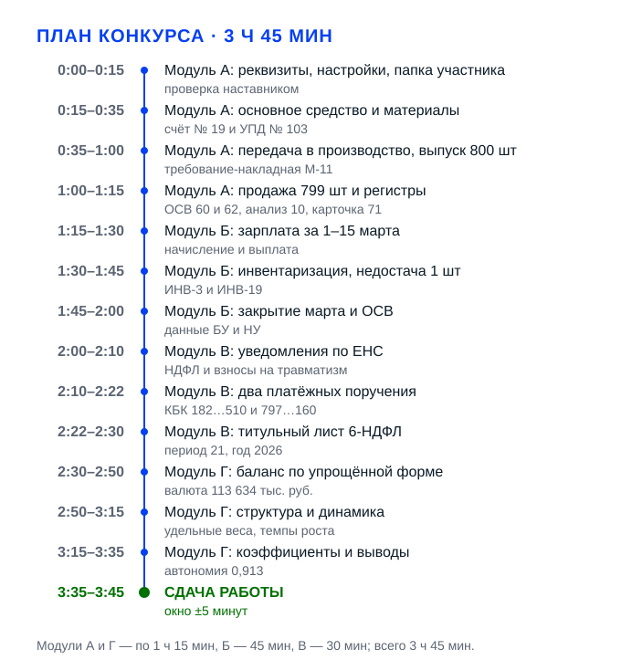
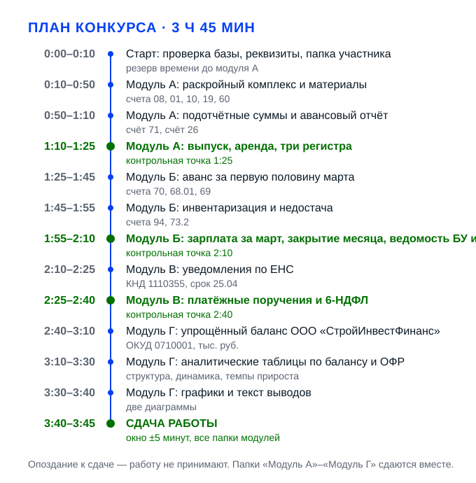
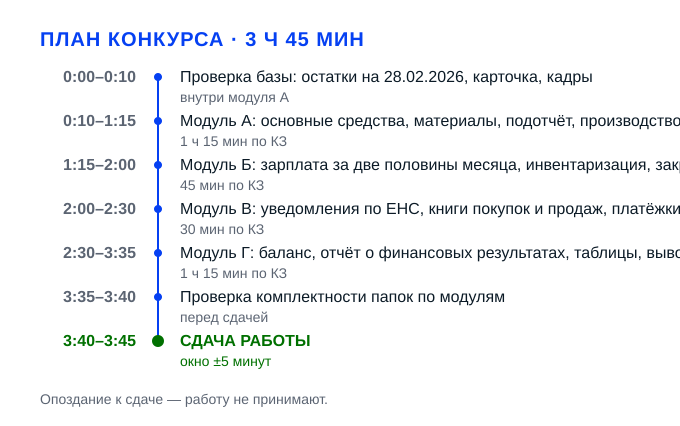

Экономика и бухгалтерский учет (Р)
Задания ниже — официальные файлы «Абилимпикс» (источник: abilympics-russia.ru), разложенные по категориям. Решения написаны по тексту задания, регламенту и критериям оценки; в них указано, что именно проверяет эксперт.
Школьник
14–16 лет, базовый уровень заданияВыдержка из официального конкурсного задания: страницы, относящиеся к категории «Школьник» (стр. 15–16, 22–31 источника).
Пошаговое решение
Задание категории «Школьники» — это четыре модуля за 3 часа 45 минут, и все они связаны одной сквозной историей: швейное предприятие ООО ТД «БАТИК» покупает раскройный комплекс и материалы, выпускает 800 комплектов термобелья, продаёт 799 из них, платит зарплату и налоги, а в конце сдаёт отчётность. В Модуле А вы ведёте учёт активов и расчётов (1 час 15 минут), в Модуле Б — источников формирования активов, зарплаты и инвентаризации (45 минут), в Модуле В — расчётов с бюджетом и фондами (30 минут), в Модуле Г — собираете баланс другой организации и анализируете его (1 час 15 минут). Ошибка в первом модуле тянется через все остальные: неверная стоимость основного средства испортит амортизацию, неверная себестоимость — прибыль, неверные начисления — уведомления и платёжки. Поэтому порядок работы жёсткий: сначала реквизиты и настройки, потом документы в хронологии, потом регистры и отчёты, и каждый файл сразу сохраняется в свою папку модуля. Оценивают не скорость, а связку «документ — проводка — сумма — аналитика — сохранённый файл».

Задача 1. Модуль А: учесть активы организацииМодуль А · 1 час 15 минут
Первый модуль — это фундамент всего чемпионата: если активы встали на счета криво, то и зарплата в Модуле Б, и налоги в Модуле В, и баланс в Модуле Г поедут следом. За 1 час 15 минут вы должны провести в программе март 2026 года от счёта поставщика до отгрузки продукции покупателю: раскройный комплекс как основное средство, десять позиций материалов, передачу их в производство, выпуск 800 штук термобелья, командировочные расходы и продажу 799 штук. Оценивают не «красиво заполненные формы», а связку: документ, проводка, сумма, аналитика и сохранённый файл в папке «Модуль А». Поэтому порядок работы жёсткий — сначала реквизиты и настройки, потом документы в хронологии, потом регистры.
Действие 1.1. Подготовить программу и папку участника
Шаг 1.1.1
Открываем программу автоматизации учёта и в списке организаций заводим ООО ТД «БАТИК»: полное наименование, ИНН 6685111422, КПП 668501001, адрес из задания — Екатеринбург, улица Карла Маркса, дом 60, помещение 5. Систему налогообложения ставим общую, ставку НДС — 22 процента, рабочий период — март 2026 года. Рядом с программой создаём папку участника и в ней подпапку с именем «Модуль А», куда будет уходить каждый сохранённый документ, регистр и отчёт.
Реквизиты организации — не формальность: по ним печатаются счёт, УПД и отчёты, и ошибка в одной цифре КПП вылезет на печати, когда времени на переделку уже нет. Ставку НДС надо выставить до первого документа, иначе счёт № 19 от 2 марта посчитается по другому проценту и не даст итог 2 286 768 рублей. Папка «Модуль А» — отдельный критерий оценки: документ, не сохранённый в нужное место, эксперт не увидит, каким бы правильным он ни был.
Открываем карточку организации и сверяем посимвольно: в ИНН десять цифр, в КПП девять, ставка НДС 22, период март 2026. Заходим в папку «Модуль А», сохраняем туда любой пробный файл и удаляем его — так вы убедитесь, что запись разрешена и путь не перепутан.
Самая частая ошибка — оставить период, который программа предложила по умолчанию: тогда документ датой 2 марта не проводится, и участник начинает менять даты в самих операциях, разваливая хронологию. Вторая — складывать всё в корень флешки: к сдаче файлы теряются среди черновиков, и модуль оценивается как невыполненный.
Эксперт открывает папку «Модуль А» первым делом при приёмке модуля и смотрит, открываются ли файлы и совпадают ли даты в них с датами задания. Карточку организации он проверяет по печатной форме первого же документа: чужое название в шапке видно сразу.
Шаг 1.1.2
Проверяем план счетов и настройки расчётов: нам понадобятся субсчета 60.01 и 60.02 для расчётов с поставщиками, 62.01 и 62.02 для покупателей, счёт 71 с субсчетами, счёт 10 с субсчетами по видам материалов, счёт 43 для готовой продукции и счёт 08.04 для вложений в основные средства. Включаем аналитику по контрагентам и договорам — задание требует оборотно-сальдовую ведомость по счетам 60 и 62 именно в разрезе контрагентов и договоров, и без этой галочки нужный отчёт просто не построится.
Аналитика — это то, что отличает зачётную проводку от незачётной: две одинаковые суммы по разным договорам без договора в аналитике сольются в одну, и разнести их потом невозможно. Субсчета 60.01 и 60.02 нужны, чтобы отдельно видеть долг за поставку и выданные авансы: в счёте № 19 есть условие о 10-процентной предоплате, и путать эти две вещи нельзя.
Открываем план счетов и убеждаемся, что перечисленные субсчета есть и не помечены как неактивные. Затем пробуем построить оборотно-сальдовую ведомость по счёту 60 с группировкой по контрагентам и договорам: если графа «Договор» в настройках отчёта выбирается, всё в порядке.
Ошибка — работать в плане счетов «как есть», не проверив субсчета: в некоторых конфигурациях счёт 60 свёрнут до одного субсчёта, и авансы с долгом смешиваются. Тогда в Модуле А не сойдётся ведомость по контрагентам, а в Модуле Г — строка кредиторской задолженности, и баллы уйдут сразу в двух модулях.
Эксперт смотрит настройки аналитики, когда проверяет регистры: если в ведомости нет разреза по договорам, пункт задания считается невыполненным независимо от сумм. Отдельно он смотрит, не свёрнуты ли субсчета 60 и 62, потому что от этого зависит разнесение авансов.
Шаг 1.1.3
Заводим подразделение «Производство» — именно в него по заданию принимается раскройный комплекс — и номенклатурную группу для выпуска термобелья. В учётной политике проверяем, что затраты собираются на счёте 20, что выпуск оценивается по плановой себестоимости и что корректировка плановой до фактической делается при закрытии месяца. Если в приложении к заданию даны остатки на 1 марта 2026 года, вводим их отдельными документами ввода остатков, не трогая мартовские операции.
Подразделение и номенклатурная группа — это аналитика счёта 20: без них выпуск 800 штук и передача материалов в производство лягут «в никуда», и при закрытии месяца программа не поймёт, куда относить затраты. Плановая оценка выпуска задана прямо в задании — 800 рублей за штуку, значит 640 000 рублей на весь выпуск, и учётная политика должна позволять отразить именно такую схему.
Проверяем справочник подразделений: «Производство» есть и активно. Открываем настройки учётной политики и убеждаемся, что способ оценки выпуска — по плановой себестоимости. Если вводили остатки, строим оборотно-сальдовую ведомость на 1 марта и смотрим, что она непустая и сходится по дебету и кредиту.
Частая ошибка — начать вводить операции 2 марта, не заведя подразделение: программа потребует его в момент проведения и участник создаст его второпях, с опечаткой, а потом не сможет отобрать документы по подразделению. Вторая — вводить остатки датой позже первой операции, из-за чего сальдо на начало марта окажется отрицательным.
Эксперт проверяет, отбираются ли документы по подразделению «Производство» и совпадает ли способ оценки выпуска с условием задания. Если подразделение заведено с опечаткой, он это увидит по списку документов и снимет балл за организацию учёта.
Действие 1.2. Оприходовать основное средство
Шаг 1.2.1
По счёту № 19 от 02.03.2026 от ООО «ТАБЭЛЛА» (ИНН 7715550076, КПП 771501001) вводим поступление: автоматический раскройный комплекс Jack JK-T8, БП-000034, одна штука, цена 1 874 400 рублей, НДС 22 процента — 412 368 рублей, всего к оплате 2 286 768 рублей. Основание — договор № 30 от 28.02.2026, его обязательно указываем в поле договора. Проводка на этом шаге одна: дебет 08.04 кредит 60.01 на 1 874 400 рублей, НДС садится на счёт 19 отдельной суммой.
Комплекс стоит больше миллиона рублей и по всем признакам относится к основным средствам, поэтому сначала собираем затраты на счёте 08.04, а не на счёте 01: объект ещё не готов к работе, его принимают к учёту только 3 марта. Сумма НДС идёт отдельно, потому что её нельзя включать в стоимость объекта — она предъявляется к вычету. Ошибка в этой развилке самая дорогая: неверная стоимость тянет за собой неверную амортизацию и баланс.
Сверяем три числа: 1 874 400 плюс 412 368 должно дать 2 286 768, и эта же сумма написана в счёте прописью. В карточке документа проверяем, что НДС стоит «сверху», а не «в том числе», и что договор № 30 попал в аналитику. В оборотно-сальдовой ведомости по счёту 08.04 на 2 марта висит ровно 1 874 400 рублей.
Типичная ошибка — ввести сумму 2 286 768 как стоимость объекта: тогда НДС окажется внутри первоначальной стоимости, вычет потеряется, а стоимость основного средства вырастет на 412 368 рублей. Вторая — поставить НДС «в том числе», и программа насчитает 337 994 рубля вместо 412 368, что не совпадёт со счётом поставщика.
Эксперт открывает карточку документа и смотрит три поля: сумма без НДС, сумма НДС, итог. Дальше он смотрит счёт дебета — 08.04, а не 01 и не 10, и наличие договора № 30 в аналитике, потому что без него расчёты с поставщиком обезличиваются.
Шаг 1.2.2
Третьего марта оформляем принятие комплекса к учёту: дебет 01 кредит 08.04 на 1 874 400 рублей, подразделение «Производство», инвентарная карточка формы ОС-6 с инвентарным номером БП-000034, срок полезного использования — по амортизационной группе, к которой относится раскройное оборудование. Одновременно принимаем НДС к вычету: дебет 68.02 кредит 19 на 412 368 рублей, но только после того, как объект принят к учёту и получен счёт.
Задание прямо говорит, что комплекс принят к учёту 3 марта в подразделение «Производство» — значит, именно эта дата должна стоять в документе, а не дата счёта и не дата оплаты. Вычет НДС по основным средствам заявляется в момент принятия объекта к учёту, поэтому и он идёт третьим марта. Если перепутать даты, в книге покупок окажется операция, которой ещё не было, а амортизация начнётся на месяц раньше или позже.
Проверяем, что счёт 08.04 закрылся и на нём ноль, а на счёте 01 висит 1 874 400 рублей с аналитикой по подразделению «Производство». В карточке ОС-6 заполнены инвентарный номер, дата принятия, срок использования и способ начисления амортизации. Счёт 19 по этому поставщику закрыт полностью.
Ошибка — принять объект к учёту датой счёта, 2 марта: тогда амортизация начнёт капать с другого месяца, и в Модуле Б при закрытии месяца суммы не сойдутся. Вторая — забыть про вычет НДС: на счёте 19 останется висеть 412 368 рублей, дебет сойдётся с кредитом в ведомости, но экспертный чек-лист по налогам будет провален.
Эксперт смотрит карточку основного средства и дату документа: 3 марта, подразделение «Производство», инвентарный номер БП-000034. Отдельно он проверяет, закрылся ли счёт 08.04 и стоит ли на счёте 01 именно 1 874 400 рублей без налога.
Шаг 1.2.3
Шестого марта отражаем оплату: дебет 60.01 кредит 51 на 2 286 768 рублей, основание — банковская выписка, в назначении платежа пишем «Оплата по счёту № 19 от 02.03.2026 за раскройный комплекс». Если платёж вводится через выписку, программа сама подставит контрагента и договор, и останется только проверить, что сумма списалась именно с расчётного счёта, а не с кассы.
В счёте № 19 есть условие о предоплате в размере 10 процентов, то есть 187 440 рублей, но задание говорит, что 6 марта задолженность погашена в полном объёме. Значит, аванс мы не отражаем и субсчёт 60.02 не используем — это ловушка на внимательность, и правильный ответ здесь один платёж на всю сумму. Закрытая задолженность нужна ещё и потому, что в Модуле Г считается кредиторская задолженность по балансу.
Открываем оборотно-сальдовую ведомость по счёту 60 в разрезе контрагентов и договоров: по ООО «ТАБЭЛЛА» и договору № 30 сальдо должно быть нулевым. На счёте 51 уменьшение ровно на 2 286 768 рублей. В карточке платёжного документа стоит дата 6 марта.
Ошибка — заплатить 10 процентов «как написано в счёте»: задолженность останется висеть, а задание будет считаться невыполненным, хотя деньги ушли. Вторая — провести оплату через кассу или минуя субсчёт 60.01: тогда ведомость по контрагенту не закроется и разойдётся с условием задачи.
Эксперт смотрит сальдо по контрагенту на конец марта: ноль по договору № 30 — признак правильно выполненного пункта. Если вместо этого висит аванс 187 440 рублей, он фиксирует, что участник пошёл за условием счёта, а не за условием задания.
Действие 1.3. Оприходовать материалы десяти наименований
Шаг 1.3.1
По УПД № 103 от 10.03.2026 от ООО «МОТОДОМ 97» (ИНН 6686034530, договор № 2) вводим поступление: десять строк с количеством и единицей измерения. Нитки 45ЛЛ — 18 штук по 113,20, пакет с замком — 10 700 штук по 5,93, пакет майка — 3 800 штук по 29,92, пакет с плоскими ручками — 3 800 штук по 25,00, размерник — 10 200 штук по 1,53, резинка белая — 4 580 метров по 43,41, резинка шляпная — 533,38 метра по 13,22, бирка DF — 8 000 штук по 5,08, ткань флисовая — 6 864 метра по 114,73, биркодержатели — 5 250 штук по 98,95. Итог 1 843 293,90 рубля, НДС 405 524,66, всего 2 248 818,56.
Каждая строка должна попасть в справочник номенклатуры отдельной карточкой с верной единицей измерения: если резинку завести в штуках, а в калькуляции она в метрах, расчёт потребности на 800 изделий даст бессмысленное число. Сумма НДС в задании посчитана как 22 процента от итога, и она должна совпасть до копейки, иначе в книге покупок появится расхождение с документом поставщика.
Проверяем, что итог документа 1 843 293,90 и НДС 405 524,66 совпадают с УПД. Проверить НДС можно на калькуляторе: 1 843 293,90 умножить на 22 и разделить на 100. Открываем анализ счёта 10 и убеждаемся, что все десять позиций видны по отдельности, с количествами и суммами.
Ошибка — ввести одной строкой «материалы на 1 843 293,90»: тогда не будет ни анализа счёта 10 по субсчетам, ни расчёта потребности, и два пункта задания провалятся одновременно. Вторая — перепутать единицу измерения у ткани или резинки, из-за чего требование-накладная покажет нереальное количество.
Эксперт открывает анализ счёта 10 и считает строки: их должно быть десять, с правильными единицами измерения. Он же сверяет итог документа с УПД № 103, потому что расхождение в копейках означает ошибку в одной из строк поступления.
Шаг 1.3.2
Принимаем НДС к вычету по поступившим материалам: дебет 68.02 кредит 19 на 405 524,66 рубля, датой 10 марта, после того как УПД проведён и материалы оприходованы. В книге покупок проверяем запись: номер и дата УПД № 103, ИНН 6686034530, стоимость без НДС 1 843 293,90, сумма налога 405 524,66. Если запись не появилась, значит, в документе не заполнено поле счёта-фактуры.
Вычет по материалам уменьшает НДС к уплате, а значит напрямую влияет на Модуль В, где считаются расчёты с бюджетом: если вычет не заявлен, сумма налога к уплате окажется больше на 405 524,66 рубля и уведомление по ЕНС уйдёт с неверной суммой. Заявлять вычет раньше оприходования нельзя — это нарушение, которое эксперт фиксирует как ошибку в учёте налогов.
Смотрим карточку счёта 19: по контрагенту ООО «МОТОДОМ 97» сальдо нулевое, вся сумма ушла в дебет 68.02. В отчёте «Книга покупок» за март запись одна и сумма налога в ней 405 524,66. Сальдо счёта 68.02 уменьшилось ровно на эту величину.
Типичная ошибка — заявить вычет по счёту, а не по УПД: задание подчёркивает, что материалы приняты к учёту на основании УПД № 103, и основание в книге покупок должно быть именно таким. Вторая — включить НДС в стоимость материалов, и тогда себестоимость термобелья вырастет, а вместе с ней исказится прибыль в Модуле Б.
Эксперт сверяет книгу покупок с УПД: реквизиты, суммы, дата регистрации. Он отдельно смотрит, стоит ли вычет в том же месяце, что и оприходование, и не попал ли налог в стоимость материалов.
Шаг 1.3.3
Шестнадцатого марта закрываем долг перед поставщиком: дебет 60.01 кредит 51 на 2 248 818,56 рубля, назначение платежа — оплата по УПД № 103 от 10.03.2026 за материалы по договору № 2. Платёж вводим из банковской выписки, чтобы не набирать реквизиты вручную: БИК 044525411, счёт 40702810220020000280, филиал «Центральный» Банка ВТБ, получатель ООО «МОТОДОМ 97».
Задание требует погасить задолженность в полном объёме, и именно полная оплата делает корректной кредиторскую задолженность на конец месяца: она попадёт в строку 1520 баланса в Модуле Г. Кроме того, при ручном вводе платежа легко ошибиться в копейках — 2 248 818,56 против 2 248 818,00, и тогда по контрагенту останется висеть 56 копеек, которые никто не заметит до сверки.
В оборотно-сальдовой ведомости по счёту 60 сальдо по ООО «МОТОДОМ 97» и договору № 2 равно нулю. В карточке счёта 51 сумма списания ровно 2 248 818,56. В ведомости по контрагентам за март этот поставщик закрыт полностью.
Ошибка — округлить платёж до рублей: остаток в 56 копеек испортит сверку и будет выглядеть как незакрытая задолженность. Вторая — оплатить раньше оприходования, 10 марта: тогда в учёте появится аванс, а его в этой операции по условию задачи быть не должно.
Эксперт проверяет закрытие расчётов по контрагенту и дату платежа — 16 марта, то есть после оприходования материалов. Он же смотрит, не осталось ли копеечного сальдо, которое обычно появляется при ручном наборе суммы платежа.
Действие 1.4. Передать материалы в производство и выпустить продукцию
Шаг 1.4.1
Считаем потребность на 800 штук по калькуляции: бирка DF — 1,000, значит 800 штук на 4 064 рубля; нитки 45ЛЛ — 0,050, то есть 40 штук на 4 528 рублей; пакет майка — 0,500, то есть 400 штук на 11 968 рублей; пакет с замком — 1,000, то есть 800 штук на 4 744 рубля; пакет с плоскими ручками — 0,500, то есть 400 штук на 10 000 рублей; размерник — 2,000, 1 600 штук на 2 448 рублей; резинка белая — 0,610 метра, то есть 488 метров на 21 184,08 рубля; ткань флисовая — 1,760 метра, то есть 1 408 метров на 161 539,84 рубля; биркодержатели — 1,000, 800 штук на 79 160 рублей. Итого 299 635,92 рубля.
Калькуляция — это единственное место в задании, где сказано, сколько именно материалов уходит в производство: цифры «определить самостоятельно» означают, что считать надо строго по нормам, а не «взять весь остаток». Расчёт удобно сделать в таблице офисного пакета с тремя столбцами — норма, количество, сумма — и сохранить её в папку «Модуль А»: он же будет доказательством обоснованности требования-накладной.
Проверяем построчно: количество на 800 умножается на цену без НДС, суммы складываются в 299 635,92 рубля. Отдельно смотрим, что списываемое количество не превышает закупленное: ткани 1 408 метров из 6 864, резинки белой 488 из 4 580, всё остальное тоже с запасом.
Ошибка — списать материалы «на всю сумму поступления»: тогда на счёте 10 останется ноль, а затраты вырастут до 1 843 293,90 рубля, и прибыль от продаж в Модуле Б превратится в убыток. Вторая — взять норму как количество на партию, а не на штуку, и списать в 800 раз больше, чем нужно.
Эксперт сверяет требование-накладную с калькуляцией: нормы, количество, суммы. Расхождение хотя бы в одной строке — минус балл за расчёт потребности, поэтому расчётную таблицу лучше сохранить рядом с накладной как доказательство.
Шаг 1.4.2
Двадцать пятого марта оформляем требование-накладную формы М-11 и проводим передачу материалов в производство: дебет 20 кредит 10 на 299 635,92 рубля, с аналитикой по подразделению «Производство» и номенклатурной группе термобелья. Списываем по каждому наименованию отдельной строкой, чтобы анализ счёта 10 показал движение по субсчетам, а не одно свёрнутое число.
Счёт 20 — это себестоимость выпуска: именно туда должны попасть материалы, чтобы при закрытии месяца сформировалась фактическая себестоимость термобелья. Если списать материалы на счёт 26 или сразу на 90.02, выпуск останется без затрат, и в Модуле Б корректировка плановой себестоимости даст абсурдную цифру. Задание отдельно требует анализ счёта 10 по субсчетам — значит, движение должно быть видно в разрезе видов материалов.
Открываем анализ счёта 10 за март: по каждому субсчёту есть приход 10 марта и расход 25 марта, конечное сальдо равно разнице. Сумма расхода по всем субсчетам — 299 635,92. На счёте 20 в дебете стоит та же сумма с аналитикой по подразделению.
Ошибка — провести списание одной строкой «материалы» без номенклатуры: анализ счёта 10 по субсчетам будет формально построен, но пустой, и пункт задания не засчитают. Вторая — списать датой 10 марта, вместе с поступлением: тогда на складе в момент инвентаризации 23 марта не будет продукции, и вся логика Модуля Б рассыпется.
Эксперт смотрит дату требования-накладной — 25 марта, и корреспонденцию счетов 20 и 10 с указанием подразделения. Если списание сделано одной строкой без номенклатуры, он видит это по пустому анализу счёта 10.
Шаг 1.4.3
Оформляем выпуск готовой продукции: 800 штук термобелья зимнего с высоким воротом женского Lavander по плановой стоимости 800 рублей за штуку, то есть на 640 000 рублей, дебет 43 кредит 20. Документ — отчёт производства за смену, в нём подразделение «Производство», дата 25 марта, номенклатура и количество. Плановая оценка вводится именно как плановая, а не как фактическая себестоимость.
Плановая себестоимость задана в задании числом 800,00, и это не подсказка, а требование: при закрытии месяца программа сама сравнит план с фактом и сделает корректировку. Если сразу записать в дебет 43 сумму фактических затрат, корректировка не сформируется, и в Модуле Б не будет одной из ключевых проводок закрытия месяца. Кроме того, 800 штук — это база для расчёта себестоимости продажи 799 штук.
Проверяем карточку счёта 43: приход 800 штук на 640 000 рублей одной строкой с номенклатурой Lavander. В отчёте производства стоит дата 25 марта и подразделение «Производство». Пересчитываем: 800 умножить на 800 равно 640 000, число сходится.
Ошибка — выпустить 799 штук «потому что столько продаём»: тогда одна штука недостачи 23 марта не найдётся, и проводка по инвентаризации в Модуле Б не будет иметь основания. Вторая — указать количество в килограммах или без номенклатуры, из-за чего отчёт производства не свяжется со счётом 43.
Эксперт сверяет количество выпуска со счётом 43 и с условием задания: 800 штук и 640 000 рублей по плановой оценке. Он же проверяет, что оценка введена как плановая, иначе при закрытии месяца корректировка не сформируется.
Действие 1.5. Учесть командировку, продажу и сформировать регистры
Шаг 1.5.1
Семнадцатого марта выдаём под отчёт Миронову А.А. 20 000 рублей на командировочные расходы: дебет 71.01 кредит 51, основание — заявление сотрудника. Тридцать первого марта принимаем авансовый отчёт № 1 по форме АО-1 на 21 373 рубля: авиабилеты ПАО «АЭРОФЛОТ» 6 380 и 5 093 рубля с НДС 10 процентов, суточные 7 700 рублей и суточные сверх нормы 2 200 рублей. Проводки: дебет 26 кредит 71.01 на 21 373 рубля и дебет 71.01 кредит 50.01 на перерасход 1 373 рубля.
Авансовый отчёт — это документ, где сходятся три вещи: выданный аванс, израсходованная сумма и остаток либо перерасход. Здесь израсходовано больше, чем выдано, поэтому возникает перерасход 1 373 рубля, и он должен быть выдан из кассы, а не списан на затраты дважды. НДС по билетам считается расчётно: 6 380 умножить на 10 и разделить на 110 даёт 580 рублей, 5 093 — 463 рубля, эти суммы идут к вычету и не включаются в расходы.
Складываем четыре строки обратной стороны отчёта: 6 380 плюс 5 093 плюс 7 700 плюс 2 200 равно 21 373, и эта же сумма стоит в шапке отчёта. Сальдо по счёту 71.01 после всех операций нулевое. Суточные 7 700 рублей — это 700 рублей за 11 дней, сверх нормы 2 200 — по 200 рублей за те же 11 дней.
Ошибка — отнести на затраты только 20 000 выданных рублей, а перерасход забыть: тогда сальдо по счёту 71 повиснет, а расходы окажутся занижены на 1 373 рубля. Вторая — включить НДС по билетам в стоимость проезда: вычет потеряется, и в Модуле В сумма налога к уплате будет неверной.
Эксперт открывает авансовый отчёт и смотрит три поля: итог отчёта, сумму полученного аванса, перерасход. Дальше он проверяет проводки по счетам 26 и 71 и отдельно — выделен ли НДС по авиабилетам расчётным методом.
Шаг 1.5.2
Двадцать шестого марта выставляем счёт ОАО «Аорта» (ИНН 6668001613, КПП 662301001) по договору № 2 от 20.03.2024 на 799 штук термобелья по 3 000 рублей за штуку с НДС, итого 2 397 000 рублей. Отражаем реализацию: дебет 62.01 кредит 90.01 на 2 397 000 рублей, НДС 432 245,90 рубля — дебет 90.03 кредит 68.02, себестоимость 799 штук по 800 рублей — 639 200 рублей, дебет 90.02 кредит 43.
Цена в задании дана с НДС, поэтому налог нельзя считать сверху: 2 397 000 умножить на 22 и разделить на 122 даёт 432 245,90, а выручка без налога — 1 964 754,10. Если посчитать НДС сверху, выручка и налог разойдутся с договором, а прибыль от продаж в Модуле Б окажется завышенной. Себестоимость списываем только по проданному количеству — 799 штук, потому что одна штука уйдёт в недостачу.
Проверяем: 799 умножить на 3 000 равно 2 397 000, минус НДС 432 245,90 равно 1 964 754,10. На счёте 43 после списания остаётся одна штука на 800 рублей — именно её 23 марта и не досчитаются при инвентаризации. На счёте 62.01 висит дебиторская задолженность покупателя до оплаты.
Ошибка — списать себестоимость на все 800 штук: тогда недостача в Модуле Б не будет обеспечена остатком и проводка дебет 94 кредит 43 даст красное сальдо. Вторая — начислить НДС сверху, получить 527 340 рублей и разойтись с суммой в счёте на 95 тысяч.
Эксперт смотрит три проводки реализации и отдельно проверяет, что НДС начислен расчётным методом от суммы с налогом. Он же сверяет количество в счёте покупателю с остатком на счёте 43 после списания себестоимости.
Шаг 1.5.3
Формируем три регистра, которые требует задание: оборотно-сальдовую ведомость за март 2026 года по счетам 60 и 62 в разрезе контрагентов и договоров, причём в настройках отчёта снимаем галочку отбора по документам расчётов; анализ счёта 10 «Материалы» за март в разрезе субсчетов; карточку счёта 71 в разрезе субсчетов. Каждый отчёт сохраняем в папку «Модуль А» отдельным файлом с понятным именем.
Регистры — это то, что эксперт открывает вместо ваших объяснений: по ним видно, правильно ли выбрана аналитика и не свёрнуты ли суммы. Про отбор по документам расчётов в задании сказано отдельно, потому что при включённом отборе ведомость показывает только оплаченные позиции, а нам нужна вся задолженность по договорам. Карточка счёта 71 нужна, чтобы был виден путь 20 000 рублей: выдача, отчёт, перерасход.
Проверяем каждый отчёт на экране перед сохранением: в ведомости по 60 и 62 есть столбцы «Контрагент» и «Договор», суммы разложены, итог равен нулю по обоим поставщикам и равен 2 397 000 по покупателю. В анализе счёта 10 девять строк с движениями, в карточке 71 три операции и нулевое сальдо.
Ошибка — сохранить ведомость без разреза по договорам или с включённым отбором по документам расчётов: пункт задания формально выполнен, а по факту нет. Вторая — сохранить отчёты в формате, который не открывается на компьютере эксперта, например в таблице без сохранения или в предпросмотре.
Эксперт открывает три файла и сверяет наличие разрезов: контрагент, договор, субсчёт. Отсутствие любого из трёх регистров — минус балл за модуль целиком, поэтому имена файлов должны сразу говорить, что внутри.
Задача 2. Модуль Б: источники активов, зарплата и инвентаризацияМодуль Б · 45 минут
Второй модуль опирается на первый: всё, что вы провели в Модуле А, теперь нужно довести до закрытия месяца. За 45 минут вы начисляете и выплачиваете зарплату за первую половину марта, оформляете инвентаризацию с недостачей одной штуки готовой продукции, относите её на конкретного сотрудника и закрываете март так, чтобы на счёте 99 появился финансовый результат. Оценка идёт за документы, проводки и за оборотно-сальдовую ведомость с данными бухгалтерского и налогового учёта: именно она показывает, сошлась ли вся картина месяца или где-то остался незакрытый счёт.
Действие 2.1. Начислить и выплатить зарплату за первую половину марта
Шаг 2.1.1
Открываем табель учёта рабочего времени за период с 1 по 15 марта: по условию отработка у всех полная, значит в табеле по каждому сотруднику стоят все рабочие дни этого периода, без прогулов и больничных. На основании табеля вводим документ начисления зарплаты за первую половину месяца с датой 20 марта, подразделение «Производство», счёт затрат 20. Проводка: дебет 20 кредит 70 на всю начисленную сумму, суммы берём из окладов, которые даны в приложении к заданию, и не придумываем свои.
За первую половину месяца начисляется аванс, и его нельзя считать «половиной оклада на глаз»: он считается от фактически отработанных дней, а в условии отработка полная, база — дни с 1 по 15 марта. Счёт затрат 20 выбран потому, что сотрудники работают в производстве, и зарплата должна попасть в себестоимость выпуска, иначе при закрытии месяца фактическая себестоимость термобелья окажется заниженной и корректировка в Модуле Б даст неверную сумму.
Проверяем: в документе стоит дата 20 марта, подразделение «Производство», счёт затрат 20, количество отработанных дней совпадает с табелем. В карточке счёта 70 появился кредитовый оборот, в карточке счёта 20 — дебетовый на ту же сумму. Сумма начисленного совпадает с расчётом по окладам из приложения.
Ошибка — начислить сразу весь месячный оклад, не разделив на первую и вторую половину: тогда выплата 20 марта окажется равна начислению за весь месяц, а НДФЛ удержится один раз вместо двух. Вторая — поставить счёт затрат 26: зарплата производственных рабочих уйдёт в общехозяйственные расходы, и выпуск продукции останется без трудовых затрат.
Эксперт сверяет табель и документ начисления: период, дни, счёт затрат, подразделение. Отдельно смотрит, что начисление датировано 20 марта и что сумма не равна всему месячному окладу, потому что это признак неразделённого расчёта.
Шаг 2.1.2
Удерживаем НДФЛ и начисляем страховые взносы. НДФЛ по ставке 13 процентов удерживается в момент выплаты дохода: дебет 70 кредит 68.01, и с 2023 года налог удерживается и с аванса, поэтому ждать конца месяца нельзя. Взносы начисляются на ту же базу: дебет 20 кредит 69 по субсчетам — пенсионное, медицинское, социальное страхование и страхование от несчастных случаев на производстве по установленному тарифу.
НДФЛ — это не расход организации, а деньги, которые вы удерживаете из дохода сотрудника и перечисляете в бюджет: поэтому он идёт в кредит счёта 68.01, а не на затраты. Взносы, наоборот, расход организации и увеличивают себестоимость, поэтому остаются на счёте 20. Именно из этих начислений вырастут суммы уведомлений по ЕНС в Модуле В, и если сейчас ошибиться, платёжка уйдёт на неверную сумму.
Проверяем базу: НДФЛ плюс сумма к выплате должны дать начисленную сумму, а взносы считаются от начисленной суммы, а не от суммы после удержания налога. В карточке счёта 68.01 видно кредитовый оборот, в карточке счёта 69 — начисления по каждому субсчёту отдельно.
Частая ошибка — считать взносы от суммы «на руки»: тогда база занижена на 13 процентов, и все три вида взносов недосчитаны. Вторая — удержать НДФЛ только в конце месяца, из-за чего выплата 20 марта уходит полностью, а налог потом не с чего удерживать.
Эксперт смотрит карточку счёта 68.01 и счёт 69: суммы начислений должны соответствовать базе, а субсчета — быть заполнены все. Если взносы посчитаны от суммы на руки, он увидит это по расхождению с базой начисления.
Шаг 2.1.3
Двадцатого марта перечисляем зарплату с расчётного счёта: дебет 70 кредит 51 на сумму к выплате, документ — платёжная ведомость и реестр в банк. После этого проверяем расчётные листки: в них должны быть видны начисление, удержание и сумма к выплате, и эти три числа должны совпадать с документом начисления и с платёжкой. Сальдо счёта 70 после выплаты должно стать нулевым.
Задание говорит «начислена и перечислена» — значит, одного начисления мало, нужна именно выплата с расчётного счёта, иначе пункт не выполнен. Нулевое сальдо счёта 70 важно для Модуля Г: незакрытая задолженность по оплате труда попадёт в кредиторскую задолженность баланса и исказит анализ. Кроме того, по дате выплаты определяется срок перечисления НДФЛ, который проверяется в Модуле В.
Открываем оборотно-сальдовую ведомость по счёту 70: обороты по дебету и кредиту равны, сальдо на 31 марта нулевое. В карточке счёта 51 списание совпадает с суммой к выплате из расчётной ведомости. Расчётные листки распечатаны или сохранены в папку «Модуль Б».
Ошибка — выплатить всю начисленную сумму, забыв про удержанный НДФЛ: сальдо счёта 70 уйдёт в дебет, а в бюджете окажется недоплата. Вторая — сделать выплату через кассу, хотя по заданию деньги перечисляются с расчётного счёта, и тогда корреспонденция счетов будет другой.
Эксперт проверяет дату выплаты, счёт 51 в корреспонденции и нулевое сальдо по счёту 70 на конец месяца. Он же смотрит расчётные листки: если их нет, проверить правильность удержания ему нечем.
Действие 2.2. Оформить инвентаризацию и недостачу
Шаг 2.2.1
Двадцать третьего марта оформляем инвентаризацию готовой продукции: приказ руководителя о проведении, инвентаризационная опись формы ИНВ-3 по складу готовой продукции, затем сличительная ведомость формы ИНВ-19. По данным учёта на складе 800 штук термобелья, по факту — 799, то есть недостача одной штуки на 800 рублей по плановой себестоимости. В описи фиксируем фактическое наличие, в сличительной — расхождение с учётом.
Инвентаризация — это единственный законный способ обнаружить недостачу и отразить её в учёте: без описи и сличительной ведомости проводка на счёте 94 висит без основания и эксперт её не засчитает. Одна штука — не мелочь: именно она объясняет, почему выпущено 800 изделий, а продано 799, и если её не оформить, в балансе останется готовая продукция на 800 рублей, которой физически нет.
Проверяем три числа: в описи 799 штук, в учёте 800, в сличительной ведомости недостача 1 штука на 800 рублей. Дата на всех трёх документах — 23 марта. В ведомости указано материально ответственное лицо и подписи членов комиссии.
Ошибка — оформить только сличительную ведомость без описи: тогда непонятно, откуда взялось расхождение. Вторая — списать недостачу сразу на затраты, минуя счёт 94: нарушается порядок, и сумма не будет отнесена на виновное лицо, как требует задание.
Эксперт смотрит комплект: приказ, опись, сличительная ведомость, и проверяет, что дата у всех одна — 23 марта. Он же смотрит подписи членов комиссии, потому что без них документ считается неоформленным.
Шаг 2.2.2
Отражаем недостачу в учёте: дебет 94 кредит 43 на 800 рублей по плановой себестоимости одной штуки. Счёт 94 — «Недостачи и потери от порчи ценностей» — это промежуточный счёт, на котором недостача висит до момента, когда определено, за чей счёт её списывать. Сумму берём ровно 800 рублей, потому что задание прямо говорит: недостача отнесена по плановой себестоимости.
Плановая себестоимость, а не продажная цена, выбрана не случайно: до выяснения виновного лица организация теряет ровно столько, сколько стоило изделие, а не столько, сколько за него можно было выручить. Если списать по продажной цене 3 000 рублей, на счёте 94 появится сумма с НДС и наценкой, и дальнейшее отнесение на сотрудника окажется завышенным, что в свою очередь исказит расчёты по возмещению ущерба.
Проверяем карточку счёта 43: после списания на складе остаётся 799 штук, и это число совпадает с отгрузкой покупателю 26 марта. На счёте 94 висит дебетовое сальдо 800 рублей. В карточке счёта 43 сумма списания ровно 800, а не 3 000.
Ошибка — списать недостачу по продажной стоимости: получится 3 000 рублей, и при отнесении на сотрудника удерживать с него будут лишнее. Вторая — провести списание напрямую с 43 на 91.02, минуя счёт 94, из-за чего пропадёт вся логика возмещения ущерба.
Эксперт сверяет сумму на счёте 94 с плановой себестоимостью 800 рублей и с количеством 1 штука. Если на счёте 94 стоит 3 000 рублей, он сразу видит, что недостачу оценили по продажной цене.
Шаг 2.2.3
Относим недостачу на виновное лицо: дебет 73.02 кредит 94 на 800 рублей, аналитика — Соколова Анна Альбертовна. Основание — сличительная ведомость, письменное объяснение сотрудника и приказ руководителя о взыскании. Счёт 73.02 называется «Расчёты по возмещению ущерба», и именно на нём задолженность сотрудника будет висеть до момента, когда он внесёт деньги или сумму удержат из зарплаты.
Задание называет конкретного сотрудника, значит, недостача не списывается на прочие расходы, а становится дебиторской задолженностью работника: это принципиально разные вещи и для учёта, и для налога на прибыль. При списании на 91.02 организация теряет деньги, при отнесении на 73.02 — сохраняет право требовать их с виновного. Кроме того, при списании на прочие расходы понадобилось бы подтверждать отсутствие виновных лиц документально.
Проверяем: счёт 94 закрыт, сальдо нулевое, а на счёте 73.02 по сотруднику Соколовой А.А. висит 800 рублей. В карточке счёта видна цепочка из двух проводок — с 43 на 94 и с 94 на 73.02. Приложены объяснение и приказ.
Ошибка — отнести недостачу на 91.02 «как прочие расходы»: задание требует отнесения на сотрудника, и пункт не будет засчитан. Вторая — указать в аналитике не того сотрудника или оставить аналитику пустой, из-за чего задолженность обезличится.
Эксперт открывает карточку счёта 73.02 и смотрит фамилию: Соколова Анна Альбертовна и сумма 800 рублей. Он же проверяет, закрылся ли счёт 94, потому что незакрытый счёт 94 означает незавершённое отнесение недостачи.
Действие 2.3. Закрыть март
Шаг 2.3.1
Тридцать первого марта запускаем закрытие месяца и проходим по шагам: сначала корректировка плановой себестоимости выпуска до фактической, потом закрытие счёта 20 на счёт 43 или 90.02, затем закрытие общехозяйственных расходов и закрытие счетов 90 и 91 на счёт 99. Перед запуском проверяем, что все документы марта проведены и ни один не помечен на удаление, иначе закрытие пройдёт частично и придётся повторять.
Закрытие месяца — это тот шаг, где все предыдущие ошибки становятся видны: если материалы списаны не на тот счёт или зарплата попала в общехозяйственные расходы, фактическая себестоимость не сойдётся с плановой, и корректировка получится бессмысленной. Задание требует произвести полное закрытие месяца, то есть все счета должны быть закрыты, а не только те, которые получились сами.
Смотрим отчёт о проведении закрытия месяца: все пункты отмечены выполненными, без красных пометок об ошибках. На счёте 20 сальдо нулевое, на счетах 90 и 91 сальдо нулевое, на счёте 99 — финансовый результат. Проверяем, что сумма корректировки плановой себестоимости отражена отдельной проводкой.
Ошибка — закрыть месяц, не проверив проведение документов: программа закроет только проведённые, а непроведённые останутся висеть, и ОСВ не сойдётся. Вторая — закрывать месяц вручную отдельными операциями, минуя обработку: легко забыть закрыть счёт 26 или 91, и прибыль окажется завышенной.
Эксперт смотрит отчёт о закрытии месяца и проверяет, что все этапы выполнены без ошибок. Он отдельно смотрит, запускалась ли обработка закрытия вообще, потому что ручные операции вместо неё видны по составу проводок.
Шаг 2.3.2
Проверяем результат закрытия: на счёте 90.09 должно быть нулевое сальдо, то есть финансовый результат от продаж полностью перенесён на счёт 99. Сравниваем сумму на счёте 99 с расчётом: выручка без НДС 1 964 754,10 рубля минус себестоимость проданных 799 штук, минус командировочные расходы и прочие затраты месяца. Если получилось отрицательное число, значит, где-то потеряна выручка или задвоены расходы.
Проверка счёта 99 — это финальная сверка всей вашей работы за два модуля: одно число вбирает в себя и правильность проводок по активам, и зарплату, и инвентаризацию, и закрытие. Если оно расходится с вашим расчётом, искать ошибку надо не в отчёте, а в документах, и лучше найти её сейчас, чем в Модуле Г, где на основе этих данных строится баланс.
Открываем анализ счёта 99: обороты по дебету и кредиту, сальдо на конец марта. Затем анализ счёта 90 по субсчетам: 90.01 — выручка 1 964 754,10 без НДС, 90.02 — себестоимость, 90.03 — НДС 432 245,90, 90.09 — закрытие. Суммы субсчетов должны сходиться с проводками, которые вы делали вручную.
Ошибка — оставить счёт 90.09 с сальдо: значит, закрытие прошло не до конца, и в балансе появится строка, которой там быть не должно. Вторая — не заметить, что выручка на счёте 90.01 стоит с НДС, и получить прибыль завышенной на 432 245,90 рубля.
Эксперт проверяет нулевое сальдо на счетах 90 и 91 и наличие финансового результата на счёте 99. Если на 90.09 осталось сальдо, он делает вывод, что закрытие месяца прошло не до конца.
Действие 2.4. Сформировать ведомость с бухгалтерским и налоговым учётом
Шаг 2.4.1
Строим оборотно-сальдовую ведомость за март 2026 года с выводом данных по бухгалтерскому и налоговому учёту одновременно и с наименованиями счетов. В настройках отчёта включаем обе галочки — БУ и НУ, а также колонку с наименованием счёта, потому что задание требует именно такого вида. Сохраняем файл в папку «Модуль Б» и дополнительно распечатываем или сохраняем в нередактируемом формате.
Совмещённая ведомость нужна, чтобы эксперт одним взглядом увидел, совпадают ли бухгалтерские и налоговые суммы: расхождение между ними допустимо только там, где есть нормируемые расходы, например суточные сверх нормы. Если налоговый учёт вёлся «мимо» и суммы разошлись везде, это признак того, что часть операций проведена без аналитики или вручную.
Проверяем главное: итог дебета равен итогу кредита и на начало, и на конец периода, иначе ведомость не сойдётся ни в одном отчёте. В колонках БУ и НУ суммы по большинству счетов совпадают, а расхождения объяснимы. Все счета имеют наименования, а не только номера.
Ошибка — вывести ведомость только по бухгалтерскому учёту: пункт задания требует данных и БУ, и НУ, и без второй колонки он не засчитывается. Вторая — сохранить ведомость без наименований счетов, и тогда эксперт не сможет сопоставить строки с планом счетов.
Эксперт открывает файл и проверяет три вещи: наличие колонок БУ и НУ, наименования счетов и равенство итогов дебета и кредита. Отсутствие любой из трёх колонок означает, что пункт задания не выполнен.
Задача 3. Модуль В: расчёты с бюджетом и внебюджетными фондамиМодуль В · 30 минут
Третий модуль — самый короткий, 30 минут, и самый формальный: здесь почти нет расчётов, зато есть много реквизитов, в которых легко ошибиться. Нужно сформировать налоговые уведомления по единому налоговому счёту, подготовить платёжные поручения на НДФЛ и страховые взносы от несчастных случаев, а также собрать титульный лист формы 6-НДФЛ. Все суммы берутся из начислений Модуля Б: ничего считать заново не нужно, нужно аккуратно перенести и сверить. Каждая цифра реквизитов проверяется экспертом посимвольно, поэтому работа идёт медленно и с двойной проверкой, а не быстро и наугад.
Действие 3.1. Сформировать уведомления по ЕНС
Шаг 3.1.1
Формируем налоговое уведомление по НДФЛ: в программе автоматизации учёта открываем раздел уведомлений об исчисленных суммах и создаём документ за первый квартал 2026 года. В нём указываем код налогового периода, срок уплаты, сумму налога, удержанную с выплаты 20 марта, и код бюджетной классификации для НДФЛ, который программа подставляет из справочника. Сумма берётся из карточки счёта 68.01, а не считается заново.
Уведомление — это документ, которым организация сообщает налоговой, сколько она исчислила, до того как наступил срок уплаты: без него деньги, перечисленные единым платежом, не распределятся по налогам и повиснут как невыясненное поступление. Сумма должна совпадать с начислением до копейки, иначе инспекция зафиксирует расхождение, а участник потеряет баллы сразу и за уведомление, и за платёжное поручение.
Проверяем: сумма в уведомлении равна кредитовому обороту счёта 68.01 за март, код периода соответствует первому кварталу, срок уплаты не позже 28-го числа следующего месяца. Документ сохранён в папку «Модуль В» и имеет читаемую печатную форму.
Ошибка — указать сумму налога, перечисленного, а не исчисленного: это разные величины, и уведомление разойдётся с расчётом 6-НДФЛ. Вторая — поставить неверный код периода, из-за чего платёж отнесётся к другому отчётному сроку.
Эксперт сверяет сумму уведомления с карточкой счёта 68.01 и с формой 6-НДФЛ: все три числа должны совпадать. Он же смотрит код периода, потому что неверный код отправляет платёж в другой отчётный срок.
Шаг 3.1.2
Формируем второе уведомление — по страховым взносам. В нём указываем получателя ОСФР по Саратовской области, ИНН 6452024495, КПП 645401001, ОКТМО 63630101001, код бюджетной классификации 797 1 02 12000 06 1000 160 и сумму взносов на страхование от несчастных случаев на производстве, начисленную за март по карточке счёта 69. Отдельно проверяем, что в уведомлении стоит именно тот КБК, который указан в задании, а не подставленный по умолчанию.
Взносы на травматизм с 2023 года платятся не в составе единого налогового платежа, а напрямую в Социальный фонд, и у них свои реквизиты и свой КБК. Задание даёт эти реквизиты полностью, и подставлять похожие из справочника нельзя: ошибка в одном разряде КБК приведёт к тому, что платёж уйдёт в невыясненные, а задолженность останется. Уведомление по таким взносам тоже подаётся, но в фонд, а не в налоговую.
Сверяем посимвольно: ИНН десять цифр, КПП девять, ОКТМО одиннадцать, КБК двадцать цифр. Сумма совпадает с начислением по субсчёту взносов на травматизм. Документ сохранён в папку «Модуль В» вместе с печатной формой.
Ошибка — отправить взносы на травматизм в составе ЕНП: они не относятся к единому платежу, и налоговая их не примет. Вторая — взять КБК взносов на пенсионное страхование, который начинается с 182, а не с 797.
Эксперт проверяет КБК и получателя: 797 и ОСФР по Саратовской области, а не Казначейство России. Он смотрит и ОКТМО, потому что взносы с чужим ОКТМО попадают в карточку другого муниципалитета.
Шаг 3.1.3
Сверяем оба уведомления с начислениями: открываем карточку счёта 68.01 и карточку счёта 69 по субсчетам за март и сравниваем построчно. Сумма уведомления по НДФЛ должна быть равна удержанному налогу, сумма по взносам — начисленным взносам. Если расхождение хотя бы в копейку, ищем причину в документе начисления, а не правим уведомление вручную под нужную цифру.
Сверка занимает две минуты, но именно она ловит большинство ошибок модуля: неверная база, забытая выплата, взносы, посчитанные от суммы на руки. Править уведомление вручную под начисление — плохая идея, потому что тогда ошибка останется в учёте и всплывёт в форме 6-НДФЛ, где её увидит эксперт. Критерий оценки прямо говорит о верно исчисленных суммах, а не о красиво заполненных бланках.
Обе суммы совпадают с карточками счетов до копейки. Рядом с уведомлениями лежит распечатка карточек 68.01 и 69 — так видно, что сверка действительно делалась. Сальдо единого налогового счёта в программе соответствует исчисленным суммам.
Ошибка — сверить только НДФЛ и забыть про взносы: половина модуля остаётся без подтверждения. Вторая — подогнать уведомление под платёж, а не под начисление, из-за чего в 6-НДФЛ появится расхождение, которое эксперт увидит при сверке.
Эксперт сравнивает уведомления с карточками счетов и отмечает, есть ли у участника следы сверки в виде распечаток. Он же проверяет, не правились ли уведомления вручную под сумму платежа вместо суммы начисления.
Действие 3.2. Подготовить платёжные поручения
Шаг 3.2.1
Создаём платёжное поручение на единый налоговый платёж. Получатель — Казначейство России (ФНС России), ИНН 7727406020, КПП 770801001, банк получателя — Отделение Тула Банка России, БИК 017003983, счёт банка 40102810445370000059, казначейский счёт 03100643000000018500, код 0 в поле уникального идентификатора платежа, назначение — «Единый налоговый платёж», КБК 18201061201010000510. Сумму ставим равной сумме НДФЛ из уведомления.
Все эти реквизиты даны в задании, и они не взаимозаменяемы: если перепутать счёт банка получателя и казначейский счёт, платёж уйдёт не туда и вернётся через несколько дней, когда конкурс уже закончится. Поле уникального идентификатора заполняется нулём, потому что для единого платежа он не применяется. Ошибка в БИК ТОФК — самая частая причина возврата платежей в этом модуле.
Проверяем посимвольно все десять реквизитов, начиная с ИНН и заканчивая назначением платежа. Сумма цифрами равна сумме прописью. Статус плательщика и очерёдность стоят корректно, дата платежа — не позже срока уплаты. После сохранения открываем печатную форму и читаем её глазами.
Ошибка — оставить в поле получателя налоговую инспекцию вместо Казначейства: платёж не пройдёт. Вторая — указать КБК единого налогового платежа в платёжке на взносы от несчастных случаев, и тогда деньги уйдут в бюджет вместо фонда.
Эксперт проверяет платёжное поручение по реквизитам из задания: ИНН, КПП, БИК, оба счёта, КБК и назначение платежа. Он читает печатную форму, потому что ошибки в реквизитах видны именно там, а не в карточке документа.
Шаг 3.2.2
Создаём второе платёжное поручение — на страховые взносы от несчастных случаев на производстве. Получатель ОСФР по Саратовской области, ИНН 6452024495, КПП 645401001, ОКТМО 63630101001, счёт получателя 03100643000000017300, счёт банка получателя 40102810545370000003, банк — Отделение Саратов Банка России, БИК 016311121, единый казначейский счёт 40102810845370000052, казначейский счёт 03100643000000016000, КБК 797 1 02 12000 06 1000 160.
У этого платежа две пары счетов, и это не дублирование: счёт банка получателя и единый казначейский счёт относятся к банку, а счёт получателя и казначейский счёт — к самому фонду. Программа подставляет их автоматически, только если карточка получателя заведена верно, поэтому реквизиты лучше завести один раз и проверить глазами, а потом переиспользовать. Сумма берётся из начисления по травматизму, а не из общего тарифа взносов.
Сверяем оба счёта и БИК с заданием, сумму — с карточкой счёта 69 по субсчёту травматизма. ОКТМО одиннадцать цифр, КБК двадцать. Печатная форма читается без переносов и обрезанных строк, назначение платежа содержит период и вид взносов.
Ошибка — взять БИК 016311121 и счёт 40102810545370000003 для основного платежа в налоговую: реквизиты похожи, и именно на похожести чаще всего и ошибаются. Вторая — указать ОКТМО другого муниципалитета, из-за чего взносы попадут в чужую карточку.
Эксперт сверяет реквизиты с заданием построчно и проверяет, что суммы в двух платёжках не перепутаны местами. Он же смотрит, не указан ли в платёжке в фонд КБК единого налогового платежа.
Шаг 3.2.3
Проверяем оба платёжных поручения по контрольным признакам: статус плательщика, очерёдность платежа, код тарифа, дата и номер документа, суммы цифрами и прописью. Убеждаемся, что платёж на ЕНП и платёж в фонд не перепутаны местами по суммам, и что дата каждого не позже срока, указанного в задании. Оба файла сохраняем в папку «Модуль В» с именами, в которых видно назначение.
Именно на этом шаге ловится ошибка, которую не видно в карточке: суммы переставлены между двумя платежами, и тогда оба уйдут неверно, хотя реквизиты правильные. Названия файлов тоже часть работы: эксперту нужно за минуту найти нужный документ среди десятка, и файл «платёжка1» ему не поможет. Задание подчёркивает, что все документы должны быть сохранены в папке участника, в подпапке «Модуль В».
Открываем папку «Модуль В» и пересчитываем содержимое: два уведомления, два платёжных поручения, форма 6-НДФЛ. У каждого файла понятное имя. Суммы в платёжках совпадают с уведомлениями, а уведомления — с карточками счетов.
Ошибка — сохранить платёжки только в программе, не выгрузив в папку: эксперт проверяет именно папку, и документа он не увидит. Вторая — оставить дату платежа пустой или поставить её позже срока уплаты.
Эксперт открывает папку «Модуль В» и проверяет комплектность: без любого из пяти документов модуль оценивается ниже. Он же смотрит имена файлов, потому что «платёжка1» и «платёжка2» он различить не сможет.
Действие 3.3. Заполнить форму 6-НДФЛ
Шаг 3.3.1
Открываем форму 6-НДФЛ и заполняем титульный лист: ИНН 6685111422, КПП 668501001, номер корректировки 0, налоговый период — 21, то есть первый квартал, отчётный год 2026, код налогового органа по месту учёта, наименование организации ООО ТД «БАТИК», код формы реорганизации оставляем пустым, в поле достоверности ставим 1 и указываем руководителя — Северцева И. Б.
Код налогового периода 21 — это именно первый квартал: 31 будет за полугодие, 33 за девять месяцев, 34 за год, и путать их нельзя, потому что от кода зависит, к какому сроку отнесётся расчёт. Номер корректировки 0 означает первичный расчёт, а единица в поле достоверности — что форму подписывает руководитель, а не представитель. Задание требует именно титульный лист с заполнением соответствующих реквизитов, поэтому аккуратность важнее объёма.
Сверяем ИНН и КПП с карточкой организации, период 21 и год 2026, код налогового органа — по месту учёта организации. Проверяем, что ни одно поле не осталось с прочерком там, где нужны данные. Печатная форма не содержит предупреждений о незаполненных обязательных полях.
Ошибка — поставить период 34, считая, что расчёт годовой: форма сдаётся за первый квартал, и код должен быть 21. Вторая — оставить поле КПП пустым, и тогда отчёт не примут даже при верных суммах, а балл за модуль будет снижен.
Эксперт проверяет титульный лист по реквизитам: ИНН, КПП, период, год, подпись и дата. Он отдельно смотрит код периода, потому что 34 вместо 21 означает, что участник сдаёт годовой расчёт вместо квартального.
Шаг 3.3.2
Заполняем разделы расчёта, если они требуются по заданию: сумму начисленного дохода, сумму налоговых вычетов, сумму исчисленного и удержанного налога и дату фактического получения дохода. Для выплаты 20 марта датой получения дохода будет день выплаты, а срок перечисления налога — следующий рабочий день по правилам единого налогового счёта. Если программа заполняет разделы автоматически, проверяем каждое число, а не доверяем целиком.
Расчёт должен сходиться с уведомлением и с карточкой счёта 68.01: если в 6-НДФЛ стоит одна сумма, а в уведомлении другая, инспекция увидит расхождение, а эксперт зафиксирует ошибку в двух документах сразу. Автоматическое заполнение помогает, но оно опирается на те документы, которые вы провели, и если зарплата начислена неверно, форма повторит ошибку красиво и уверенно.
Проверяем арифметику: начисленный доход минус вычеты, умноженный на 13 процентов, должен дать исчисленный налог. Удержанный налог равен исчисленному при выплате. Суммы совпадают с уведомлением по НДФЛ и с карточкой счёта 68.01 до копейки.
Ошибка — заполнить разделы вручную «примерно» и не сверить с начислением: числа разойдутся, и эксперт увидит небрежность. Вторая — указать дату получения дохода не 20 марта, а конец месяца, из-за чего срок перечисления налога сдвинется.
Эксперт сравнивает три источника: 6-НДФЛ, уведомление и карточку счёта 68.01. Он же проверяет дату фактического получения дохода, потому что от неё зависит срок перечисления налога.
Шаг 3.3.3
Финализируем модуль: сохраняем форму 6-НДФЛ в папку «Модуль В», проверяем, что в папке лежат все пять документов — два уведомления, два платёжных поручения и расчёт, и что имена файлов читаются. Затем коротко проговариваем про себя цепочку: начислено по счёту 70, удержано на 68.01, заявлено в уведомлении, перечислено платёжным поручением, отражено в 6-НДФЛ. Цепочка должна быть непрерывной.
Модуль В оценивают по совокупности: одно верное платёжное поручение без уведомления не даёт полного балла, потому что проверяется весь путь налога. Проговаривание цепочки вслух занимает минуту и ловит разрывы, которые не видны при просмотре отдельных файлов: например, платёж сделан, а уведомление не сформировано, или суммы в них отличаются на копейки из-за округления.
Все пять файлов на месте и открываются. Суммы в цепочке совпадают. Время: если до конца модуля осталось меньше пяти минут, сначала сохраняем файлы, потом проверяем оформление, а не наоборот, потому что несохранённый документ не существует.
Ошибка — потратить остаток времени на украшение титульного листа, не сохранив платёжки: файлы теряются при закрытии программы. Вторая — оставить в папке черновики с неверными суммами рядом с итоговыми, и эксперт может открыть именно черновик.
Эксперт смотрит комплектность папки и непрерывность цепочки от начисления до платежа. Если в папке лежат черновики рядом с итоговыми файлами, он может открыть именно черновик, поэтому лишнее лучше удалить.
Задача 4. Модуль Г: бухгалтерская отчётность и её анализМодуль Г · 1 час 15 минут
Последний модуль длится столько же, сколько первый, и это не случайно: здесь нужно не просто перенести сальдо в бланк, а посчитать структуру, динамику и коэффициенты, а потом написать связные выводы. Работа идёт по другой организации — ООО «СтройИнвестФинанс», ИНН 6623085055, субъекту малого предпринимательства, который сдаёт отчётность по упрощённым формам. Исходные данные — оборотно-сальдовая ведомость за 2025 год и данные предыдущего года. Оценка складывается из трёх частей: собранный баланс, аналитические таблицы и выводы, поэтому время делится примерно поровну — двадцать минут на баланс, двадцать пять на таблицы, тридцать на выводы.
Действие 4.1. Собрать бухгалтерский баланс по упрощённой форме
Шаг 4.1.1
Переносим сальдо из оборотно-сальдовой ведомости в актив упрощённого баланса. По строке основных средств берём счёт 01 минус счёт 02: 3 000 000 минус 583 870,83 равно 2 416 129,17. По строке финансовых вложений — счёт 58: 84 972 936,67. По строке дебиторской задолженности — счета 62.01 и 76: 25 745 000 плюс 489 143,67 равно 26 234 143,67. По строке денежных средств — счета 50 и 51: 10 000 плюс 439,63 равно 10 439,63. Запасы по счетам 10 и 41 нулевые, поэтому строка не заполняется.
В упрощённой форме строк немного, и каждая объединяет несколько счетов — поэтому важно не потерять ни один: счёт 76 с дебетовым сальдо 489 143,67 легко пропустить, а он входит в дебиторскую задолженность. Основные средства показываются за вычетом амортизации, потому что в балансе отражается остаточная стоимость, а не первоначальная. Итог актива должен получиться 113 633 649,14 рубля — это и есть валюта баланса.
Складываем четыре строки: 2 416 129,17 плюс 84 972 936,67 плюс 26 234 143,67 плюс 10 439,63 равно 113 633 649,14. Сверяем с итогом оборотно-сальдовой ведомости: там 114 217 519,97 по дебету, и разница ровно 583 870,83 — это амортизация, которая в ведомости стоит по кредиту счёта 02. Если разница другая, значит, какая-то строка потеряна.
Ошибка — показать основные средства по первоначальной стоимости 3 000 000: актив вырастет на 583 870,83 и перестанет сходиться с пассивом. Вторая — забыть счёт 76: дебиторская задолженность окажется меньше на 489 143,67, и в анализе структуры доля расчётов с покупателями будет занижена.
Эксперт сверяет каждую строку актива с оборотно-сальдовой ведомостью и проверяет, что основные средства взяты за вычетом амортизации. Он же смотрит, вошёл ли счёт 76 в дебиторскую задолженность.
Шаг 4.1.2
Заполняем пассив. По строке капитала и резервов складываем уставный капитал и нераспределённую прибыль: 10 000 плюс 103 769 034,16 равно 103 779 034,16. По строке долгосрочных заёмных средств — счёт 67: 2 555 103,70. По строке краткосрочных обязательств — счета 60, 68 и 70: 7 288 752,07 плюс 10 758,71 плюс 0,50 равно 7 299 511,28. Итог пассива должен совпасть с активом — 113 633 649,14 рубля.
Счёт 67 называется «Расчёты по долгосрочным кредитам и займам», и его сальдо нельзя валить в краткосрочные обязательства: от этого зависит коэффициент текущей ликвидности, который вы посчитаете дальше, и вывод о платёжеспособности получится неверным. Кредиторская задолженность берётся по свёрнутому сальдо счёта 60, где авансы выданные уже зачтены, поэтому отдельно счёт 60.02 в актив не добавляется.
Проверяем три числа: капитал 103 779 034,16, долгосрочные 2 555 103,70, краткосрочные 7 299 511,28. Их сумма 113 633 649,14 совпадает с активом до копейки. Если не совпадает, ищем разницу по счетам 68 и 70 — там самые мелкие сальдо, которые легко пропустить.
Ошибка — отнести счёт 67 к краткосрочным обязательствам: тогда краткосрочные вырастут до 9 854 614,98, а коэффициент ликвидности упадёт с 15,24 до 11,29, и вывод изменится. Вторая — забыть копеечное сальдо счёта 70 в 0,50 рубля, из-за чего баланс не сойдётся и участник начнёт искать ошибку в крупных суммах.
Эксперт проверяет равенство актива и пассива и отдельно — что счёт 67 попал в долгосрочные обязательства. Он же смотрит, не забыты ли копеечные сальдо счетов 68 и 70, из-за которых обычно и не сходится баланс.
Шаг 4.1.3
Проверяем баланс по трём контрольным точкам. Первая — валюта: актив равен пассиву и равна 113 633 649,14. Вторая — сверка с ведомостью: итог дебета и кредита в ведомости 114 217 519,97, разница с валютой баланса 583 870,83 объясняется амортизацией. Третья — проверка по строкам: ни в одной строке нет отрицательного числа, а суммы записаны в тысячах рублей, как требует форма для малого предпринимательства.
Три проверки ловят три разных класса ошибок: валюта ловит потерю строки, сверка с ведомостью — неверно взятое сальдо, отсутствие отрицательных значений — перепутанное дебетовое и кредитовое сальдо. В упрощённой форме все суммы даются в тысячах рублей, поэтому 113 633 649,14 рубля превращается в 113 634 тысячи, и забыть про округление — значит потерять балл за оформление.
Все три проверки пройдены: валюта сходится, разница с ведомостью равна амортизации, отрицательных значений нет. В строке «Итого» стоит 113 634 в тысячах рублей. Форма сохранена и открывается без предупреждений.
Ошибка — записать суммы в рублях и копейках в форму, которая предполагает тысячи: числа не влезут в графы, а эксперт увидит неверный порядок величин. Вторая — оставить баланс несходящимся и списать разницу в нераспределённую прибыль: это искажает главный показатель отчётности.
Эксперт проверяет валюту баланса и то, в каких единицах заполнена форма. Он отдельно смотрит, нет ли отрицательных значений: они означают, что дебет и кредит перепутаны местами при переносе сальдо.
Шаг 4.1.4
Заполняем реквизитную часть: наименование ООО «СтройИнвестФинанс», ИНН и КПП 6623085055 и 662301001, юридический адрес — Свердловская область, Екатеринбург, проспект Ленина, дом 59, отчётная дата 31 декабря 2025 года, руководитель Онучина Анна Александровна. Отмечаем, что организация применяет упрощённые формы отчётности как субъект малого предпринимательства. Сохраняем баланс в папку «Модуль Г» и распечатываем для проверки.
Реквизиты в отчётности — часть оценки: без ИНН, адреса и подписи руководителя баланс считается неоформленным, даже если все цифры верны. Указание на упрощённые формы тоже обязательно, потому что полная форма содержит строки, которых у этой организации просто нет, и заполнять их нулями не нужно. Печатная копия нужна, чтобы поймать ошибки вёрстки, которых не видно на экране.
Читаем распечатку глазами: наименование без сокращений и опечаток, ИНН десять цифр, КПП девять, адрес совпадает с заданием, дата 31.12.2025, подпись и расшифровка на месте. Все строки на своих местах, ни одна не съехала при печати.
Ошибка — оставить в шапке название организации из предыдущего модуля, ООО ТД «БАТИК»: это разные организации, и такая ошибка сразу видна. Вторая — не поставить подпись руководителя, из-за чего формально отчётность не утверждена.
Эксперт проверяет реквизиты и подпись, а затем переходит к цифрам. Он смотрит, не осталось ли в шапке названия организации из предыдущего модуля, потому что это разные юридические лица.
Действие 4.2. Построить аналитические таблицы
Шаг 4.2.1
Строим таблицу структуры актива: строка, сумма на начало, сумма на конец, удельный вес в процентах, отклонение. Внеоборотные активы — 2 416 129,17 рубля, это 2,13 процента валюты баланса. Оборотные активы — 111 217 519,97 рубля, или 97,87 процента. Внутри оборотных: финансовые вложения 84 972 936,67 и 74,78 процента, дебиторская задолженность 26 234 143,67 и 22,66 процента, денежные средства 10 439,63 и 0,01 процента.
Структура актива — первый и самый показательный разрез: она сразу говорит, чем занимается организация. Здесь 74,78 процента имущества лежит в финансовых вложениях, то есть в ценных бумагах или займах, а не в производстве, и это не типичная картина для производственного предприятия. Удельные веса считаются от валюты баланса, и сумма всех весов должна дать ровно сто процентов — это простая проверка, которую делают в уме.
Проверяем: 2,13 плюс 97,87 равно 100 по первому уровню, а внутри оборотных 74,78 плюс 22,66 плюс 0,01 равно 97,45, остальное приходится на запасы и прочие строки с нулевым сальдо. Суммы в рублях складываются в 113 633 649,14. В таблице есть столбец удельного веса, а не только суммы.
Ошибка — считать удельный вес от оборотных активов, а не от валюты баланса: тогда все проценты будут больше ста в сумме и вывод получится неверным. Вторая — не показать структуру внутри оборотных активов, и тогда главный факт, что почти всё имущество финансовое, останется незамеченным.
Эксперт смотрит, есть ли в таблице столбец удельных весов и сходятся ли проценты в сотню. Он же проверяет второй уровень структуры, потому что без него не видно, что почти всё имущество финансовое.
Шаг 4.2.2
Строим таблицу структуры пассива: капитал и резервы 103 779 034,16 рубля — 91,33 процента, долгосрочные обязательства 2 555 103,70 — 2,25 процента, краткосрочные обязательства 7 299 511,28 — 6,42 процента. Внутри капитала выделяем уставный капитал 10 000 рублей и нераспределённую прибыль 103 769 034,16, чтобы было видно, что капитал вырос за счёт прибыли, а не за счёт взносов собственников.
Структура пассива показывает, за чей счёт работает организация: 91,33 процента собственных средств — это очень высокая независимость, при которой заёмные деньги почти не используются. Для анализа это хорошо с точки зрения риска и плохо с точки зрения эффективности, потому что дешёвый финансовый рычаг не задействован. Удельные веса снова считаются от валюты баланса, и здесь проверка особенно удобна: 91,33 плюс 2,25 плюс 6,42 равно ровно 100.
Проверяем суммы и проценты: капитал 103 779 034,16, долгосрочные 2 555 103,70, краткосрочные 7 299 511,28, итог 113 633 649,14. Проценты складываются в сто. В таблице видно, что заёмные средства в сумме дают 8,67 процента, и это число понадобится в выводах.
Ошибка — объединить долгосрочные и краткосрочные обязательства в одну строку: тогда потеряется деление на срочности, а от него зависит коэффициент ликвидности. Вторая — не показать нераспределённую прибыль отдельно, и тогда непонятно, за счёт чего вырос капитал.
Эксперт проверяет, что структура пассива дана в двух уровнях: укрупнённо и по капиталу. Он смотрит и на деление обязательств по срочности, потому что от него зависит коэффициент ликвидности.
Шаг 4.2.3
Считаем динамику 2024 к 2025: по каждой строке абсолютное отклонение как разность, темп роста как отношение конечного значения к начальному в процентах и темп прироста как темп роста минус сто. Для валюты баланса и для каждой статьи заполняем все три показателя, а не только отклонение, потому что отклонение в рублях не показывает масштаба: плюс десять тысяч при базе десять тысяч и при базе десять миллионов — это разные события.
Задание прямо требует определить динамику показателей и структуры, темпы роста и прироста, и это отдельный критерий оценки. Данные предыдущего года берутся из второй оборотно-сальдовой ведомости задания; если в вашем фрагменте приведена только одна, второй столбец заполняется по приложению, но формулы остаются теми же. Темп роста меньше ста означает снижение, и в таблице это надо показать, а не спрятать.
Проверяем формулы на одной строке вручную: отклонение равно конец минус начало, темп роста равен конец делить на начало и умножить на сто, темп прироста равен темпу роста минус сто. Если темп роста 108 процентов, то темп прироста 8 процентов, и эти числа не должны совпадать в таблице. Все три столбца заполнены по каждой строке.
Ошибка — назвать темпом роста темп прироста и наоборот: числа в выводах поедут вдвое. Вторая — считать отклонение в процентах от конечного значения вместо начального, из-за чего динамика окажется заниженной.
Эксперт проверяет формулы хотя бы на двух строках и смотрит, есть ли столбец темпа прироста отдельно от темпа роста. Если столбцы названы одинаково, он не сможет оценить, понял ли участник разницу.
Шаг 4.2.4
Считаем коэффициенты. Автономии: капитал делить на валюту баланса, 103 779 034,16 на 113 633 649,14 равно 0,913. Текущей ликвидности: оборотные активы делить на краткосрочные обязательства, 111 217 519,97 на 7 299 511,28 равно 15,24. Обеспеченности собственными оборотными средствами: капитал минус внеоборотные активы, делить на оборотные, то есть 101 362 904,99 на 111 217 519,97 равно 0,91. Рядом с каждым коэффициентом ставим норматив: 0,5 для автономии, 2 для ликвидности, 0,1 для обеспеченности.
Коэффициенты переводят таблицы в язык выводов: доля 91,33 процента — это красиво, а коэффициент автономии 0,913 — это уже сравнение с нормативом, из которого следует вывод. Без нормативов коэффициенты бессмысленны, потому что 15,24 само по себе ничего не говорит, а 15,24 против нормы 2 говорит о сильном превышении. Оценка за анализ выставляется именно за такие сопоставления, а не за голые цифры.
Проверяем три числа: 0,913 больше 0,5, значит независимость высокая; 15,24 больше 2, значит ликвидность избыточная; 0,91 больше 0,1, значит оборотные активы почти полностью сформированы за счёт собственных средств. Рядом с каждым коэффициентом стоит норматив и отклонение от него.
Ошибка — посчитать ликвидность как отношение всех активов к обязательствам: внеоборотные активы в числитель не входят, и результат получится завышенным. Вторая — привести коэффициенты без нормативов, и тогда непонятно, хорошо это или плохо.
Эксперт ищет в таблице столбец норматива: без него коэффициенты не засчитываются как анализ. Он же смотрит, что в числителе ликвидности стоят только оборотные активы, а не все активы организации.
Действие 4.3. Написать выводы по результатам анализа
Шаг 4.3.1
Пишем первый вывод — о структуре имущества. Формулируем так: оборотные активы составляют 97,87 процента валюты баланса, внеоборотные всего 2,13, при этом 74,78 процента имущества приходится на финансовые вложения, а 22,66 — на дебиторскую задолженность. Значит, организация по характеру активов ближе к финансовой, чем к производственной, и её благополучие зависит от доходности вложений и от платёжной дисциплины покупателей, а не от загрузки оборудования.
Вывод — это не пересказ таблицы, а её истолкование: эксперт отличает одно от другого с первого абзаца. Из структуры следуют конкретные риски, и именно они должны быть названы: обесценение финансовых вложений и невозврат дебиторской задолженности. Такой вывод опирается на цифры из таблицы и на них же ссылается, поэтому его невозможно написать до расчётов.
Проверяем, что в выводе есть хотя бы три числа из таблицы и хотя бы один названный риск. Проверяем, что нет фраз «в целом нормально» и «показатели удовлетворительные» без пояснения. Вывод читается отдельно от таблицы и остаётся понятным.
Ошибка — переписать таблицу словами, не сделав ни одного вывода: за это баллы не дают. Вторая — сделать вывод, не связанный с цифрами, например «структура сбалансирована», хотя 74,78 процента в одном активе — это концентрация, а не баланс.
Эксперт читает вывод и проверяет, есть ли в нём истолкование, а не повторение чисел. Он отдельно смотрит, назван ли риск концентрации, потому что 74,78 процента в одном активе — это именно концентрация.
Шаг 4.3.2
Второй вывод — о ликвидности и денежных средствах. Коэффициент текущей ликвидности 15,24 при норме около 2 означает, что краткосрочные обязательства покрываются оборотными активами более чем в пятнадцать раз. Это не благополучие, а замороженные ресурсы: деньги лежат в финансовых вложениях и дебиторской задолженности, тогда как на счетах всего 10 439,63 рубля, то есть 0,01 процента имущества.
Здесь важно сказать неприятное, а не удобное: формально коэффициент огромный, но качество ликвидности низкое, потому что ликвидность обеспечивают не деньги, а труднореализуемые в срок активы. Такой вывод показывает, что участник понимает разницу между коэффициентом и реальной способностью платить. Именно за это начисляют баллы за анализ, а не за констатацию «показатель выше нормы».
Проверяем, что в выводе названы оба числа: коэффициент 15,24 и денежные средства 10 439,63. Проверяем, что вывод не противоречит таблице: если в таблице денежные средства 0,01 процента, в тексте не может быть фразы о достаточности денег. Вывод содержит слово о риске кассового разрыва.
Ошибка — написать «ликвидность высокая, риск отсутствует»: это формально верно и содержательно неверно, и эксперт это видит. Вторая — не заметить, что при валюте баланса больше ста миллионов рублей на счетах лежит десять тысяч.
Эксперт проверяет, различает ли участник коэффициент ликвидности и реальную платёжеспособность. Он задаёт вопрос про денежные средства: ответ показывает, понимает ли участник, что 10 439,63 рубля на счетах при валюте баланса 113 миллионов — это кассовый разрыв.
Шаг 4.3.3
Третий вывод — о финансовой устойчивости. Коэффициент автономии 0,913 означает, что 91,33 процента имущества сформировано за счёт собственных средств, заёмные средства составляют 8,67 процента, из них 2,25 процента долгосрочные и 6,42 краткосрочные. Организация почти не зависит от кредиторов, но при этом не использует эффект финансового рычага, который мог бы повысить рентабельность собственного капитала.
Устойчивость — это не только отсутствие риска, но и вопрос эффективности: когда капитал на 91 процент свой, каждый рубль прибыли распределяется на меньшую базу заёмных средств, и рентабельность оказывается ниже потенциальной. Вывод, в котором названы обе стороны, сильнее вывода из одной фразы «финансово устойчива». Задание требует выводов по результатам анализа, и полнота здесь и есть критерий.
Проверяем числа: 0,913, 91,33 процента, 8,67 процента, 2,25 и 6,42. Проверяем, что вывод связан с таблицей пассива и с коэффициентом автономии, а не повторяет вывод о ликвидности. В тексте есть и оценка риска, и оценка эффективности.
Ошибка — ограничиться фразой «организация финансово устойчива»: это не вывод, а ярлык, и баллы за анализ не начисляются. Вторая — назвать заёмными средствами только краткосрочные 6,42 процента, забыв про счёт 67 на 2 555 103,70 рубля, из-за чего доля обязательств занижается.
Эксперт смотрит, названы ли в выводе обе стороны — и риск, и эффективность. Он отдельно проверяет, не забыт ли счёт 67 при подсчёте заёмных средств, потому что из-за него доля обязательств занижается на 2,25 процента.
Шаг 4.3.4
Оформляем результат: титульный лист с наименованием организации и видом работы, баланс, три аналитические таблицы, страница с коэффициентами и нормативы, выводы на одну-две страницы связным текстом. Всё сохраняем в папку «Модуль Г», проверяем, что файлы открываются, и оставляем пять минут на то, чтобы проговорить выводы вслух — эксперт часто слушает защиту и задаёт вопрос по любому числу из таблицы.
Оформление — это последние баллы, которые теряют чаще всего: таблицы есть, выводы написаны, но лежат в трёх разных файлах без названий, и эксперт не может собрать картину за отведённое время. Проговаривание вслух проверяет понимание: если участник не может объяснить, почему коэффициент 15,24 — это не всегда хорошо, значит, вывод списан, а не сделан. Пять минут на это остаются, если баланс собран за двадцать.
Открываем папку «Модуль Г» и считаем файлы: баланс, таблица актива, таблица пассива, таблица динамики, коэффициенты, выводы. Каждый файл открывается и имеет понятное имя. В выводах каждое число можно найти в таблицах за десять секунд.
Ошибка — сохранить всё в один файл без разделов, и тогда эксперт ищет нужную таблицу листанием и может не найти её вовсе. Вторая — потратить последние минуты на шрифты и рамки, не проверив, что баланс сходится и выводы связаны с таблицами.
Эксперт оценивает комплектность и задаёт один вопрос по числу из выводов: ответ показывает, сам участник считал или нет. Он же смотрит, уложился ли участник в отведённое время и осталось ли у него пять минут на проверку.
Студент
учащиеся колледжей и техникумовВыдержка из официального конкурсного задания: страницы, относящиеся к категории «Студент» (стр. 15–16, 31–40 источника).
Пошаговое решение
Решение разобрано по официальному конкурсному заданию регионального чемпионата «Абилимпикс» 2026 для категории «Студенты» по компетенции «Экономика и бухгалтерский учет». Задание состоит из четырёх модулей общей длительностью 3 часа 45 минут: модуль А — учёт активов и расчётов, 1 час 15 минут; модуль Б — учёт источников формирования активов, расчёты с персоналом и инвентаризация, 45 минут; модуль В — расчёты с бюджетом и внебюджетными фондами, 30 минут; модуль Г — бухгалтерская отчётность и её анализ, 1 час 15 минут. Работа ведётся в программе автоматизации учёта и пакете офисных программ, а результат каждого модуля — не рассказ о порядке действий, а конкретные документы, проводки с правильно выбранными счетами и субсчетами и сохранённые регистры в папке участника. Обратите внимание на две вещи, которые чаще всего решают исход: операции идут по датам марта 2026 года, и почти все суммы модулей Б и В выводятся из того, что сделано в модуле А, поэтому ошибка в начале цепи тянется до баланса. В модуле Г работают уже с другой организацией — ООО «СтройИнвестФинанс», и переносить туда данные торгового дома нельзя.

Задача 1. Отразить в учёте активы и расчёты организации (модуль А)Модуль А · 1 ч 15 мин из 3 ч 45 мин
Модуль А — это девять датированных операций марта 2026 года в ООО ТД «БАТИК»: поступление раскройного комплекса Jack JK-T8, покупка материалов у ООО «МОТОДОМ 97», выдача денег под отчёт и авансовый отчёт, передача материалов в производство и выпуск 800 штук термобелья, счёт покупателю, аренда помещения и три обязательных регистра. Результат модуля по конкурсному заданию — сформированные и заполненные документы плюс проводки с верно выбранными счетами, субсчетами, аналитикой и правильно исчисленными суммами, поэтому каждый шаг ниже заканчивается не «сохранено», а конкретной цифрой, которую можно сверить с заданием.
Действие 1.1. Подготовить базу и папку сдачи
Шаг 1.1.1
Открываем информационную базу и сверяем реквизиты организации: ООО ТД «БАТИК», ИНН 6685111422, КПП 668501001, Екатеринбург, улица Карла Маркса, дом 60, помещение 5. Ставим рабочую дату на 02.03.2026 и включаем дату запрета изменения данных с 01.03.2026, чтобы случайная правка не ушла в февраль. Заодно проверьте список организаций в базе: если в нём остались учебные фирмы, их сальдо попадут в ведомость и испортят итог.
Все операции модуля лежат внутри марта 2026 года, и проводка, датированная февралём или апрелем, выпадает из оборотов, которые потом попадают в регистры и в отчётность. Дата запрета — дешёвая страховка: она не даёт программе молча пересчитать закрытый период, а на разбор последствий у участника уходит половина модуля.
Реквизиты совпадают с заданием посимвольно, период стоит март 2026, дата запрета активна. Проверьте валюту учёта — рубли, и то, что в базе нет второго юридического лица: в модуле Г появится другая организация, и её данные сюда попасть не должны.
Ошибка новичка — начать ввод документов, не глядя на рабочую дату: программа подставляет текущее число, и первое поступление уезжает в ноябрь. Тогда анализ счёта 10 и карточка 71 выходят пустыми, а найти сдвинутый документ в чужом периоде за оставшееся время почти невозможно.
Эксперт смотрит не на настройки, а на следствие: сходятся ли обороты в регистрах с датами задания и нет ли документов вне марта. Проверка идёт в конце модуля, когда он открывает ведомость и щёлкает по первой же проводке.
Шаг 1.1.2
Создаём на рабочем столе папку участника и в ней подпапку «Модуль А», внутри — ещё три: «Документы», «Регистры», «Справки». Имя файла собираем по шаблону «2026-03-03_ОС_Jack-JK-T8_поступление», где сначала дата, потом суть: так эксперт находит нужный лист за секунды, а не листает двадцать файлов с именами вида «Документ1». Проверьте, что папка лежит на диске, а не в сетевом расположении только для чтения.
Конкурсное задание прямо требует, чтобы все первичные документы, бухгалтерские справки, регистры и отчёты были сохранены в электронном виде в папке участника, подпапка «Модуль А». Это отдельная проверяемая позиция: работа, сделанная в программе, но не выгруженная в папку, для эксперта не существует, потому что оценивают файлы, а не экран.
В папке «Модуль А» лежат три подпапки, файлы названы по дате и сути, форматы — PDF для документов и табличный для регистров. Пройдите по дереву сверху вниз и убедитесь, что ни один файл не остался на рабочем столе или в загрузках.
Сохранять всё в одну кучу без имён: к моменту сдачи в папке два десятка «Печатная форма» и «Отчет», и вы сами не помните, какой из них авансовый отчёт. На сдаче выясняется, что часть документов не выгружена вовсе.
Эксперт открывает папку первым делом и оценивает полноту комплекта: отсутствие файла снимает балл независимо от того, что было на экране. Обычно он сверяет число документов в папке с числом операций в задании.
Шаг 1.1.3
Выписываем на лист девять дат марта в столбик: 02, 03, 06, 10, 16, 17, 25, 26, 31 — и против каждой одну строку сути операции. Получается рабочий хронологический план, по которому видно, что 31 марта нагрузка максимальная: авансовый отчёт, аренда и три регистра в один день. Против 31 марта допишите четыре пункта: авансовый отчёт, аренда, зарплата за месяц и закрытие — иначе этот день съест остаток модуля.
Документы в программе удобно вводить в порядке дат, но задание подбрасывает обратный порядок: счёт от 02.03, а оплата по нему 06.03. Когда план перед глазами, видно, что авансовый отчёт нельзя провести раньше выдачи денег 17.03, иначе на счёте 71 повиснет кредиторская задолженность с неверным знаком.
На листе девять строк, у каждой есть дата, операция и счёт из плана счетов. Сверьте, что ни одна дата из задания не потеряна и что между 17 и 25 марта нет пропущенных операций — именно там обычно забывают передачу материалов.
Работать «по мере поступления бумаг» без плана: в середине модуля обнаруживается, что авансовый отчёт введён до выдачи подотчётных сумм, и приходится разбирать документы. Вторая ошибка — оставить 31 марта на последние десять минут.
Эксперт оценивает организацию работы косвенно: по тому, нет ли в базе документов, введённых задним числом и перепроведённых по три раза. В середине модуля он может подойти и спросить, какая операция следующая.
Действие 1.2. Учесть поступление раскройного комплекса
Шаг 1.2.1
Заводим контрагента ООО «ТАБЭЛЛА»: ИНН 7715550076, КПП 771501001, адрес — Москва, Гостиничный проезд, дом 4Б, помещение 1Н/5. Создаём договор № 30 от 28.02.2026 и вводим документ поступления от 02.03.2026 по счёту № 19: одна позиция, автоматический раскройный комплекс Jack JK-T8, БП-000034, 1 штука, цена 1 874 400,00 рубля. Вид договора ставьте «с поставщиком», иначе разрез по счёту 60 не построится.
Оборотно-сальдовая ведомость по счёту 60, которую требуют в конце модуля, строится в разрезе контрагентов и договоров. Если договор не заведён отдельной карточкой, все расчёты с этим поставщиком сольются в одну строку, и разрез, которого ждёт эксперт, пропадёт — а вместе с ним и баллы за регистр.
В карточке контрагента ИНН десять цифр, КПП девять, договор № 30 от 28.02.2026 привязан к документу поступления. Откройте документ и проверьте, что сумма позиции равна 1 874 400,00, количество — 1, а счёт учёта стоит 08, а не 01 и не 10.
Завести поставщика без ИНН или с ИНН, набранным на глаз: в печатной форме счёта и УПД реквизиты разъедутся с заданием, а эксперт сверяет их построчно. Вторая ошибка — поставить в документе счёт 01 сразу: объект ещё не готов к учёту в составе основных средств.
Эксперт открывает карточку контрагента и документ поступления: смотрит реквизиты, договор и счёт учёта. Отдельно он проверяет, что поставщик не задвоился в справочнике под другим написанием.
Шаг 1.2.2
Проверяем арифметику счёта: 1 874 400,00 плюс НДС 22 процента 412 368,00 равно 2 286 768,00 рубля — это и есть «Всего к оплате». В документе поступления ставим стоимость без НДС 1 874 400,00, НДС сверху 412 368,00 и итог 2 286 768,00, а внизу выбираем, что счёт-фактура получена. Ставку проверяйте в самом документе, а не в справочнике ставок: справочник мог остаться с прошлого года и подставить 20 процентов.
В самом счёте есть рассогласование: строка «Всего наименований 1, на сумму 2 249 280,00 руб.» не совпадает ни с итогом позиции, ни с суммой прописью. Ориентироваться нужно на «Всего к оплате» и на произведение цены на ставку, иначе в учёт уйдёт сумма, которой нет ни в одном документе поставщика, и оплата 06.03 перестанет закрывать задолженность.
Стоимость 1 874 400,00, НДС 412 368,00, итог 2 286 768,00, ставка 22 процента стоит в документе явно. Нажмите пересчёт и убедитесь, что программа не подставила 20 процентов по старой настройке — тогда НДС станет 374 880,00 и всё поедет.
Принять НДС внутрь стоимости, «раз уж платим всё вместе»: тогда занизится вычет на 412 368,00, а объект встанет на учёт по завышенной цене. Вторая ошибка — взять сумму 2 249 280,00 из строки «Всего наименований».
Эксперт сверяет три числа в документе с счётом поставщика и смотрит, выделен ли НДС отдельной строкой. Ошибку в сумме он находит по расхождению с оплатой, которая проводится позже.
Шаг 1.2.3
Отдельным документом от 02.03.2026 проводим транспортировку станка на 10 000,00 рубля по УПД № 18 от 02.03.2026 без НДС от того же ООО «ТАБЭЛЛА». В документе указываем, что расход относится на счёт 08 и включается в стоимость объекта, а не на 26 или 44. В назначении документа напишите «доставка до склада», чтобы через час было понятно, почему на счёте 08 две строки вместо одной.
По ФСБУ 6/2020 в первоначальную стоимость включаются затраты на доставку и приведение объекта в состояние, пригодное к использованию. Если 10 000,00 уйдут в текущие расходы, объект встанет на учёт по 1 874 400,00 вместо 1 884 400,00, амортизация будет считаться от меньшей базы, и стоимость основного средства в балансе разойдётся с заданием.
В документе транспортировки сумма 10 000,00, НДС нет, счёт затрат 08, аналитика — тот же объект Jack JK-T8. Проверьте, что на счёте 08 по этой аналитике собралось ровно 1 884 400,00. Сверьте построчно, до перехода к приёмке объекта.
Отнести доставку на 26 «Общехозяйственные расходы»: операция выглядит безобидно, но первоначальная стоимость занижается на 10 000,00, и в модуле Г амортизация уже не сойдётся с расчётом эксперта. Ещё одна ошибка — провести доставку документом «Услуги» с НДС, которого в УПД нет.
Эксперт смотрит карточку счёта 08: одна позиция на 1 874 400,00 и вторая на 10 000,00, обе по одному объекту. Если вторая строка ушла на 26, это видно по отсутствию затрат на счёте 08.
Шаг 1.2.4
03.03.2026 принимаем объект к учёту документом «Принятие к учёту ОС»: счёт 01, подразделение «Производство», первоначальная стоимость 1 884 400,00, срок полезного использования и амортизационная группа — по классификатору для раскройного оборудования, способ амортизации линейный, счёт амортизации 02. Инвентарный номер присвойте автоматически, а в наименовании оставьте артикул БП-000034: по нему объект ищется в карточке за секунду.
Модуль А требует отразить движение основных средств, а модуль Г — показать валюту баланса; объект стоимостью почти 1,9 миллиона рублей там заметен. Отдельно важен момент начала амортизации: по пункту 21 ФСБУ 6/2020 она начисляется с первого числа месяца, следующего за месяцем признания объекта, то есть с 01.04.2026. За март амортизации быть не должно.
Объект стоит на счёте 01 по 1 884 400,00, подразделение «Производство», счёт 08 закрыт в ноль. В ведомости за март по счёту 02 оборотов нет — это правильный результат, а не забытая операция. Проверьте это до формирования ведомости за март.
Начислить амортизацию за март «раз объект уже работает»: в ведомости появится лишняя проводка, себестоимость вырастет, и эксперт зафиксирует неверное применение ФСБУ 6/2020. Вторая ошибка — оставить объект на счёте 08, тогда в балансе не будет внеоборотных активов.
Эксперт открывает карточку объекта: дата принятия 03.03.2026, стоимость 1 884 400,00, дата начала амортизации — апрель 2026. Он же проверяет, что объект не остался на счёте 08.
Шаг 1.2.5
06.03.2026 проводим оплату поставщику: списание с расчётного счёта на 2 286 768,00 рубля по счёту № 19, назначение платежа — оплата по договору № 30 от 28.02.2026 за раскройный комплекс. Отдельной строкой закрываем 10 000,00 за транспортировку по УПД № 18. В назначении платежа укажите номер и дату счёта, иначе при сверке акта платежи придётся сопоставлять вручную.
После этих двух списаний задолженность перед ООО «ТАБЭЛЛА» закрывается полностью, и в оборотно-сальдовой ведомости по счёту 60 контрагент выходит в ноль — именно это и требуется по заданию. Если оплатить только 2 286 768,00, на счёте останется висеть 10 000,00, и регистр по контрагентам покажет незакрытую задолженность.
Счёт 60 по ООО «ТАБЭЛЛА» в ноль по обоим договорам, счёт 51 уменьшился на 2 296 768,00. Сверьте дату — 06.03.2026, и то, что платежи проведены по банковской выписке, а не документом «Корректировка долга».
Заплатить аванс 10 процентов, о котором говорит условие счёта: задание прямо указывает, что 06.03 задолженность погашена в полном объёме, и отдельная предоплата создаст двойную оплату. Вторая ошибка — закрыть долг корректировкой вместо выписки банка.
Эксперт проверяет сальдо по счёту 60 в разрезе договоров: ноль по обоим. Если остались 10 000,00, он сразу видит, что оплата транспортировки не проведена.
Действие 1.3. Оприходовать материалы от ООО «МОТОДОМ 97»
Шаг 1.3.1
Заводим контрагента ООО «МОТОДОМ 97», ИНН 6686034530, КПП 667801001, договор № 2 от 01.02.2024, и вводим поступление от 10.03.2026 по счёту № 103 с десятью позициями — от ниток 45ЛЛ до биркодержателей. Итог документа должен получиться 1 843 293,90, НДС 405 524,66, всего 2 248 818,56 рубля. Единицы измерения берите из счёта: метры для ткани и резинки, штуки для всего остального, иначе программа пересчитает количество.
Это самая объёмная операция модуля: десять строк, разные единицы измерения — штуки и метры, и от того, как они заведены, зависит и анализ счёта 10 по субсчетам, и расчёт материалов в производство 25 марта. Ошибка в количестве одной позиции тянется дальше в калькуляцию и в себестоимость выпуска.
Итог по документу 1 843 293,90, НДС 405 524,66, всего 2 248 818,56. Сверьте контрольные позиции: ткань флисовая 6 864 метра по 114,73 — 787 506,72, биркодержатели 5 250 штук по 98,95 — 519 487,50; вместе это 70 процентов суммы.
Переносить позиции по памяти, а не из счёта: цена 98,95 против 89,95 в одной строке даёт разницу в 47 тысяч и ломает итог. Вторая ошибка — перепутать единицы: 533,38 метра резинки шляпной превращаются в 533 штуки, и программа считает сумму неверно.
Эксперт сверяет построчно документ поступления со счётом № 103, особенно количество и единицы измерения. Расхождение в одной позиции он находит по итогу документа, который должен дать 1 843 293,90.
Шаг 1.3.2
Распределяем материалы по субсчетам: ткань флисовая, нитки 45ЛЛ, резинка белая и резинка шляпная идут на 10.01 «Сырьё и материалы», а пакеты трёх видов, бирка DF, размерник и биркодержатели — на 10.09 «Инвентарь и хозяйственные принадлежности». Принцип один: что образует изделие — на 10.01, что обеспечивает упаковку и маркировку — на 10.09. Субсчета удобно проставить прямо в документе поступления, а не отдельной операцией после: тогда анализ счёта 10 сразу строится по двум строкам.
Задание требует анализ счёта 10 именно в разрезе субсчетов, значит, деление должно быть осмысленным и одинаковым для всех позиций. Если сваливать всё на 10.01, регистр получится плоским, и эксперт не увидит, что участник понимает структуру запасов. Кроме того, при передаче в производство материалы упаковки списываются тем же документом, но с разной аналитикой затрат.
На 10.01 четыре позиции на 995 413,40, на 10.09 шесть позиций на 847 880,50 — вместе 1 843 293,90. Проверьте это сложением по субсчетам: суммы обязаны сойтись с итогом документа до копейки. Если суммы не сходятся, ищите позицию с неверной единицей измерения.
Разложить субсчета «как получится», а потом забыть, какая позиция куда попала: анализ счёта 10 выходит с перекосом, а при списании в производство часть материалов уходит не с того субсчёта. Вторая ошибка — завести всю упаковку на 10.01 и потерять разрез.
Эксперт смотрит анализ счёта 10: два субсчёта, осмысленное наполнение, суммы сходятся с поступлением. Ему важно увидеть принцип деления, а не конкретный набор позиций.
Шаг 1.3.3
16.03.2026 закрываем долг перед ООО «МОТОДОМ 97» списанием с расчётного счёта на 2 248 818,56 рубля и одновременно принимаем к вычету входной НДС 405 524,66 — проводкой с 19 на 68.02, счёт-фактура к УПД № 103 от 10.03.2026. Дату счёта-фактуры ставьте 10.03.2026, как в УПД, а не датой оплаты — от этого зависит период вычета. Сумму вычета сверьте со счётом-фактурой до копейки.
Оплата и вычет — две разные операции, и обе нужны: без вычета на счёте 19 останется висеть 405 524,66, а в модуле В сумма НДС к уплате окажется завышенной почти на полмиллиона. Срок оплаты по счёту — пять дней, и 16.03 в него укладывается, поэтому задолженность закрывается без претензий.
Счёт 60 по контрагенту в ноль, счёт 19 в ноль, счёт 68.02 уменьшился на 405 524,66. Откройте анализ счёта 19: там не должно остаться ни одной строки по этому поставщику. Проверьте это сразу после оплаты, не откладывая на конец модуля.
Провести оплату, но не зарегистрировать счёт-фактуру: вычет теряется, и в модуле В уведомление по ЕНС считается от завышенного НДС. Вторая ошибка — принять к вычету НДС раньше оплаты и поставить неверную дату.
Эксперт смотрит счёт 19 и 68.02: вычет заявлен, сумма 405 524,66 совпадает со счётом. Отсутствие вычета он замечает по остатку на счёте 19 в ведомости.
Действие 1.4. Отразить подотчётные суммы и авансовый отчёт
Шаг 1.4.1
17.03.2026 выдаём под отчёт 20 000,00 рубля Миронову А.А., табельный номер 00003, должность раскройщик: документ «Выдача наличных» или списание с расчётного счёта, счёт 71, назначение — командировочные расходы. Аналитику ведём по сотруднику и по субсчёту 71.01 «Расчёты по выданным авансам». В документе укажите основание — приказ о командировке, иначе выдача под отчёт выглядит как выплата неизвестного назначения.
Карточка счёта 71 в разрезе субсчетов — третий обязательный регистр модуля, и она строится только при правильно заведённой аналитике. Кроме того, подотчётные суммы нельзя смешивать с расчётами по оплате труда: это разные счета, и в ведомости они попадают в разные строки.
На счёте 71 дебетовое сальдо 20 000,00 по Миронову А.А., дата 17.03.2026, субсчёт 71.01. Проверьте, что сумма не попала на счёт 70 или 73 — на глаз эти операции похожи. Дату и сумму сверьте с заданием посимвольно.
Выдать деньги без указания назначения аванса: потом непонятно, куда относить расходы по авансовому отчёту, и карточка 71 выходит без аналитики. Вторая ошибка — оформить выдачу после авансового отчёта, тогда сальдо на 31.03 окажется отрицательным.
Эксперт открывает карточку счёта 71 и смотрит, есть ли разрез по субсчетам и сотруднику. Выдачу без аналитики он видит по пустой колонке субконто и по итогу без расшифровки.
Шаг 1.4.2
31.03.2026 вводим авансовый отчёт № 1 на 21 373,00 рубля: два авиабилета ПАО «АЭРОФЛОТ» от 14.03.2026 на 6 380,00 и 5 093,00 (в каждом НДС 10 процентов), суточные по России 7 700,00 и суточные сверх нормы 2 200,00. Приложений шесть, листов шесть, перерасход 1 373,00. По каждому приложению заполните номер и дату документа: без них отчёт не примут к проверке, а на конкурсе это отдельная позиция.
Авансовый отчёт — единственный документ, который превращает выданные 20 000,00 в расходы и одновременно закрывает счёт 71. Если его не провести, в модуле Б расходы по зарплате и аренде лягут на неполную картину, а в ведомости повиснет дебиторка по подотчётному лицу.
Итог отчёта 21 373,00, из них проезд 11 473,00 с НДС и суточные 9 900,00; получено 20 000,00, перерасход 1 373,00. Программа должна сама показать перерасход — если показывает остаток, значит, сумма израсходованного введена не полностью.
Внести суточные одной строкой 9 900,00 и потерять деление на норму и сверх нормы: тогда не с чем считать НДФЛ, а он в этом задании есть. Вторая ошибка — забыть второй билет и получить итог 16 280,00 вместо 21 373,00.
Эксперт сверяет авансовый отчёт с формой АО-1 из задания: сумма, приложения, перерасход, подписи. Он же проверяет, что сумма израсходованного больше выданного на 1 373,00.
Шаг 1.4.3
Разносим расходы проводками: проезд без НДС 10 430,00 и суточные 9 900,00 — на счёт 26 (дебет 26, кредит 71) на 20 330,00; НДС по билетам 1 043,00 — на счёт 19 с последующим вычетом; перерасход 1 373,00 выдаём из кассы или с расчётного счёта, закрывая счёт 71 в ноль. Со сверхнормативных суточных 2 200,00 считаем НДФЛ 286,00. Проводки вводите вручную, если программа не разнесла отчёт автоматически: в авансовом отчёте три разных счёта затрат и один по НДС.
Командировочные расходы раскройщика — расходы управленческого характера, поэтому счёт 26, а не 20: в этом же задании аренда делится на управление и производство, значит, управленческий блок ведётся отдельно. НДС по билетам выделяется расчётным методом 10/110, и это ровно 580,00 и 463,00 — суммы подтверждают, что ставка взята верно.
На счёте 71 ноль, на счёте 26 по этой операции 20 330,00, на счёте 19 ноль после вычета, НДФЛ 286,00 удержан. Проверьте, что 10 430,00 плюс 1 043,00 плюс 9 900,00 равно 21 373,00 — иначе где-то потерян рубль.
Отнести всю сумму 21 373,00 на затраты вместе с НДС: расходы завышаются, вычет теряется. Вторая ошибка — не считать НДФЛ со сверхнормативных суточных: 286,00 не удержаны, и в 6-НДФЛ сумма дохода окажется меньше фактической.
Эксперт смотрит проводки авансового отчёта: счёт 26, счёт 19, закрытие 71 и отдельно — расчёт НДФЛ со сверхнормативной части. Расчёт он проверяет калькулятором по строке «суточные сверх нормы».
Шаг 1.4.4
Строим карточку счёта 71 за март 2026 года в разрезе субсчетов и сохраняем её в папку «Модуль А»: в карточке должны быть видны выдача 20 000,00 по дебету, принятие к учёту 21 373,00 по кредиту и выдача перерасхода 1 373,00. В настройках карточки включите показ субсчетов и корреспонденции — иначе получится простой список сумм без структуры. В карточке поставьте группировку по субсчёту, а не по документу.
Задание требует карточку счёта 71 именно в разрезе субсчетов, а не общую оборотку. Такой разрез показывает, что участник понимает: аванс и перерасход — разные состояния одного счёта, и обнуляются они разными документами. Без разреза по субсчетам регистр не отвечает на главный вопрос — была переплата или недоплата по авансу, а проверяют именно это.
Сальдо на конец марта по счёту 71 — ноль, обороты по дебету 21 373,00, по кредиту 21 373,00, субсчета видны отдельными строками. Если сальдо не ноль, ищите непринятую часть авансового отчёта. Проверьте карточку дважды: до и после ввода авансового отчёта.
Выгрузить карточку без разреза по субсчетам: регистр формально есть, но требуемого анализа в нём нет, и позиция оценивается как невыполненная. Вторая ошибка — сохранить карточку за год вместо марта. Третья ошибка — не сохранить карточку в папку модуля.
Эксперт сверяет карточку с авансовым отчётом: суммы и даты должны читаться без дополнительных пояснений. Если сальдо не ноль, он ищет, какая часть отчёта не принята к учёту.
Действие 1.5. Выпустить продукцию, выставить счёт и собрать регистры
Шаг 1.5.1
25.03.2026 оформляем требование-накладную и передаём в производство материалы строго по калькуляции на 800 штук: бирка DF 800, нитки 45ЛЛ 40, пакет-майка 400, пакет с замком 800, пакет с плоскими ручками 400, размерник 1 600, резинка белая 488 метров, ткань флисовая 1 408 метров, биркодержатели 800. Сумма по учётным ценам — 299 635,92 рубля. Количество вводите в тех же единицах, что и при поступлении: 1 408 метров ткани, а не 1 408 штук.
Калькуляция в задании дана на одну штуку, поэтому каждую норму умножаем на 800: 1,760 метра ткани на изделие дают 1 408 метров, 0,050 штуки ниток — 40 штук. Это единственный способ получить сумму, которую эксперт посчитал заранее; списание «примерно» разваливает и себестоимость, и анализ счёта 10.
Дебет 20, кредит 10 на 299 635,92; количества совпадают с нормой, умноженной на 800. Сверьте самую крупную строку: ткань 1 408 метров на 161 539,84 — если сумма другая, проверьте цену 114,73 без НДС. Количество сверяйте по каждой строке, а не только по итогу.
Списать материалы «по факту наличия» или все остатки сразу: на счёте 10 образуется ноль, но себестоимость окажется завышенной, а в балансе не останется запасов. Вторая ошибка — взять нормы на одну штуку, не умножив на 800: сумма падает в 800 раз.
Эксперт открывает требование-накладную и сверяет количество по каждой из девяти позиций с калькуляцией. Самую крупную строку — ткань — он проверяет всегда, потому что она даёт больше половины суммы.
Шаг 1.5.2
Тем же числом оформляем отчёт производства за смену: выпуск 800 штук термобелья зимнего с высоким воротом женского Lavander по плановой себестоимости 800,00 рубля за штуку, итого 640 000,00, счёт 43, подразделение «Производство». В отчёте производства укажите спецификацию, если она заведена: тогда программа сама проверит, хватает ли материалов по норме.
Выпуск по плановой стоимости — штатный порядок: в течение месяца себестоимость ещё не собрана, и продукция приходуется по норме, а фактическая сумма появляется при закрытии месяца в модуле Б. Если не сделать выпуск сейчас, 31 марта закрывать будет нечего: счёт 20 останется с дебетовым сальдо, а на счёте 43 не будет готовой продукции.
Дебет 43, кредит 20 на 640 000,00, количество 800, цена 800,00. Проверьте, что на счёте 20 после этой операции остались затраты, а не ноль: материалы 299 635,92 — только часть себестоимости. Проверьте, что на счёте 43 осталось ровно 800 штук.
Провести выпуск по фактической сумме материалов 299 635,92: тогда плановая стоимость не совпадёт с заданием, и корректировка при закрытии месяца пойдёт не в ту сторону. Вторая ошибка — выпустить 799 штук, спутав с количеством в счёте покупателю.
Эксперт смотрит отчёт производства: 800 штук по 800,00, счёт 43, дата 25.03.2026. Его интересует, что выпуск проведён до закрытия месяца, иначе корректировка себестоимости не сформируется.
Шаг 1.5.3
26.03.2026 формируем счёт покупателю ОАО «Аорта», ИНН 6668001613, КПП 662301001, договор № 2 от 20.03.2024: 799 штук по 3 000,00 рубля, в том числе НДС 22 процента, итого 2 397 000,00. Без НДС это 1 964 754,10, налог — 432 245,90. Срок оплаты в счёте поставьте 29.03.2026 — три дня от даты выставления, как сказано в задании. Условие отгрузки внесите в комментарий к счёту, чтобы оно не потерялось.
Счёт — документ на оплату, а не факт хозяйственной жизни: он не создаёт проводок и не признаёт выручку. По условиям задания отгрузка идёт на следующий день после оплаты, а оплата в задании не подтверждена, поэтому в марте реализации нет. Количество 799 не случайно: 800 выпущено минус 1 недостача, которая всплывёт 23.03 в модуле Б.
Счёт на 2 397 000,00, в нём НДС 432 245,90, проводок в ведомости нет, счёт 62 не изменился. Проверьте арифметику обратным счётом: 1 964 754,10 умножить на 1,22 — должно выйти 2 397 000,00. Убедитесь, что счёт не создал ни одной проводки.
Начислить реализацию по выставленному счёту: появляется выручка и НДС к уплате 432 245,90 по операции, которой ещё не было. Вторая ошибка — считать НДС как 22 процента сверху от 2 397 000,00, тогда налог завышается почти вдвое.
Эксперт смотрит, есть ли по счёту 62 обороты: правильный ответ для марта — ноль, а счёт покупателю лежит в папке как документ. Он же проверяет сумму НДС в счёте расчётным методом.
Шаг 1.5.4
31.03.2026 принимаем к учёту аренду помещения от ООО «Регион21», ИНН 2130189488, по договору № 4 от 09.01.2023: акт и счёт-фактура № 71 на 35 600,00 рубля, в том числе НДС 22 процента. Без налога это 29 180,33, НДС 6 419,67, и эту сумму делим: 20 процентов на управление — 5 836,07, 80 процентов на производство — 23 344,26. В документе аренды выберите вид расхода «управленческий» и «производственный» отдельно, чтобы распределение не пришлось делать вручную.
Задание задаёт пропорцию прямо, и она не косметическая: 80 процентов аренды должны попасть в себестоимость продукции на счёте 20, иначе закрытие месяца в модуле Б даст другую сумму затрат, а 20 процентов останутся в управленческих расходах на счёте 26. НДС принимается к вычету полностью — 6 419,67.
Дебет 26 — 5 836,07, дебет 20 — 23 344,26, дебет 19 — 6 419,67, всего 35 600,00. Проверьте округление: 5 836,07 плюс 23 344,26 должно дать ровно 29 180,33, а не 29 180,32. Проверьте распределение по обоим счетам затрат отдельно.
Отнести всю аренду на 26: производственная себестоимость занижается на 23 344,26, и при закрытии месяца корректировка выпуска уходит в минус. Вторая ошибка — взять НДС как 22 процента от 35 600,00, тогда налог 7 832,00 вместо 6 419,67.
Эксперт смотрит обе проводки аренды: пропорция 20 на 80 и сумма НДС к вычету. Если вся аренда ушла на 26, он видит это по счёту 20, где не хватает 23 344,26.
Шаг 1.5.5
Собираем три регистра и выгружаем в папку «Модуль А»: оборотно-сальдовую ведомость за март 2026 по счетам 60 и 62 в разрезе контрагентов и договоров, анализ счёта 10 по субсчетам и карточку счёта 71 в разрезе субсчетов. В настройках отчёта снимаем галочку выбора документов расчётов — задание требует разрез без документов. Период в настройках отчёта ставьте 01.03.2026–31.03.2026, а не «март» из выпадающего списка: иногда он захватывает соседние месяцы.
Регистры — это то, что эксперт смотрит вместо экрана: по ним видно, правильно ли выбраны счета и аналитика. Если в оборотно-сальдовой ведомости по счёту 60 не будет разреза по договорам, два контрагента сольются в один итог, и проверить закрытие задолженности станет невозможно.
В ведомости по 60 два контрагента и три договора, сальдо по всем — ноль; по 62 оборотов нет; в анализе счёта 10 два субсчёта с суммами 995 413,40 и 847 880,50 на начало и остатками после списания; в карточке 71 — ноль на конец.
Выгрузить регистры с выбранными документами расчётов: строки раздуваются до сотен, и разрез по договорам теряется. Вторая ошибка — сохранить ведомость за год, а не за март 2026. Третья ошибка — не проверить, что в регистре видны оба контрагента.
Эксперт открывает каждый из трёх регистров и проверяет наличие разреза, период и совпадение сумм с заданием. Отсутствие разреза по договорам он замечает по одной строке вместо трёх.
Задача 2. Начислить зарплату, оформить инвентаризацию и закрыть месяц (модуль Б)Модуль Б · 45 мин из 3 ч 45 мин
Модуль Б опирается на результаты модуля А: 20 марта нужно начислить и перечислить зарплату за первую половину месяца, 23 марта оформить результаты инвентаризации и отнести недостачу одной штуки термобелья на сотрудника по плановой себестоимости 800,00 рубля, 31 марта начислить зарплату за месяц с отпуском без сохранения заработной платы у Петровой О.С. и полностью закрыть март. Итог модуля по заданию — сформированные документы, проводки с верными счетами и оборотно-сальдовая ведомость за март с данными бухгалтерского и налогового учёта и наименованиями счетов. На весь модуль даётся 45 минут, поэтому последовательность операций важнее скорости набора.
Действие 2.1. Начислить и перечислить зарплату за первую половину марта
Шаг 2.1.1
Проверяем кадровые данные: Петрова Ольга Сергеевна, Соколова Анна Альбертовна, Миронов Алексей Александрович с табельным номером 00003, руководитель Северцев И.Б., главный бухгалтер Орлова О.С. Открываем табель за 01–15.03.2026: по заданию отработка полная у всех, а это 10 рабочих дней из 22 рабочих дней марта. Проверьте оклады в штатном расписании и то, что у каждого сотрудника стоит пятидневная рабочая неделя.
Число рабочих дней — база для всех дальнейших расчётов: 22 дня в марте 2026 года при пятидневке, 10 из них в первой половине. Если табель заполнен неверно, дальше поедет и аванс, и оклад за месяц, и НДФЛ, а пересчитывать придётся уже после закрытия месяца, что в 45 минут модуля не укладывается.
В табеле 10 рабочих дней у каждого сотрудника, отпусков и больничных в первой половине нет. Сверьте с производственным календарём: март 2026 года даёт 22 рабочих дня, и в базе должен стоять тот же норматив.
Считать аванс от календарных дней или от 30 дней месяца: сумма расходится с окладом за месяц, и при окончательном расчёте появляется доплата или переплата. Вторая ошибка — не проверить табельный номер подотчётного лица, и Миронов задвоится как два сотрудника.
Эксперт сверяет табель с заданием: полная отработка 01.03–15.03 и отсутствие лишних отметок. Табельный номер подотчётного лица он проверяет отдельно, потому что с него начинается карточка счёта 71.
Шаг 2.1.2
Начисляем аванс документом «Начисление за первую половину месяца»: сумма считается как оклад, делённый на 22 рабочих дня и умноженный на 10 отработанных. НДФЛ исчисляем и удерживаем в момент выплаты, страховые взносы начисляем в том же месяце обычным порядком — 30 процентов единым тарифом плюс взносы на травматизм. Ставку взносов на травматизм вынесите отдельной строкой и подпишите, откуда она взята: в задании её нет, а в расчёте она должна быть видна.
С 2023 года НДФЛ удерживается при каждой выплате дохода, включая зарплату за первую половину месяца, поэтому «аванс без налога» — устаревшая схема, которая даёт неверную сумму к выплате и ошибку в 6-НДФЛ. Взносы же начисляются один раз в месяц по итогам всего начисленного дохода, и в авансовом документе они не удваиваются.
Сумма аванса равна половине оклада с поправкой на 10 из 22 дней, НДФЛ — 13 процентов от этой суммы, взносы — 30 процентов. Проверьте на калькуляторе одну строку вручную: если оклад 40 000, аванс 18 181,82, НДФЛ 2 363,64, к выплате 15 818,18.
Начислить ровно 50 процентов оклада, не глядя на отработанные дни: при полной отработке первой половины разница небольшая, но при отпуске внутри периода она превращается в переплату. Вторая ошибка — не удержать НДФЛ с аванса вовсе.
Эксперт открывает ведомость за первую половину месяца: начислено, удержано, к выплате — три числа должны быть связаны арифметически. Расчёт по одному сотруднику он проверяет калькулятором.
Шаг 2.1.3
20.03.2026 выплачиваем аванс: списание с расчётного счёта или ведомость в банк, дебет 70, кредит 51. Этим же числом по заданию перечисляем соответствующие налоги и взносы — НДФЛ в составе единого налогового платежа и страховые взносы. В платёжных документах разбейте суммы по видам: НДФЛ отдельной строкой, взносы по видам страхования отдельными — так их потом легче сверять с уведомлением.
Задание прямо требует, чтобы 20 марта были перечислены и зарплата, и налоги с взносами, поэтому одной выплатой сотрудникам модуль не закрывается. В модуле В эти же суммы попадут в уведомление по ЕНС, и если сейчас их не начислить, уведомление будет пустым.
Счёт 70 уменьшился на сумму к выплате, счёт 51 — на ту же сумму, счёт 68.01 и счёт 69 показывают начисленные суммы. Проверьте, что выплата и начисление стоят одной датой — 20.03.2026. Сверьте суммы с расчётной ведомостью в тот же день.
Выплатить аванс без начисления, «чтобы не задваивать»: на счёте 70 образуется дебетовое сальдо, которого не может быть по экономическому смыслу. Вторая ошибка — перечислить налоги одной суммой без разбивки по видам.
Эксперт смотрит карточку счёта 70 и 69 за март: начисления и выплаты должны читаться парами. Выплату без начисления он замечает по дебетовому сальдо на счёте 70.
Шаг 2.1.4
Проверяем результат авансового блока до перехода к инвентаризации: сальдо счёта 70 кредитовое и равно начисленному авансу за вычетом НДФЛ и выплаты, счёт 69 содержит начисленные взносы, счёт 68.01 — удержанный НДФЛ. Если что-то не сходится, правим сейчас, а не после закрытия месяца. Откройте карточку счёта 70 по сотрудникам и убедитесь, что ни у кого не возникло дебетового сальдо.
Дальше идут инвентаризация и удержание из дохода, и они меняют счёт 70: удержание 800,00 уменьшит сумму к выплате за март. Если авансовый блок уже содержит ошибку, отделить её от эффекта удержания будет невозможно, и придётся разбирать весь месяц. Кроме того, сальдо счёта 70 участвует в расчёте НДФЛ, и его ошибка напрямую меняет сумму в уведомлении по ЕНС.
Три сальдо проверены и объяснимы: 70, 69, 68.01. Сумма по дебету 70 равна выплате, по кредиту — начислению, разница — НДФЛ. Убедитесь, что нет проводок с пустой аналитикой по сотруднику. Проверьте это до начала инвентаризации.
Оставить сверку «на потом»: в 45 минут модуля возврат к авансу почти всегда означает, что закрытие месяца не будет сделано, а это отдельный крупный блок баллов. Третья ошибка — оставить расхождение в копейках «на потом».
Эксперт проверяет счёт 70 до и после удержания недостачи — по динамике видно, контролировал ли участник расчёты. Если сальдо не объясняется, он просит показать расчётную ведомость.
Действие 2.2. Оформить инвентаризацию и отнести недостачу
Шаг 2.2.1
23.03.2026 оформляем инвентаризацию: приказ по форме ИНВ-22, инвентаризационная опись по форме ИНВ-3 и сличительная ведомость по форме ИНВ-19. В программе создаём документ инвентаризации по складу готовой продукции, вносим фактическое наличие — 799 штук термобелья Lavander вместо 800 учётных. В документе инвентаризации укажите материально ответственное лицо и основание — приказ № 1 от 23.03.2026, иначе опись считается неоформленной.
Задание даёт результат инвентаризации, но требует именно документов: опись, сличительная ведомость и приказ — это три разных формы, и каждая проверяется отдельно. Расхождение в одну штуку специально маленькое: оно проверяет, умеет ли участник работать с количественным учётом, а не только с суммами.
В описи 799 штук, в учёте 800, недостача 1 штука на 800,00 рубля по плановой себестоимости. Сличительная ведомость показывает расхождение одной строкой, дата всех документов — 23.03.2026. Три документа должны быть датированы одним числом.
Отразить недостачу документом списания без описи и сличительной ведомости: сумма в учёте появится, а подтверждающих документов не будет, и позиция оценивается как невыполненная. Вторая ошибка — списать 800 штук вместо одной.
Эксперт смотрит комплект: приказ, опись, сличительная ведомость и документ списания с одной и той же датой. Отсутствие описи он считает невыполненной позицией, даже если проводка есть.
Шаг 2.2.2
Проводим недостачу тремя проводками: дебет 94, кредит 43 на 800,00 — недостача по плановой себестоимости; дебет 73.2, кредит 94 на 800,00 — отнесение на виновное лицо Соколову А.А.; дебет 70, кредит 73.2 на 800,00 — удержание из дохода в том же месяце, как сказано в задании. Если программа не разносит недостачу автоматически, введите три проводки вручную через раздел операций, введённых вручную, с аналитикой по сотруднику.
Счёт 94 — это недостачи и потери от порчи ценностей, он существует именно для того, чтобы развести момент обнаружения недостачи и момент определения виновного. Задание говорит «отнесена на сотрудника по плановой себестоимости», значит, оценка идёт по 800,00, а не по фактической себестоимости и не по продажной цене.
Счёт 94 закрыт в ноль, счёт 73.2 закрыт в ноль, на счёте 70 дебетовый оборот 800,00 по сотруднику Соколовой. Если на 94 осталось сальдо, значит, недостача списана на затраты, а не на виновное лицо. Проверьте все три счёта подряд, не пропуская 73.2.
Списать недостачу сразу на 91.2 или на 26: расходы увеличиваются, а возмещение с сотрудника не отражается, и в модуле Г прибыль окажется заниженной. Вторая ошибка — удержать 800,00 в следующем месяце, тогда март закроется с незакрытым счётом 73.2.
Эксперт смотрит цепочку 94 → 73.2 → 70: все три суммы по 800,00 и все три датой 23.03.2026. Разрыв в цепочке означает, что недостача либо списана на затраты, либо не удержана.
Шаг 2.2.3
Оформляем удержание: заявление или согласие сотрудника, приказ о взыскании, бухгалтерская справка с расчётом. Проверяем ограничение по статье 138 Трудового кодекса — при каждой выплате можно удержать не более 20 процентов, и 800,00 в это ограничение укладываются с большим запасом. В справке покажите расчёт предела удержания: 20 процентов от суммы к выплате за март заведомо больше 800,00, поэтому удержание проходит в один месяц.
Удержание из дохода — операция, которую нельзя проводить одной проводкой без основания: при проверке эксперт смотрит, есть ли документ, на котором держится списание денег у работника. Одновременно проверяется и арифметика ограничения: если бы недостача была крупной, удержание пришлось бы растянуть на несколько месяцев.
Приказ и справка подписаны, сумма 800,00 не превышает 20 процентов от выплаты за март, счёт 73.2 закрыт. Справка содержит расчёт: 800,00 из плановой себестоимости одной штуки. Убедитесь, что основание подписано до удержания.
Удержать сумму без письменного основания: работник вправе оспорить, а эксперт фиксирует отсутствие первичного документа. Вторая ошибка — удержать всю сумму сразу при маленькой выплате, превысив 20 процентов.
Эксперт проверяет наличие приказа и подписи сотрудника, а также расчёт предела удержания. Он же смотрит, что сумма 800,00 не превышает 20 процентов от выплаты за март.
Действие 2.3. Начислить зарплату за март с отпуском без сохранения
Шаг 2.3.1
Заполняем табель за март целиком: 22 рабочих дня, у Петровой Ольги Сергеевны 16 и 17 марта — отпуск без сохранения заработной платы, то есть 20 отработанных дней из 22, у остальных отработка полная. Отпуск вводим документом «Отпуск без сохранения зарплаты» с 16 по 17 марта, а не правкой табеля вручную. В документе отпуска укажите основание — заявление сотрудника, и поставьте вид отпуска «без сохранения заработной платы».
Отпуск без сохранения заработной платы не оплачивается, но дни из нормы вычитаются, и именно на этом ломается большинство расчётов: участник либо платит полный оклад, либо вычитает календарные дни вместо рабочих. Документ в программе нужен ещё и для того, чтобы средний заработок для будущих отпускных считался корректно.
В табеле у Петровой 20 рабочих дней, у остальных 22; документ отпуска датирован 16–17.03.2026 и помечен как без сохранения. Сверьте, что норма марта в программе тоже 22 дня. Норму дней сверьте с производственным календарём.
Вычесть два календарных дня вместо двух рабочих: разницы в марте почти нет, но при других датах она появляется. Вторая ошибка — оформить отпуск за свой счёт как прогул, тогда расчёт пойдёт по другим правилам.
Эксперт открывает табель и документ отпуска: две даты, сотрудник, основание. Правку табеля вручную без документа он отличает по отсутствию записи в регистре.
Шаг 2.3.2
Начисляем зарплату за март: Петровой — оклад, делённый на 22 и умноженный на 20, остальным — полный оклад. Считаем НДФЛ 13 процентов, страховые взносы 30 процентов единым тарифом и взносы на травматизм отдельной строкой по ставке вашей организации (если класс риска не указан, принимаем 0,2 процента и фиксируем допущение в бухгалтерской справке). Расчёт ведите по каждому сотруднику отдельно, а не общей суммой: свод по подразделению не покажет, у кого именно недобор дней.
Формула «оклад делить на норму дней и умножать на отработанные» — единственная, которая даёт сумму, совпадающую с расчётом эксперта. Ставка взносов на травматизм зависит от класса профессионального риска и в задании не приведена, поэтому её нужно показать явно, а не спрятать в общей сумме.
Сумма Петровой равна окладу, умноженному на 20/22; НДФЛ 13 процентов от начисленного; взносы 30 процентов плюс травматизм. Проверьте одну строку вручную: при окладе 40 000 начисление 36 363,64, НДФЛ 4 727,27, к выплате 31 636,37.
Начислить Петровой полный оклад: переплата на две рабочих дня, и сумма к выплате не совпадёт с расчётом. Вторая ошибка — начислить взносы на всю сумму без учёта предельной базы, если в базе есть высокооплачиваемые сотрудники.
Эксперт смотрит расчётную ведомость за март: начислено, НДФЛ, взносы, к выплате по каждому сотруднику. Формулу он проверяет на той строке, где был отпуск без сохранения.
Шаг 2.3.3
Сверяем свод за месяц: к начислению за март, удержанный НДФЛ, начисленные взносы, зачёт аванса, выданного 20 марта, и удержание 800,00 по недостаче. Остаток к выплате проводим 31.03.2026 или оставляем как задолженность перед работниками — в зависимости от того, что требует ваша база, но сальдо должно быть объяснимым. Если остаток к выплате остаётся на 31.03, проверьте, что это осознанное решение, а не потерянная ведомость.
Именно здесь сходятся все четыре сюжета модуля Б: аванс, инвентаризация, отпуск и закрытие месяца. Если сальдо по счёту 70 не объясняется этими четырьмя суммами, значит, какая-то операция потеряна, и ведомость в конце модуля это покажет. Именно эта сверка даёт цифры для модуля В: суммы НДФЛ и взносов берутся отсюда, а не считаются заново.
Начислено за месяц минус НДФЛ минус аванс минус удержание равно остатку к выплате. Проверьте, что дебетовый оборот счёта 70 не превышает кредитовый: иначе выплачено больше, чем начислено. Проверьте свод до запуска закрытия месяца.
Не зачесть аванс при окончательном расчёте: сотрудник получает оклад второй раз целиком, и счёт 70 уходит в дебет. Вторая ошибка — забыть удержание 800,00, тогда счёт 73.2 останется с сальдо. Третья ошибка — не проверить, у кого именно осталось сальдо.
Эксперт сверяет свод по зарплате с карточкой счёта 70: суммы и даты должны совпадать. Расхождение он находит по разнице между начислением и выплатой и просит показать расчётную ведомость.
Действие 2.4. Закрыть март и сформировать ведомость с БУ и НУ
Шаг 2.4.1
31.03.2026 запускаем закрытие месяца по порядку: сначала распределение затрат вспомогательных производств и общехозяйственных расходов, затем корректировка себестоимости выпуска, списание себестоимости продаж, закрытие счетов 90 и 91 на 99 и расчёт налога на прибыль. Амортизацию за март не начисляем — объект принят 03.03.2026, амортизация начинается с 01.04.2026. Перед запуском закройте все документы и убедитесь, что рабочая дата стоит 31.03.2026: при открытом документе закрытие месяца прерывается.
Порядок операций в закрытии месяца не декоративный: если сначала закрыть 90, а потом распределить 26, себестоимость продаж останется недособранной, и счёт 20 закроется с остатком. Пропуск амортизации тоже осознанное решение, а не забывчивость: по пункту 21 ФСБУ 6/2020 первый месяц амортизации — апрель.
После закрытия счёт 20 в ноль, счёт 26 в ноль, счета 90 и 91 закрыты на 99. Счёт 43 содержит 799 штук по фактической себестоимости. Счёт 02 за март без оборотов — это правильно. Сверьте список выполненных операций с планом закрытия.
Закрывать месяц «одной кнопкой» не проверив порядок: программа выполнит операции в своём порядке, но если какая-то настройка сбита, часть проводок просто не создастся. Вторая ошибка — начислить амортизацию за март, чтобы «счёт 02 не пустовал».
Эксперт смотрит отчёт о проведении закрытия месяца: какие операции выполнены, какие пропущены и почему. Пропущенная амортизация за март его не смущает, а вот остаток на счёте 20 — сразу.
Шаг 2.4.2
Формируем оборотно-сальдовую ведомость за март 2026 года с выводом данных по бухгалтерскому и налоговому учёту и с наименованиями счетов: в настройках отчёта включаем показ названий счетов и колонки НУ, затем сохраняем в папку «Модуль Б». В настройках вывода включите группировку по счетам и субсчетам и показ корреспонденции, если она помогает читать обороты.
Задание требует именно такой ведомости — с БУ и НУ и с наименованиями, а не голыми кодами. Это проверяемая деталь: эксперт должен видеть и «43 Готовая продукция», и суммы по налоговому учёту, иначе формально регистр не соответствует заданию. Кроме того, по этой ведомости эксперт сверяет все предыдущие проводки сразу, поэтому настройки отчёта важнее скорости его формирования.
В ведомости видны названия счетов, колонки БУ и НУ заполнены, период — март 2026, итоги по дебету и кредиту совпадают. Проверьте, что в ведомости есть все счета, затронутые в модуле: 01, 08, 10, 19, 20, 26, 43, 51, 60, 62, 68, 69, 70, 71, 73, 76, 90, 94.
Выгрузить ведомость с кодами без названий: формально это оборотка, но требование задания не выполнено, и балл снимается. Вторая ошибка — не включить колонки НУ, тогда налоговый учёт в регистре отсутствует.
Эксперт открывает ведомость и проверяет три вещи: период, названия счетов, наличие колонок БУ и НУ. Он же смотрит, что итоги по дебету и кредиту равны.
Шаг 2.4.3
Делаем финальную самопроверку по семи контрольным точкам: счёт 20 закрыт, счёт 26 закрыт, на 43 осталось 799 штук, счёт 60 в ноль по всем контрагентам, счёт 62 без оборотов, счёт 71 в ноль, счёт 94 в ноль. Каждую точку отмечаем на листе с датами из первого действия. Каждую точку отмечайте прямо в ведомости карандашом на распечатке: так видно, что проверено, а что осталось.
Семь проверок занимают пять минут и закрывают почти все ошибки, за которые снимают баллы в модулях А и Б. Кроме того, эти же сальдо переходят в модуль В: от них зависят суммы НДФЛ и взносов, которые попадут в уведомление по ЕНС. Держите этот список перед глазами и в модуле В: те же сальдо участвуют в уведомлении и в платёжных поручениях.
Все семь сальдо такие, как перечислено, и каждое объясняется конкретной операцией марта. Если счёт 62 показывает оборот, вернитесь к шагу со счётом покупателю: скорее всего реализация проведена без оплаты.
Пропустить самопроверку и сразу идти в модуль В: ошибки в сальдо обнаруживаются только на сдаче, когда исправлять уже нечего. Вторая ошибка — проверить только те счета, которые помнишь, и забыть про 94 и 73.
Эксперт может попросить показать любое из этих сальдо; тот, кто делал самопроверку, отвечает сразу. Обычно он выбирает счёт 94 и счёт 71 — там ошибки заметнее всего.
Задача 3. Рассчитаться с бюджетом и фондами (модуль В)Модуль В · 30 мин из 3 ч 45 мин
Самый короткий модуль — 30 минут — и самый чувствительный к точности реквизитов. Нужно сформировать уведомления по налогам и сборам для единого налогового счёта, подготовить платёжные поручения на НДФЛ, страховые взносы и прочие налоги, отдельно закрыть взносы на травматизм, которые платятся не в составе ЕНП, и собрать титульный лист формы 6-НДФЛ. Модуль опирается на результаты модулей А и Б, поэтому суммы берутся из уже закрытого марта, а не считаются заново: любая новая цифра здесь означает, что предыдущий модуль закрыт с ошибкой.
Действие 3.1. Сформировать уведомления по ЕНС
Шаг 3.1.1
Выписываем на лист все налоги и взносы, начисленные за март, с суммами из ведомости: НДФЛ, удержанный с аванса 20.03 и с зарплаты 31.03, страховые взносы 30 процентов, взносы на травматизм, НДС и налог на прибыль. Против каждого ставим код бюджетной классификации и срок перечисления. Суммы берите из расчётной ведомости и из ведомости за март, а не из памяти: НДФЛ и взносы уже посчитаны, и повторный расчёт даст расхождение в копейках.
Уведомление по ЕНС — это документ, в котором организация сообщает налоговой, из чего сложилась сумма единого налогового платежа: без него деньги уйдут в общий котёл и повиснут как невыясненное поступление. Прежде чем формировать уведомление, надо понимать, какие налоги за март вообще возникли, иначе в форме появятся лишние строки или не будет нужных.
На листе не меньше четырёх строк: НДФЛ, взносы 30 процентов, травматизм, НДС. Налог на прибыль проверьте отдельно: если март закрыт с убытком, начисления нет и строка в уведомлении не нужна. Пересчитайте суммы по ведомости, а не по памяти.
Включить в уведомление все налоги подряд «для полноты»: лишние суммы спишутся с единого налогового счёта в счёт будущих платежей, а организация потеряет деньги из оборота. Вторая ошибка — забыть взносы на травматизм, решив, что они тоже в ЕНП.
Эксперт сверяет перечень налогов в уведомлении с начислениями в ведомости за март. Лишнюю строку он видит по сумме, которая не совпадает ни с одним начислением.
Шаг 3.1.2
Формируем уведомление об исчисленных суммах налогов по форме КНД 1110355 за период март 2026 года: отдельными строками НДФЛ с кодом бюджетной классификации 182 1 01 02010 01 0000 110 и страховые взносы по единому тарифу, с указанием периода «31.03.2026» и суммы из расчётной ведомости. Срок подачи — не позднее 25 апреля 2026 года. В уведомлении отдельной строкой покажите взносы по единому тарифу и отдельной — НДФЛ: у них разные коды бюджетной классификации.
Уведомление подаётся до 25-го числа месяца, следующего за отчётным, и служит основанием для распределения единого налогового платежа. За март это 25 апреля; если подать позже, суммы повиснут как невыясненные, и на них начнут начисляться пени — а на конкурсе это ещё и грубая ошибка в документе, который задание требует сформировать.
В уведомлении заполнены КБК, период, сумма и подпись; сумма по каждой строке совпадает с начислением в ведомости до копейки. Проверьте период: именно «31.03.2026», а не «03.2026» — от этого зависит, куда налоговая отнесёт платёж.
Указать период «март 2026» текстом вместо кода 31.03.2026: форма заполняется машинно, и текстовое значение не примется. Вторая ошибка — одна строка на все налоги вместо разбивки по КБК. Третья ошибка — не указать КПП организации.
Эксперт проверяет уведомление построчно: КБК, период, сумма, и сходится ли итог с начислениями модуля Б. Период в формате 31.03.2026 он смотрит первым делом.
Шаг 3.1.3
Проверяем уведомление контрольным сложением: сумма строк по НДФЛ равна удержанному налогу за март, сумма по взносам — начисленным 30 процентам, ни одна строка не отрицательная и не нулевая. Сохраняем документ в папку «Модуль В» вместе с расчётной ведомостью, из которой взяты суммы. Рядом с уведомлением положите расчётную ведомость за март: эксперт сверяет документы в паре, и это экономит время на защите.
Уведомление и расчётная ведомость проверяются вместе: эксперт сравнивает цифры в двух документах, и если они расходятся, значит, одна из частей модуля сделана неверно. Нулевые строки в уведомлении формально допустимы, но они означают, что участник не разобрался, какие налоги начислены.
Итог по НДФЛ в уведомлении равен сумме НДФЛ в ведомости, итог по взносам — сумме взносов. Обе цифры выписаны на одном листе рядом, чтобы сверка занимала секунды. Проверьте уведомление до формирования платёжных поручений.
Отправить уведомление, не сверив с ведомостью: расхождение в одну копейку из-за округления НДФЛ по сотрудникам превращается в невыясненное поступление. Вторая ошибка — сохранить только печатную форму без расчёта.
Эксперт смотрит пару «уведомление плюс ведомость» и отмечает, совпадают ли суммы. Если расчётной ведомости нет, он не может проверить обоснованность цифр и снижает балл за комплектность.
Действие 3.2. Подготовить платёжные поручения
Шаг 3.2.1
Формируем платёжное поручение на единый налоговый платёж: ИНН получателя 7727406020, КПП 770801001, получатель — Казначейство России (ФНС России), банк получателя ОТДЕЛЕНИЕ ТУЛА БАНКА РОССИИ, БИК ТОФК 017003983, счёт банка 40102810445370000059, казначейский счёт 03100643000000018500, КБК 18201061201010000510, код 0, назначение платежа «Единый налоговый платеж».
С 2023 года налоги платятся одним платежом на единый налоговый счёт, и в платёжном поручении не указывают ни вид налога, ни период — только КБК единого платежа и код 0. Все реквизиты из задания нужно перенести посимвольно: ошибка в БИК ТОФК или в казначейском счёте отправляет деньги в невыясненные, и платёж не зачтётся.
Сверьте по разрядности: ИНН десять цифр, КПП девять, БИК девять, счёт банка двадцать, казначейский счёт двадцать. Получатель в поручении — Казначейство России, а не конкретная инспекция, и в поле назначения ровно «Единый налоговый платеж».
Указать в назначении конкретный налог и период, как делали до 2023 года: банк платёж проведёт, но налоговая отнесёт его не туда. Вторая ошибка — взять БИК и счёт из старого справочника, тогда платёж уйдёт в другой территориальный орган.
Эксперт проверяет реквизиты платёжного поручения построчно, особенно БИК и казначейский счёт. Назначение платежа он читает целиком: формулировка должна совпадать с заданием.
Шаг 3.2.2
Отдельным платёжным поручением закрываем взносы на обязательное социальное страхование от несчастных случаев: получатель — ОСФР по Саратовской области, ИНН 6452024495, КПП 645401001, ОКТМО 63630101001, счёт получателя 03100643000000017300, банк ОТДЕЛЕНИЕ САРАТОВ БАНКА РОССИИ, БИК 016311121, казначейский счёт 03100643000000016000, КБК 797 1 02 12000 06 1000 160.
Взносы на травматизм администрирует Социальный фонд, а не налоговая, и в состав единого налогового платежа они не входят. Если отправить их на ЕНП, деньги попадут в общий котёл и не закроют задолженность перед фондом, а она будет расти вместе с пенями — это одна из самых дорогих ошибок модуля.
Реквизиты сходятся с заданием, сумма равна начисленным взносам на травматизм за март, статус плательщика — 08, ОКТМО заполнен. Проверьте, что в поручении указан именно фонд, а не инспекция. Сверьте реквизиты посимвольно, особенно БИК и казначейский счёт.
Заплатить травматизм одной платёжкой с ЕНП: платёж уходит не туда, и в модуле В остаётся незакрытое начисление. Вторая ошибка — не заполнить ОКТМО, тогда фонд не сможет разнести поступление. Третья ошибка — перепутать казначейский и банковский счета фонда.
Эксперт сверяет платёжку по травматизму с реквизитами из задания: получатель, БИК, КБК, ОКТМО. Ошибку в фонде он замечает по ИНН 6452024495 и по названию отделения банка получателя.
Шаг 3.2.3
Проверяем пакет платежей целиком: по каждому начислению за март есть либо платёжное поручение, либо строка в уведомлении, а суммы совпадают. Отдельно смотрим НДС: в марте вычеты составили 825 355,33 рубля (412 368,00 по станку, 405 524,66 по материалам, 1 043,00 по билетам и 6 419,67 по аренде), а реализации не было, поэтому налог к уплате равен нулю и платёж не формируется.
Проверка «каждому начислению — свой платёж» ловит и забытые налоги, и лишние. С НДС ситуация особая: превышение вычетов над начислением не даёт платежа, и участник, который машинально создаёт платёжку на НДС, показывает, что не читает результат закрытия месяца. Вычет при этом не теряется, он переходит на следующий период.
Четыре вычета сложением дают 825 355,33; начисленного НДС нет; платёж на НДС не создан, и это объяснено в бухгалтерской справке. По НДФЛ и взносам суммы совпадают с уведомлением. Справку с расшифровкой вычетов сохраните рядом с платёжками.
Создать платёж на НДС «на всякий случай»: деньги уходят в счёт будущих платежей, а в отчётности появляется операция, которой нет в расчёте. Вторая ошибка — не сохранить справку с расшифровкой вычетов.
Эксперт проверяет, есть ли по каждому начислению закрывающий документ, и отдельно смотрит обоснование отсутствия платежа по НДС. Справку с расшифровкой вычетов он читает как пояснение к решению.
Действие 3.3. Сформировать форму 6-НДФЛ
Шаг 3.3.1
Заполняем титульный лист 6-НДФЛ: КНД 1151100, отчётный период — 21 (первый квартал), налоговый период 2026, код налогового органа 6685 по КПП 668501001, КПП организации, ОКТМО по месту учёта, среднесписочная численность, достоверность сведений — 1 (подписывает руководитель Северцев И.Б.). Если программа заполняет титульный лист автоматически, проверьте каждое поле вручную: коды часто подставляются из настроек другой организации.
Задание требует сформировать титульный лист с заполнением соответствующих реквизитов, и именно на нём чаще всего теряют баллы: код периода путают с номером квартала, а код налогового органа берут из чужого КПП. Между тем 6-НДФЛ за первый квартал сдаётся до 25 апреля, и в комплекте документов модуля В она обязательна.
Период «21», год 2026, код органа 6685, ОКТМО заполнен, численность указана, подпись и ФИО руководителя на месте. Сверьте, что КПП на титуле совпадает с КПП в реквизитах организации. Проверьте титул до заполнения разделов 1 и 2.
Поставить код периода 21 при сдаче за год или указать номер квартала «1»: форма не пройдёт форматный контроль. Вторая ошибка — оставить поле ОКТМО пустым, тогда налоговая не сможет разнести отчёт. Третья ошибка — не указать среднесписочную численность.
Эксперт проверяет титульный лист на соответствие формату: код периода, код органа, ОКТМО, подпись. Код 6685 он сверяет с КПП организации — это самая частая ошибка на титуле.
Шаг 3.3.2
Заполняем раздел 1 — суммы налога по срокам перечисления. НДФЛ с аванса, выплаченного 20.03.2026, попадает в срок 28.03.2026, потому что в этот период входят выплаты с 23 февраля по 22 марта. НДФЛ с зарплаты за март, выплаченной 31.03.2026, в первый квартал не попадает — он относится к сроку 28.04.2026. Проверьте дату выплаты аванса в ведомости: если она 20.03, срок 28.03, а не 25.03, как иногда подставляет программа.
С 2023 года НДФЛ перечисляется не позднее 28-го числа и группируется по периодам с 23-го числа предыдущего месяца по 22-е текущего. Из-за этого зарплата, выплаченная последним числом месяца, уходит в следующий период — и участник, который ставит в раздел 1 обе суммы, получает завышенный налог за квартал.
В разделе 1 одна строка со сроком 28.03.2026 и суммой НДФЛ с аванса. Сумма совпадает с удержанным налогом в ведомости за первую половину месяца. Если строк две, проверьте даты выплат. Сверьте сроки с датами выплат из модуля Б.
Включить в первый квартал НДФЛ с зарплаты за март: раздел 1 завышается, и отчёт не сходится с уведомлением по ЕНС. Вторая ошибка — поставить срок 31.03.2026, которого в правилах нет. Третья ошибка — не сверить раздел 1 с уведомлением по ЕНС.
Эксперт сверяет сроки в разделе 1 с датами выплат из модуля Б. Если зарплата за март попала в квартал, он сразу видит лишнюю строку со сроком 28.04.2026.
Шаг 3.3.3
Заполняем раздел 2 — обобщённые суммы: доход по ставке 13 процентов, налоговая база, исчисленный и удержанный налог, число получателей дохода. Сверяем контрольное соотношение: исчисленный налог равен базе, умноженной на 13 процентов, а удержанный не превышает исчисленный. Сверьте базу с расчётной ведомостью по каждому сотруднику: сумма девяти строк должна дать тот же доход, что и в своде.
Раздел 2 показывает, из чего сложился налог, и именно по нему эксперт видит, правильно ли учтены отпуск без сохранения и сверхнормативные суточные 2 200,00, с которых удержано 286,00. Без этого блока титульный лист выглядит заполненным, но отчёт неполон.
Исчисленный налог равен 13 процентам от базы, удержанный равен исчисленному за минусом того, что переходит на апрель. Число получателей совпадает с числом сотрудников в расчётной ведомости. Проверьте базу по каждому сотруднику до подписания.
Забыть сверхнормативные суточные в базе: доход занижается на 2 200,00, налог — на 286,00, и контрольное соотношение с расчётом по сотрудникам не сойдётся. Вторая ошибка — показать удержанным весь исчисленный налог, включая апрельскую часть.
Эксперт проверяет контрольные соотношения и сравнивает базу с расчётной ведомостью за март. Расхождение на 2 200,00 он находит по сумме дохода, которая не делится на число сотрудников.
Задача 4. Сформировать отчётность и проанализировать её (модуль Г)Модуль Г · 1 ч 15 мин из 3 ч 45 мин
Модуль Г — единственный, где работают с другой организацией: ООО «СтройИнвестФинанс», ИНН 6623085055, КПП 662301001, Екатеринбург, проспект Ленина, 59, руководитель Онучина Анна Александровна. Организация относится к субъектам малого предпринимательства и сдаёт отчётность по упрощённым формам, поэтому вместо полного баланса нужен укрупнённый: пять строк в активе и четыре в пассиве. Дальше по заданию строятся аналитические таблицы по балансу и отчёту о финансовых результатах за 2024–2025 годы, считаются структура, динамика, темпы роста и прироста, а выводы сопровождаются графиком. Результат модуля — баланс, расчётные таблицы и текст выводов.
Действие 4.1. Собрать упрощённый бухгалтерский баланс
Шаг 4.1.1
Открываем оборотно-сальдовую ведомость за 2025 год и сразу проверяем её итоги: сальдо на начало 58 969 186,76, обороты за период 3 667 203 926,73, сальдо на конец 114 217 519,97. Дальше готовим форму упрощённого баланса по ОКУД 0710001 с единицей измерения «тыс. руб.» и выписываем в черновик конечные сальдо по счетам. Форму возьмите из числа рекомендованных для малого бизнеса, а не полную: в упрощённой пять строк актива и четыре пассива.
Упрощённая форма для субъектов малого предпринимательства содержит укрупнённые строки, и чтобы разнести по ним счета, нужно сначала убедиться, что ведомость сходится: если итоги не бьются, любая ошибка переноса потом не найдётся. Итог 114 217 519,97 — это сумма дебетовых сальдо, и она понадобится как контрольная точка.
Итоги ведомости совпадают с указанными, конечные сальдо выписаны по каждому счёту отдельно: 01 — 3 000 000,00, 02 — 583 870,83, 50 — 10 000,00, 51 — 439,63, 58 — 84 972 936,67, 62.01 — 25 745 000,00, 76.09 — 489 143,67, 60.02 — 9 205,09.
Начать переносить суммы, не выписав сальдо на черновик: через десять минут непонятно, откуда взялась цифра в строке, и приходится возвращаться к ведомости по каждому показателю. Вторая ошибка — перепутать дебетовое и кредитовое сальдо по счёту 60: субсчёт 60.02 дебетовый, это аванс выданный, а не долг.
Эксперт сверяет контрольную сумму: актив и пассив должны дать одно и то же число. Он же проверяет, что внеоборотные активы показаны по остаточной стоимости, а не по первоначальной.
Шаг 4.1.2
Заполняем актив: в строку 1150 «Материальные внеоборотные активы» идёт 01 минус 02, то есть 2 416 129,17; в строку 1230 «Финансовые и другие оборотные активы» — финансовые вложения 84 972 936,67, дебиторская задолженность 25 745 000,00, расчёты с разными дебиторами 489 143,67 и авансы выданные 9 205,09, всего 111 216 285,43; в строку 1250 «Денежные средства» — 439,63 по расчётному счёту и 10 000,00 в кассе, итого 10 439,63. Валюта баланса — 113 642 854,23.
Ключевое здесь — вычесть амортизацию: основные средства показываются по остаточной стоимости, и если поставить 3 000 000,00, валюта баланса вырастет на 583 870,83 и не сойдётся с пассивом. Авансы выданные и расчёты с дебиторами тоже актив, хотя и выглядят как «расчёты»: их место в 1230, а не в пассиве.
Сумма трёх строк актива равна 113 642 854,23. Проверьте арифметику по частям: 2 416 129,17 плюс 111 216 285,43 плюс 10 439,63. Обратите внимание, что итог ведомости 114 217 519,97 больше валюты баланса ровно на 583 870,83 — на амортизацию.
Не вычесть амортизацию и получить актив на 583 870,83 больше пассива: участник начинает «подгонять» цифры, и баланс перестаёт быть балансом. Вторая ошибка — отнести финансовые вложения в строку 1150 как внеоборотные.
Эксперт проверяет остаточную стоимость основных средств и то, что валюта баланса одинакова в активе и пассиве. Разницу 583 870,83 он ищет первым делом, если баланс не сходится.
Шаг 4.1.3
Заполняем пассив: строка 1300 «Капитал и резервы» — уставный капитал 10 000,00 плюс нераспределённая прибыль 103 769 034,16, итого 103 779 034,16; строка 1410 «Долгосрочные заёмные средства» — 2 555 103,70 по счёту 67; строка 1520 «Кредиторская задолженность» — 7 297 957,16 по поставщикам, 10 758,71 по налогам и сборам и 0,50 по оплате труда, итого 7 308 716,37. Сумма пассива — 113 642 854,23.
Нераспределённая прибыль на конец 2025 года — это и есть итог работы организации за все годы, и она составляет 91 процент валюты баланса. Если не включить в неё кредитовое сальдо 84, баланс не сойдётся, а структура пассива покажет, будто организация живёт на займах, чего в данных нет.
Капитал 103 779 034,16 плюс долгосрочные займы 2 555 103,70 плюс кредиторская задолженность 7 308 716,37 равно 113 642 854,23 — ровно валюте актива. Заполните шапку: наименование, ИНН 6623085055, адрес, дата, ОКУД 0710001, подпись Онучиной А.А.
Оставить в строке 1520 только поставщиков, забыв налоги и зарплату: пассив уменьшается на 10 759,21, и баланс не сходится. Вторая ошибка — отнести долгосрочный заём 67 в краткосрочные обязательства. Третья ошибка — не указать единицу измерения «тыс. руб.».
Эксперт смотрит три вещи: равенство валюты, структуру пассива и подписанную шапку формы. Отсутствие подписи руководителя он считает неоформленным документом.
Действие 4.2. Построить аналитические таблицы по балансу
Шаг 4.2.1
Строим таблицу структуры актива и пассива за два года: по каждой строке — сумма на 31.12.2024, сумма на 31.12.2025, удельный вес в валюте баланса на каждую дату. Данные за 2024 год берём из начального сальдо той же ведомости: валюта 58 565 738,36, внеоборотные 2 545 564,65, оборотные 56 020 173,71, капитал 49 853 265,71, займы 8 555 103,70, кредиторская задолженность 157 380,95.
Структура в процентах — то, что нельзя увидеть по абсолютным суммам: за год валюта почти удвоилась, и без удельных весов непонятно, выросла доля оборотных активов или просто всё выросло пропорционально. Задание прямо требует рассчитать структуру активов и пассивов, а не только динамику.
Сумма удельных весов в активе и в пассиве равна 100 процентам на каждую дату. Контрольные цифры: доля внеоборотных активов 4,35 процента в 2024 и 2,13 процента в 2025; доля капитала 85,12 и 91,32 процента. В исходной ведомости пассив на 31.12.2024 больше актива на 12,00 рубля из-за округлений — покажите это отдельной строкой.
Считать удельный вес от суммы раздела, а не от валюты баланса: тогда итог по активу не даст 100 процентов, и таблица потеряет смысл. Вторая ошибка — брать данные за 2024 год из отчёта о финансовых результатах.
Эксперт смотрит, сходятся ли удельные веса в 100 процентов и совпадают ли абсолютные суммы с ведомостью. Строку «расхождение из-за округления» он воспринимает как признак аккуратной работы.
Шаг 4.2.2
Считаем динамику: по каждой строке абсолютное отклонение, темп роста как отношение 2025 к 2024 в процентах и темп прироста как темп роста минус 100. Ключевые цифры: валюта баланса выросла с 58 565 738,36 до 113 642 854,23, темп роста 194,04 процента, прирост 94,04; капитал вырос на 108,17 процента; долгосрочные займы сократились на 70,13 процента. Отклонения считайте по каждой строке отдельно и не округляйте промежуточные значения до целых рублей.
Темп роста и темп прироста — разные показатели, и задание требует оба. Разница между ними ровно 100 процентных пунктов, и путаница здесь встречается чаще всего: участник пишет «прирост 194 процента», хотя это темп роста, а прирост — 94 процента. Кроме того, темпы роста нужны для выводов: на них строится фраза о том, что имущество выросло почти вдвое.
Проверьте три расчёта вручную: 113 642 854,23 разделить на 58 565 738,36 и умножить на 100 — 194,04; минус 100 — 94,04. По капиталу 103 779 034,16 на 49 853 265,71 даёт 208,17 процента, прирост 108,17. По займам 2 555 103,70 на 8 555 103,70 — 29,87 процента, то есть падение на 70,13.
Считать отклонение в процентах от суммы 2025 года: прирост получается меньше фактического, и выводы становятся неверными. Вторая ошибка — округлять до целых на промежуточных шагах, тогда итог таблицы не сойдётся с проверкой.
Эксперт выборочно пересчитывает два-три темпа роста: расхождение с его расчётом сразу видно. Он же проверяет, что темп прироста отличается от темпа роста ровно на 100 процентных пунктов.
Шаг 4.2.3
Дописываем к таблице коэффициенты: автономии как отношение капитала к валюте баланса (0,913 в 2025 против 0,851 в 2024), обеспеченности оборотных активов собственными средствами и абсолютной ликвидности как отношение денежных средств к краткосрочным обязательствам (10 439,63 к 7 308 716,37, то есть 0,0014). Для коэффициента абсолютной ликвидности берите только денежные средства, не включая финансовые вложения: они не всегда можно продать за день.
Коэффициенты превращают таблицу в анализ: видно, что организация почти не зависит от заёмных денег, но при этом не может погасить кредиторскую задолженность из кассы и рассчитывает только на поступления от дебиторов и продажу финансовых вложений. Это и есть содержательный вывод, которого ждёт эксперт.
Коэффициент автономии выше нормативных 0,5 более чем в полтора раза, коэффициент абсолютной ликвидности крайне низкий. Оба значения объяснимы: 74,77 процента валюты баланса — финансовые вложения, 22,66 процента — дебиторская задолженность, денег почти нет.
Ограничиться констатацией «показатели выросли»: анализ без коэффициентов и без объяснения причин оценивается как описательный. Вторая ошибка — посчитать коэффициент автономии от оборотных активов вместо валюты баланса.
Эксперт ищет в таблице именно коэффициенты и их интерпретацию, а не только суммы. Низкую абсолютную ликвидность он ожидает увидеть объяснённой через структуру активов.
Действие 4.3. Проанализировать отчёт о финансовых результатах
Шаг 4.3.1
Собираем показатели отчёта о финансовых результатах за два года в тысячах рублей: выручка 5 862 и 165 693,42; расходы по обычной деятельности 2 591 и 106 046,45; прочие доходы 6 370 и 745,99; прочие расходы 3 718 и 1 963,18; налог 164 и 4 504,02; чистая прибыль 5 769 и 53 925,77. Против каждой строки — отклонение, темп роста и темп прироста. Значения 2024 года переносите из задания без пересчёта, а 2025 год считайте по ведомости и подпишите источник в примечании к таблице.
Данные 2025 года берутся из ведомости: выручка — кредитовый оборот счёта 90.01, расходы — дебетовый оборот 90.02, прочие доходы и расходы — 91.01 и 91.02, чистая прибыль — кредитовый оборот 84. Данные 2024 года даны в задании готовыми, и смешивать источники в одной таблице нельзя без пометки.
Выручка выросла в 28,27 раза (темп роста 2 826,57 процента, прирост 2 726,57), чистая прибыль — в 9,35 раза. Расходы по обычной деятельности выросли в 40,93 раза, то есть быстрее выручки, и это первый сигнал для выводов. Налог за 2025 год 4 504,02 получен как разница 58 429,79 и 53 925,77 — подпишите это.
Сравнивать суммы в рублях и в тысячах рублей: выручка 2025 года 165 693 416,67 рубля и 165 693,42 тысячи — это одно и то же число, но в таблице они дадут разницу в тысячу раз. Вторая ошибка — взять обороты счёта 99 вместо чистой прибыли.
Эксперт сверяет источник каждой строки: в таблице должно быть видно, что взято из задания, а что из ведомости. Суммы в тысячах и в рублях он различает по порядку величин.
Шаг 4.3.2
Считаем относительные показатели: рентабельность продаж как отношение чистой прибыли к выручке — 98,41 процента в 2024 и 32,55 процента в 2025; доля расходов по обычной деятельности в выручке — 44,20 и 64,00 процента. Отдельно отмечаем, что в 2024 году прочие доходы 6 370 тысяч превышали выручку 5 862 тысячи. Рентабельность считайте в процентах с двумя знаками после запятой и подпишите формулу под таблицей.
Здесь и находится главный вывод модуля: в 2024 году результат формировался не от продаж, а от прочих доходов, а в 2025 году организация вышла на реальный объём выручки и прибыль от основной деятельности, при этом рентабельность снизилась с 98 до 32 процентов — это нормальное следствие роста, а не ухудшение.
Рентабельность 2025 года 32,55 процента, доля расходов 64 процента, сумма двух показателей около 96,5 процента — остальное приходится на прочие доходы и расходы и налог. Проверьте, что 53 925,77 разделить на 165 693,42 даёт 0,3255.
Объявить падение рентабельности ухудшением, не заметив, что база выросла в 28 раз: вывод противоречит цифрам, и эксперт это видит сразу. Вторая ошибка — считать рентабельность от прибыли до налогообложения, не подписав, что именно взято.
Эксперт читает выводы на соответствие цифрам таблицы: каждая фраза должна подкрепляться строкой. Фразу «рентабельность снизилась» без объяснения причины он считает неполной.
Действие 4.4. Оформить выводы и графики
Шаг 4.4.1
Строим два графика средствами офисного пакета: столбчатую диаграмму структуры актива и пассива за 2025 год и линейчатую диаграмму динамики выручки и чистой прибыли за 2024–2025 годы. Подписываем оси, единицы измерения и легенду, на диаграммах ставим значения, чтобы их можно было прочитать без таблицы. Диаграммы вставляйте на отдельный лист, а не поверх таблицы: так они читаются и не закрывают цифры.
Задание требует представить динамику наглядно, и график оценивается не за красоту, а за читаемость: если на нём нет подписей единиц, эксперт не может проверить, в рублях данные или в тысячах. Кроме того, диаграмма по выручке сразу показывает масштаб изменения, который в таблице теряется между строками.
На графике структуры три сегмента актива и три пассива, сумма каждого набора 100 процентов. На графике динамики две линии или два столбца с подписями 5 862 и 165 693,42 по выручке и 5 769 и 53 925,77 по прибыли.
Построить диаграмму по абсолютным суммам в рублях и в тысячах на одном листе: масштаб несопоставим, и меньшие значения превращаются в невидимую полоску. Вторая ошибка — диаграмма без подписи единиц измерения.
Эксперт смотрит, читается ли график без пояснений и совпадают ли на нём значения с таблицей. Диаграмму без подписи единиц измерения он оценивает как формально выполненную.
Шаг 4.4.2
Пишем итоговый текст выводов на полторы-две страницы: сначала структура имущества и источников, затем динамика, затем финансовый результат и рентабельность, в конце — два-три предложения о том, что из этого следует для организации. Каждый абзац привязываем к конкретной цифре из таблиц, файлы сохраняем в папку «Модуль Г» вместе с балансом. Текст выводов печатайте через полтора интервала и подписывайте заголовки — эксперт читает документ как отчёт, а не как черновик.
Выводы — самостоятельный результат модуля, и по заданию они должны быть именно по результатам анализа, а не пересказом таблиц. Оценка здесь идёт за связность: видно ли, что участник понимает, почему выручка выросла в 28 раз, а рентабельность упала, и чем организации грозит отсутствие денежных средств при кредиторской задолженности 7,3 миллиона.
В тексте не меньше четырёх абзацев, в каждом есть цифра и вывод из неё. Проверьте, что упомянуты валюта баланса 113 642 854,23, доля капитала 91,32 процента, рост выручки в 28,27 раза и рентабельность 32,55 процента.
Переписать таблицу словами: «выручка выросла, расходы выросли» без чисел и без причин — типичная работа на половину баллов. Вторая ошибка — сделать выводы по данным ООО ТД «БАТИК» вместо ООО «СтройИнвестФинанс».
Эксперт читает выводы последними и сверяет их с таблицами: главное — чтобы текст не противоречил расчётам. Связный абзац с числами он отличает от пересказа таблицы сразу.
Специалист
работающие профессионалыВыдержка из официального конкурсного задания: страницы, относящиеся к категории «Специалист» (стр. 15–22, 40–46 источника).
Пошаговое решение
Конкурсное задание категории «Специалисты» — рабочий день бухгалтера в три часа сорок пять минут: модуль А на учёт активов (1 час 15 минут), модуль Б на источники формирования активов и инвентаризацию (45 минут), модуль В на расчёты с бюджетом и внебюджетными фондами (30 минут) и модуль Г на отчётность с анализом (1 час 15 минут). Работаем в «1С:Бухгалтерия 8.3» и офисном пакете; база уже содержит данные на 28.02.2026 по ООО ТД «БАТИК» с уставным капиталом 5 000 000 рублей и непокрытым убытком 8 606 806,60 рубля, а операции марта вводим сами. Оценивают два признака: документы сформированы и заполнены по условиям задания, а проводки содержат верно выбранные счета, субсчета и аналитику с правильно исчисленными суммами. Поэтому сначала настраиваем программу под учётную политику, а не считаем в столбик, и сразу сохраняем каждый документ в папку своего модуля: несохранённое не восстановить.

Задача 1. Войти в базу и настроить учёт под учётную политикуМодуль А · старт, 10 мин
До первой проводки программа должна знать про организацию всё, что ей понадобится до конца конкурса: реквизиты, подразделения, сотрудников, лимит стоимости основных средств, способ оценки запасов и порядок распределения расходов. На эту настройку уходит десять — двенадцать минут из модуля А, и они окупаются сразу: одна и та же операция, проведённая при верной учётной политике, даёт верные счета автоматически, а при неверной требует ручных исправлений в каждом документе. Отдельно проверяем остатки на 28.02.2026, потому что весь март считается от них, и любая расхождённая копейка потом всплывёт в оборотно-сальдовой ведомости и в балансе модуля Г.
Действие 1.1. Проверить базу и сведения об организации
Шаг 1.1.1
Открываем «1С:Бухгалтерия 8.3», выбираем организацию ООО ТД «БАТИК» и ставим рабочую дату последним днём февраля 2026 года, чтобы случайно не провести мартовский документ февралём. Затем открываем оборотно-сальдовую ведомость за февраль и сверяем семь остатков: 01.01 — 2 000 000,00, 02.01 — 345 536,00, 10.01 — 238 729,40, 51 — 4 500 000,00, 67.01 — 10 000 000,00, 80.09 — 5 000 000,00, 84.02 — 8 606 806,60. Если база открыта впервые, эти суммы вводим руками документом «Ввод начальных остатков» по каждому счёту отдельно.
Остатки — точка отсчёта для всех расчётов марта: от 2 000 000 на счёте 01.01 считается амортизация настилочной каретки PZ-5 (2 000 000 / 72 месяца = 27 777,78 в месяц), от 238 729,40 на счёте 10.01 считается средняя себестоимость при передаче материалов в производство. Критерий оценки называет «верно исчисленные суммы», а любая сумма марта вырастает из февральского остатка, поэтому сверка остатков — проверка фундамента под всеми баллами модуля А.
В ведомости видны все семь счетов, суммы совпадают до копейки, а по счёту 02.01 стоит именно 345 536,00, а не пересчитанная вами величина. Убедитесь, что сальдо конечное, а не начальное: для марта нам нужны остатки на 1 марта, то есть конечное сальдо февраля.
Типичная ошибка — «поправить» остаток амортизации под свой расчёт: 345 536,00 не равно 36 месяцам по 27 777,78, участник решает, что база испорчена, и пересчитывает её. После такой правки разваливается весь блок внеоборотных активов, а вместе с ним и баланс модуля Г.
Эксперт открывает ведомость за февраль в первые минуты модуля и сверяет семь сальдо с раздаточным листом; расхождение в копейку он отмечает как ошибку ввода остатков.
Шаг 1.1.2
Заполняем карточку организации: полное наименование «Общество с ограниченной ответственностью Торговый Дом «БАТИК»», ИНН 6685111422, КПП 668501001, ОГРН 1169658043818 от 14.04.2016, адрес 620026, Свердловская область, г. Екатеринбург, ул. Карла Маркса, дом 60, помещение 5. В банковских реквизитах — ПАО КБ «УБРиР», БИК 046577795, расчётный счёт 40702810463050001002, корр. счёт 30101810900000000795; в кодах статистики — ОКПО 01273154, ОКТМО 65731000, ОКПО и ОКТМО обязательно, иначе отчёты и платёжки не сформируются.
Реквизиты — это не украшение карточки, а источник данных для платёжных поручений модуля В, для счетов и УПД модуля А и для титульной части отчётности модуля Г. Ошибка в КПП или БИК проявляется не сразу, а в момент формирования платёжки, когда времени на исправление уже нет. Критерий «сформированные и заполненные документы с учётом условий задания» проверяется именно по реквизитам: платёж с чужим КПП считается незаполненным документом.
Откройте карточку и прочитайте вслух ИНН, КПП, БИК и номер счёта, сверяя с раздаточным листом по цифрам, а не «на глаз». Дополнительно нажмите «Заполнить» в форме платёжного поручения: если реквизиты подставились сами, карточка заполнена верно.
Самая частая ошибка — перепутать ИНН организации (6685111422) с ИНН директора (662348932924) или оставить поле КПП пустым, потому что «программа сама подставит». Не подставит: пустой КПП даёт отказ банка в модуле В и пустую строку в отчётах модуля Г.
Эксперт сверяет карточку с раздаточным листом в момент, когда вы формируете первое платёжное поручение или первый счёт на оплату: ИНН, КПП, БИК и расчётный счёт читаются посимвольно.
Шаг 1.1.3
Проверяем справочник подразделений: в нём должны быть ровно два элемента — «Управление» и «Производство», без лишних вариантов вроде «Администрация» или «ОП». Затем открываем настройки учёта затрат и убеждаемся, что расходы подразделения «Управление» попадают на счёт 26 «Общехозяйственные расходы», а подразделения «Производство» — на счёт 20 «Основное производство», как требует пункт 12 учётной политики.
Подразделение — та аналитика, по которой потом раскладываются аренда (20 процентов на управление, 80 на производство), заработная плата и командировочные расходы. Если в справочнике два похожих названия, половина документов уйдёт не на тот счёт, и себестоимость продукции в модуле Г окажется заниженной. В критериях оценки аналитика указана отдельно от суммы счёта, поэтому «сумма верная, подразделение не то» — минус балл.
В справочнике два элемента, и оба использованы в документах марта. Проверить легко: откройте оборотно-сальдовую ведомость по счёту 20 и посмотрите, есть ли в ней только «Производство» — если появилось «Управление», значит настройка не сработала.
Ошибка — оставить в справочнике подразделение, которое пришло с базой, и завести рядом своё. Тогда аренда с 80-процентной долей уйдёт в «Управление 1», а счёт 20 останется пустым, и себестоимость термобелья будет нулевой.
Эксперт смотрит справочник подразделений до начала ввода операций и отмечает, совпадает ли структура с заданием: два элемента, без лишних вариантов названий.
Действие 1.2. Настроить учётную политику и кадровый учёт
Шаг 1.2.1
В разделе учётной политики выставляем правила по основным средствам и нематериальным активам: стоимостной лимит 100 000 рублей за единицу, но с оговоркой, что к производственному оборудованию он не применяется, способ амортизации — линейный, начисление начинается со следующего месяца после принятия объекта к учёту, НМА учитываются все независимо от стоимости. Классификацию заводим двумя группами: «Производственное оборудование» и «Прочие основные средства».
Именно эта настройка решает судьбу раскройного комплекса Jack JK-T8 стоимостью 1 884 400 рублей с учётом транспортировки: он производственное оборудование, значит лимит к нему не применяется и объект идёт на счёт 01.01, а не списывается сразу в расходы. Правило «амортизация со следующего месяца» означает, что в марте по нему амортизации нет вообще — это проверяемый признак, и он входит в критерий верно выбранных счетов и сумм.
Откройте настройки и пройдите по трём пунктам глазами: лимит 100 000, исключение для производственного оборудования, линейный способ. Затем посмотрите на карточку будущего объекта — в ней группа должна называться «Производственное оборудование», а счёт учёта 01.01.
Ошибка — оставить лимит 100 000 без исключения: программа предложит списать комплекс как малоценку, и вместо основных средств 1 884 400 рублей уедут в расходы марта, обнулив и баланс, и себестоимость. Вторая ошибка — включить амортизацию «с месяца принятия», и тогда в марте появится лишняя амортизация, которой по учётной политике быть не должно.
Эксперт открывает настройки учётной политики и карточку объекта: несовпадение группы основных средств или счёта учёта видно сразу, ещё до просмотра проводок.
Шаг 1.2.2
Выставляем способ оценки запасов — по средней себестоимости, как требует ФСБУ 5/2019 и пункт 9 учётной политики. Проверяем счета учёта затрат: 20 и 26, без 25 и 44. Для незавершённого производства и готовой продукции выбираем оценку по плановым (нормативным) затратам, потому что плановая стоимость единицы прямо задана в задании — 800,00 рубля за штуку термобелья.
Средняя себестоимость — единственный способ, при котором передача материалов в производство 25.03.2026 даст сумму, которую эксперт сможет проверить по анализу счёта 10: при ФИФО та же операция даст другой результат, и сверка с эталоном не сойдётся. Оценка готовой продукции по плановым затратам нужна, чтобы выпуск 800 штук сразу дал 640 000 рублей на счёте 43, не дожидаясь расчёта фактической себестоимости в конце месяца.
Проверьте два переключателя: «по средней себестоимости» и «по плановым затратам». Затем посмотрите, что в настройках счетов затрат стоят только 20 и 26 — если появился 25, значит настройка пришла с базой и её надо убрать.
Классическая ошибка — оставить ФИФО «по умолчанию», не заглянув в настройки: суммы списания разойдутся с эталоном на десятки тысяч рублей, и анализ счёта 10 в модуле А покажет не те цифры. Вторая — считать готовую продукцию по фактической себестоимости, тогда счёт 43 в марте останется пустым до закрытия месяца.
Эксперт сверяет способ оценки запасов с учётной политикой в момент проверки анализа счёта 10 и отчёта производства за смену, а не по вашим пояснениям на словах.
Шаг 1.2.3
Заводим сотрудников: Северцев Игнат Борисович — директор, подразделение «Управление», оклад 60 000,00; Петрова Ольга Сергеевна — главный бухгалтер, «Управление», 50 000,00; Соколова Анна Альбертовна — швея, «Производство», 40 000,00. У всех дата приёма 17.01.2020, зарплата перечисляется в ПАО Сбербанк на лицевые счета, у Северцева и Петровой по одному иждивенцу, у Соколовой — ребёнок-инвалид. Отдельно добавляем Миронова А.А.: раскройщик, табельный номер 00003, в таблице персонала его нет.
Без Миронова авансовый отчёт от 31.03.2026 не сформируется: подотчётное лицо выбирается из справочника сотрудников, и подставить туда «вольного» человека нельзя. Вычеты тоже влияют на суммы: если не внести заявления, НДФЛ посчитается без вычетов, и начисление за первую половину марта разойдётся с эталоном, а вместе с ним и уведомление по ЕНС в модуле В.
В списке сотрудников четыре человека, у каждого заполнены оклад, подразделение, дата приёма и лицевой счёт. Проверьте карточку Миронова: должность «Раскройщик», табельный номер 00003, подразделение «Управление» — так указано в шапке авансового отчёта.
Ошибка — завести только трёх сотрудников из таблицы и забыть про Миронова, а потом искать, почему не создаётся авансовый отчёт, и терять на этом десять минут модуля А. Вторая ошибка — поставить Соколовой подразделение «Управление»: её зарплата уйдёт на 26 счёт вместо 20, и себестоимость продукции окажется завышенной.
Эксперт проверяет список сотрудников и карточки вычетов перед начислением зарплаты в модуле Б: наличие Миронова и правильное подразделение у швеи он смотрит первым делом.
Задача 2. Модуль А: учесть активы, выпустить и продать продукциюМодуль А · 1 ч 15 мин
Это ядро модуля А: за 1 час 15 минут нужно провести март от покупки станка до продажи первой партии. Сначала раскройный комплекс Jack JK-T8 за 1 874 400 рублей плюс доставка 10 000 рублей — объект стоимостью 1 884 400, который по учётной политике идёт в основные средства, потому что лимит 100 000 рублей к производственному оборудованию не применяется. Потом материалы на 1 843 293,90 по УПД № 103, командировка подотчётного лица на 21 373 рубля с перерасходом 1 373, передача материалов в производство по калькуляции, выпуск 800 штук термобелья по 800 рублей и продажа 799 штук по 3 000 рублей. В конце — аренда 35 600 рублей с распределением 20 на 80 и три регистра, которые надо сохранить в папку модуля.
Действие 2.1. Купить раскройный комплекс и ввести его в эксплуатацию
Шаг 2.1.1
Создаём документ «Поступление (акт, накладная, УПД)» с видом операции «Объект основных средств» от 02.03.2026: поставщик ООО «ТАБЭЛЛА», ИНН 7715550076, КПП 771501001, договор № 30 от 28.02.2026, счёт на оплату № 19 от 02.03.2026. В табличную часть вносим одну строку: «Автоматический раскройный комплекс Jack JK-T8, БП-000034», 1 шт, цена 1 874 400,00, ставка НДС 22 процента. Счёт учёта вложений — 08.04, счёт расчётов — 60.01, счёт НДС — 19.01.
Сумма в счёте поставщика дана «НДС 22% сверху», то есть 1 874 400,00 плюс 412 368,00, итого 2 286 768,00 рубля. Разделять эти суммы обязательно: НДС не увеличивает стоимость станка, он уходит на 19.01 и затем принимается к вычету, а в первоначальную стоимость попадает только 1 874 400,00. Критерий оценки требует верно исчисленных сумм, и лишние 412 368 рублей в стоимости объекта — самая заметная ошибка модуля А.
После проведения откройте проводки документа: Дт 08.04 Кт 60.01 на 1 874 400,00 и Дт 19.01 Кт 60.01 на 412 368,00. Сложите их — должно получиться ровно 2 286 768,00, как «Всего к оплате» в счёте, и ни копейкой больше.
Ошибка — ввести сумму 2 286 768,00 как стоимость без выделения НДС: объект встанет на учёт дороже на 412 368 рублей, вычет потеряется, а налог на прибыль в модуле Г будет занижен. В счёте № 19 есть опечатка в строке «Всего наименований 1, на сумму 2 249 280,00» — ориентируйтесь на «Всего к оплате».
Эксперт открывает карточку документа и сверяет три числа: стоимость без НДС 1 874 400,00, НДС 412 368,00 и итог 2 286 768,00 — именно в таком порядке, потому что ошибаются чаще всего в третьем.
Шаг 2.1.2
Той же датой 02.03.2026 вводим транспортные расходы: документ «Поступление (акт, накладная, УПД)» с видом «Услуги» на 10 000,00 рубля по УПД № 18 от 02.03.2026 от той же ООО «ТАБЭЛЛА», без НДС. Счёт затрат указываем не 20 и не 26, а 08.04 — вложения во внеоборотные активы, и в аналитике выбираем тот же объект «Jack JK-T8». Документы приняты к учёту, значит проводка должна быть Дт 08.04 Кт 60.01 на 10 000,00.
Транспортировка доставки оборудования — это затраты, непосредственно связанные с приобретением, и по правилам формирования первоначальной стоимости они включаются в неё. Именно поэтому счёт 08.04, а не 20: если отправить 10 000 рублей в затраты месяца, первоначальная стоимость станет 1 874 400 вместо 1 884 400, амортизация в апреле будет считаться от заниженной базы, и расхождение потянется через весь баланс.
Проверьте сальдо счёта 08.04 по объекту перед принятием к учёту: оно должно быть ровно 1 884 400,00 (1 874 400 + 10 000). Если видите 1 874 400, значит транспортный документ не попал в аналитику объекта.
Ошибка — провести транспортировку на счёт 26 «Общехозяйственные расходы»: сумма 10 000 рублей сразу уйдёт в расходы, объект подешевеет, а в модуле Г расходы марта окажутся завышены на эту сумму. Вторая ошибка — забыть про УПД № 18 совсем: объект встанет на учёт без транспортных расходов.
Эксперт смотрит анализ счёта 08.04 по объекту и проверяет, что в нём две строки — станок и доставка, а сальдо перед принятием к учёту равно 1 884 400 рублям.
Шаг 2.1.3
Принимаем объект к учёту документом «Принятие к учёту ОС» от 03.03.2026: наименование «Автоматический раскройный комплекс Jack JK-T8», инвентарный номер БП-000034, группа «Производственное оборудование», подразделение «Производство», счёт учёта 01.01. Стоимость подставляется из 08.04 автоматически — 1 884 400,00. Срок полезного использования задаём по классификатору для производственного оборудования, способ — линейный, счёт амортизации 02.01.
Дата 03.03.2026 — это дата, с которой объект числится в составе основных средств, и от неё считается правило «амортизация со следующего месяца». Значит первая амортизация по комплексу появится только в апреле, а в марте по нему не должно быть ни одной суммы на счёте 02.01. Проверить это эксперт сможет одним взглядом, и именно на этой проверке чаще всего теряют баллы те, кто «для порядка» начислил амортизацию в марте.
После проведения откройте оборотно-сальдовую ведомость за март по счёту 01.01: в ней должна появиться строка с БП-000034 на 1 884 400,00. И проверьте, что счёт 08.04 закрылся в ноль — иначе вложения остались незавершёнными.
Ошибка — выбрать группу «Прочие основные средства»: тогда программа применит стоимостной лимит 100 000 рублей и спишет комплекс в расходы, а основных средств в балансе не прибавится. Вторая ошибка — указать подразделение «Управление»: оборудование стоит в цехе, и расходы по нему должны собираться на счёте 20.
Эксперт открывает карточку объекта и проверяет по очереди дату принятия 03.03.2026, группу «Производственное оборудование», подразделение и счёт 01.01.
Шаг 2.1.4
Отражаем оплату 06.03.2026: документ «Списание с расчётного счёта» на 2 286 768,00 рубля, получатель ООО «ТАБЭЛЛА», назначение платежа — оплата по счёту № 19 от 02.03.2026 за раскройный комплекс, в том числе НДС 22 процента. Если 02.03.2026 вы перечисляли предоплату 10 процентов (228 676,80), её нужно сначала закрыть зачётом, а не проводить вторым платежом: иначе по контрагенту останется висеть аванс.
Условие счёта — предоплата 10 процентов, и по правилам НДС с аванса начисляется: 228 676,80 × 22/122 = 41 236,80 рубля (Дт 76.АВ Кт 68.02). При оприходовании станка этот НДС принимается к вычету, а сам аванс зачитывается в счёт долга. Такой порядок показывает, что участник понимает механику расчётов, а не просто «оплатил сумму из счёта» — в модуле В книга покупок и книга продаж соберутся без лишних строк.
По счёту 60.01 в разрезе договора № 30 от 28.02.2026 сальдо должно быть нулевым, по счёту 60.02 — тоже, если аванс был. Проверьте оборотно-сальдовую ведомость по контрагенту: любая висящая сумма означает, что оплата и оприходование не сошлись по договору.
Ошибка — провести оплату без указания договора: тогда в оборотно-сальдовой ведомости по счетам 60 и 62, которую требует задание, у контрагента появится вторая строка без аналитики, и регистр придётся формировать заново. Вторая ошибка — не начислить НДС с аванса, если предоплата была: книга покупок в модуле В не сойдётся с книгой продаж поставщика.
Эксперт сверяет платёжное поручение с условиями счёта: сумму 2 286 768,00, дату 06.03.2026, назначение платежа и ссылку на договор № 30 от 28.02.2026.
Действие 2.2. Оприходовать материалы от ООО «МОТОДОМ 97»
Шаг 2.2.1
Вводим документ «Поступление (акт, накладная, УПД)» от 10.03.2026 на основании УПД № 103, поставщик ООО «МОТОДОМ 97», ИНН 6686034530, КПП 667801001, договор № 2 от 01.02.2024. Переносим все десять строк построчно, не сворачивая их в одну: нитки 45ЛЛ 18 шт по 113,20; пакет с замком 10 700 шт по 5,93; пакет майка фирменный 3 800 шт по 29,92; пакет с плоскими ручками 3 800 шт по 25,00; размерник 10 200 шт по 1,53; резинка белая 4 580 м по 43,41; резинка шляпная 533,38 м по 13,22; бирка DF 8 000 шт по 5,08; ткань флисовая 6 864 м по 114,73; биркодержатели 5 250 шт по 98,95.
Счёт учёта — 10.01, потому что учётная политика требует формировать фактическую себестоимость материалов именно на счёте 10. Построчный ввод нужен не для красоты: 25.03.2026 материалы уходят в производство по нормам калькуляции, и списать нужное количество можно только из номенклатуры, которая реально есть на складе с правильной ценой. Если свернуть строки, средняя себестоимость по позициям станет общей и расчёт списания развалится.
Итог документа должен быть 1 843 293,90 рубля, НДС 405 524,66, всего к оплате 2 248 818,56 — три числа из счёта. Сверяйте именно итог, а не отдельные строки: расхождение в копейках по одной позиции почти всегда означает потерянный знак после запятой в количестве.
Ошибка — объединить десять позиций в «материалы прочие» одной строкой на общую сумму: тогда 25.03.2026 нечем закрыть калькуляцию, и передача в производство пойдёт «на глаз». Вторая ошибка — перепутать количество ткани (6 864 метра) и бирок (8 000 штук): единица измерения в строке обязательна.
Эксперт открывает документ поступления и сравнивает построчно с УПД № 103, отдельно глядя на количество, единицы измерения и итог 1 843 293,90 — свёрнутые позиции он замечает сразу.
Шаг 2.2.2
Проверяем НДС: он дан «Сумма НДС 22%» внутри итога, поэтому в документе ставим «НДС в сумме» и следим, чтобы программа выделила 405 524,66 из 2 248 818,56, а не начислила сверху. Проводки должны быть такие: Дт 10.01 Кт 60.01 на 1 843 293,90, Дт 19.03 Кт 60.01 на 405 524,66, и отдельно Дт 68.02 Кт 19.03 на 405 524,66 при принятии к вычету — при условии, что УПД получен и в нём выделен налог.
Разница между «сверху» и «в сумме» — это 89 тысяч рублей ошибки в стоимости запасов: при неверном флаге материалы встанут на 2 248 818,56 вместо 1 843 293,90, и вся себестоимость продукции в модуле А окажется завышенной. Критерий оценки говорит о верно исчисленных суммах, а не только о верных счетах, поэтому флаг НДС проверяется отдельно от проводки.
Сложите дебет 10.01 и дебет 19.03 — получится 2 248 818,56. Если получилось больше, значит НДС начислен сверху. И проверьте, что счёт 19.03 закрыт на 68.02 полностью: остатка на 31 марта быть не должно, иначе вычет не заявлен.
Ошибка — оставить флаг «НДС сверху»: сумма по счёту вырастет на 405 524,66 и не сойдётся с УПД. Вторая ошибка — не принять НДС к вычету, тогда он останется висеть на 19.03 и попадёт в баланс как «прочие оборотные активы», хотя это уже возмещённый налог.
Эксперт смотрит карточку документа и проводки: сумму без НДС, сумму налога, счёт 19.03 и его закрытие на 68.02 — четыре точки проверки подряд, без пояснений участника.
Шаг 2.2.3
16.03.2026 погашаем задолженность: «Списание с расчётного счёта» на 2 248 818,56 рубля в пользу ООО «МОТОДОМ 97» с назначением платежа «Оплата по УПД № 103 от 10.03.2026 за материалы, в том числе НДС 22%». Обязательно указываем договор № 2 от 01.02.2024 — тот же, что в поступлении, иначе платёж закроет долг «в общем», и в оборотно-сальдовой ведомости по счёту 60 появятся две несведённые строки.
Задание отдельно требует регистр по счетам 60 и 62 в разрезе контрагентов и договоров, и этот регистр формируется только тогда, когда договор указан и в поступлении, и в оплате. Кроме того, закрытая задолженность — условие корректной книги покупок в модуле В: неоплаченный счёт по-прежнему даёт вычет, но расхождение по расчётам искажает анализ платёжеспособности в модуле Г.
Сальдо по счёту 60.01 в разрезе ООО «МОТОДОМ 97» и договора № 2 должно стать нулевым на 16.03.2026. Проверьте это в оборотно-сальдовой ведомости за март, не закрывая окно: строка должна быть с нулём в графе «Конечное сальдо».
Ошибка — оплатить сумму 1 843 293,90, забыв НДС: останется висеть 405 524,66, и в модуле В уведомление по ЕНС будет считаться на фоне «незакрытого» долга поставщику. Вторая ошибка — не указать договор, тогда регистр по счёту 60 придётся формировать с расшифровкой вручную.
Эксперт сверяет платёжное поручение с УПД и смотрит сальдо по контрагенту на конец дня 16.03.2026: ноль по договору № 2 — признак закрытых расчётов и верной аналитики.
Действие 2.3. Отразить расчёты с подотчётным лицом
Шаг 2.3.1
17.03.2026 оформляем выдачу под отчёт: «Списание с расчётного счёта» на 20 000,00 рубля с видом операции «Перечисление подотчётному лицу», получатель — Миронов А.А., счёт расчётов 71.02 (безналичные расчёты), основание — заявление подотчётного лица на командировочные расходы. В назначении платежа пишем «Перечисление под отчёт на командировочные расходы», чтобы банк и эксперт видели цель платежа без расшифровки.
Учётная политика допускает выдачу под отчёт и наличными, и безналично, но именно этот платёж прошёл по банку, поэтому и счёт должен быть 71.02, а не 71.01. Субсчёт — часть аналитики, которую проверяют: задание требует карточку счёта 71 в разрезе субсчетов, и если все обороты свалены на 71.01, карточка покажет не ту структуру, которую ждёт эксперт.
Проводка должна быть Дт 71.02 Кт 51 на 20 000,00. Убедитесь, что в карточке Миронова появилась задолженность 20 000 рублей, а не 0: если сумма попала на 71.01, ищите документ с неверным видом операции.
Ошибка — провести платёж как обычную оплату поставщику: деньги уйдут на 60.01, и авансовый отчёт потом «не увидит» аванса, а перерасход 1 373 рубля придётся выдумывать. Вторая ошибка — не указать Миронова в документе, тогда карточка счёта 71 будет пустой.
Эксперт смотрит карточку счёта 71 по субсчетам и сверяет её с суммой 20 000 рублей из задания, отдельно проверяя, что платёж попал на 71.02, а не на 71.01.
Шаг 2.3.2
31.03.2026 формируем «Авансовый отчёт» № 1 на Миронова А.А., назначение аванса — командировочные расходы, подразделение «Управление» (так указано в шапке формы АО-1). В табличную часть вносим четыре документа: авиабилет ПАО «Аэрофлот» от 14.03.2026 № 0123569 на 6 380,00 с НДС 10 процентов, второй билет от 14.03.2026 № 0123570 на 5 093,00 с НДС 10 процентов, суточные 7 700,00 и суточные сверх нормы 2 200,00. Итого к утверждению — 21 373,00 рубля.
Суточные считаются по норме из учётной политики: 700 рублей в сутки, за 11 суток это 7 700 рублей. Сверхнормативные 200 рублей в сутки дают ещё 2 200 и в налоговом учёте не уменьшают базу по налогу на прибыль, поэтому их нужно провести отдельной строкой, а не «спрятать» в общую сумму. Итог 21 373,00 при выданных 20 000 даёт перерасход 1 373,00 — это и есть проверяемая арифметика задания: 6 380 + 5 093 + 7 700 + 2 200 = 21 373.
В документе должно быть ровно четыре строки, итог 21 373,00, а внизу программа сама покажет перерасход 1 373,00. Если итог другой, ищите ошибку в суточных: чаще всего берут 700 рублей на 10 суток вместо 11.
Ошибка — внести суточные одной строкой 9 900 рублей: тогда пропадёт разделение «в пределах нормы» и «сверх нормы», и в модуле В налог на прибыль посчитается от завышенных расходов. Вторая ошибка — отнести расходы на счёт 20, хотя подразделение в авансовом отчёте — «Управление».
Эксперт открывает авансовый отчёт и сверяет четыре суммы и итог с формой АО-1 из задания: 6 380, 5 093, 7 700, 2 200 и 21 373 рубля, включая отдельную строку сверх нормы.
Шаг 2.3.3
Проводим авансовый отчёт на счёт 26 «Общехозяйственные расходы», подразделение «Управление»: Дт 26 Кт 71.02 на 21 373,00. Отдельно выделяем НДС по билетам — 580,00 рубля с первой суммы (6 380 × 10/110) и 463,00 со второй (5 093 × 10/110), всего 1 043,00: Дт 19.03 Кт 71.02, затем Дт 68.02 Кт 19.03. Остаток по счёту 71.02 после проведения — перерасход 1 373,00, который надо выдать подотчётному лицу.
Счёт 26 выбран потому, что Миронов числится в подразделении «Управление», а учётная политика прямо говорит: расходы управления — на 26, расходы производства — на 20. НДС по авиабилетам принимается к вычету, если он выделен в чеке, а ставка 10 процентов на внутренние перевозки — типичная деталь, которую забывают: посчитают 22 процента, и сумма вычета не сойдётся с книгой покупок модуля В.
Сальдо по счёту 71.02 в карточке Миронова — 1 373,00 в дебете, и это ровно перерасход из авансового отчёта. Проверьте также, что 19.03 закрыт на 68.02 на 1 043,00 и не остался висеть до сдачи модуля А и не попал в баланс.
Ошибка — провести всю сумму на счёт 20: расходы управления попадут в себестоимость продукции, и себестоимость единицы в модуле Г окажется выше плановой без всякой причины. Вторая ошибка — не выделить НДС по билетам вообще, тогда 1 043 рубля вычета потеряны.
Эксперт проверяет счёт затрат, подразделение «Управление» и сальдо по счёту 71 после проведения отчёта — три признака правильной проводки командировочных расходов.
Шаг 2.3.4
Выдаём перерасход 1 373,00 рубля: «Списание с расчётного счёта» от 31.03.2026 на Миронова с видом «Перечисление подотчётному лицу» и назначением «Возмещение перерасхода по авансовому отчёту № 1 от 31.03.2026». Если по условиям организатор разрешает выдачу из кассы, оформляем «Расходный кассовый ордер» — но и в этом случае сумма та же, 1 373,00, и остаток в кассе не должен выйти за лимит 50 000 рублей.
Пока перерасход не выдан, по счёту 71 висит дебиторская задолженность сотрудника, которая на 31.03.2026 попадёт в баланс как «прочие оборотные активы» и исказит структуру. Кроме того, задание требует карточку счёта 71 за март, и она должна закрываться в ноль — это самый быстрый способ для эксперта увидеть, доведена ли операция до конца.
В карточке счёта 71.02 за март три оборота: 20 000 по кредиту, 21 373 и 1 373 по дебету, сальдо конечное — ноль. Если сальдо не ноль, значит сумма возмещения не совпала с перерасходом из отчёта, и операция не доведена до конца.
Ошибка — выдать 1 373 рубля наличными сверх лимита кассы: лимит 50 000 рублей установлен учётной политикой, и его нарушение — отдельное замечание эксперта. Вторая ошибка — округлить перерасход до 1 400 рублей, тогда карточка счёта 71 не закроется.
Эксперт смотрит карточку счёта 71 по субсчетам за март и проверяет нулевое конечное сальдо: незакрытый перерасход виден как висящая дебиторка сотрудника.
Действие 2.4. Передать материалы в производство и выпустить продукцию
Шаг 2.4.1
Считаем количество материалов на 800 штук термобелья по нормам калькуляции, умножая норму на количество: бирка DF 1,000 × 800 = 800 штук; нитки 45ЛЛ 0,050 × 800 = 40 штук; пакет майка фирменный 0,500 × 800 = 400 штук; пакет с замком 1,000 × 800 = 800 штук; пакет с плоскими ручками 0,500 × 800 = 400 штук; размерник 2,000 × 800 = 1 600 штук; резинка белая 0,610 × 800 = 488 метров; ткань флисовая 1,760 × 800 = 1 408 метров; биркодержатели 1,000 × 800 = 800 штук.
Задание говорит «определить самостоятельно» — и это ловушка на внимательность: количества берутся не с потолка, а строго по нормам из калькуляции, умноженным на 800 выпущенных штук. Нормы даны с тремя знаками после запятой, потому что по некоторым позициям на единицу уходит половина пакета или пять сотых мотка ниток, и при округлении ошибка на 800 штуках вырастает в разы. Критерий требует верных сумм, а сумма здесь целиком зависит от количества.
Проверьте себя обратным счётом: разделите полученное количество на 800 и сравните с нормой. Для ткани 1 408 / 800 = 1,760, для размерника 1 600 / 800 = 2,000. И сверьте остатки: ткани на складе 6 864 метра, значит 1 408 списать можно без проблем, а вот если получилось 14 080 — вы ошиблись на порядок.
Ошибка — округлить нормы до целых: 0,610 метра резинки превратятся в 1 метр, и на 800 штуках перерасход составит 312 метров, а сумма списания вырастет на треть. Вторая ошибка — взять количество по количеству проданного (799), а не выпущенного (800): останется незакрытая единица, которая потом всплывёт при инвентаризации.
Эксперт сверяет требование-накладную с калькуляцией: девять строк, девять количеств, и каждое кратно выпуску 800 штук — арифметику он пересчитывает на калькуляторе.
Шаг 2.4.2
25.03.2026 оформляем «Требование-накладную» на передачу материалов в производство, подразделение «Производство», счёт затрат 20, номенклатурная группа — термобелье Lavander. Вносим девять строк с количествами из расчёта, способ списания программа берёт из учётной политики — по средней себестоимости. После проведения проверяем проводку Дт 20 Кт 10.01 на сумму, которую программа посчитала сама.
Средняя себестоимость — это то, что делает сумму списания проверяемой: по каждой позиции программа берёт остаток на 1 марта плюс мартовское поступление и делит на количество, поэтому ткань, купленная в марте по 114,73, и остаток по 783,12 дают усреднённую цену. Именно этот порядок зафиксирован в пункте 9 учётной политики и в ФСБУ 5/2019, и если выбрать ФИФО, анализ счёта 10 в конце модуля покажет другую картину.
Откройте анализ счёта 10 по субсчетам: по каждой из девяти позиций должно быть движение по кредиту, а остаток на 31.03.2026 — положительным. Если по какой-то позиции остаток ушёл в минус, значит списали больше, чем было, и это ошибка в количестве.
Ошибка — списать материалы «одной суммой» бухгалтерской справкой, минуя требование-накладную: первичного документа нет, и блок «сформированные и заполненные документы» теряет баллы целиком. Вторая ошибка — указать счёт затрат 26: материалы производства уйдут в общехозяйственные расходы, и счёт 20 останется без затрат.
Эксперт открывает требование-накладную и сверяет девять строк с калькуляцией, затем смотрит проводку на счёт 20 и отсутствие отрицательных остатков по складу.
Шаг 2.4.3
Той же датой 25.03.2026 оформляем «Отчёт производства за смену»: выпуск продукции «Термобелье зимнее с высоким воротом женское Lavander», количество 800 штук, плановая стоимость 800,00 рубля за штуку, счёт 43, номенклатурная группа та же, подразделение «Производство», склад — основной. Программа должна дать проводку Дт 43 Кт 20 на 640 000,00 рубля (800 × 800,00).
Оценка готовой продукции по плановым затратам — пункт 11 учётной политики, и она позволяет показать выпуск сразу, не дожидаясь расчёта фактической себестоимости при закрытии месяца. 640 000 рублей — это тот запас, из которого потом спишется себестоимость 799 проданных штук (639 200) и 1 штука недостачи (800): сходится ровно, без остатка. Именно поэтому количество выпуска 800 и количество в счёте 799 не случайны — они связаны через недостачу.
Счёт 43 после проведения: приход 640 000,00. Проверьте количество в карточке — 800 штук, и цену 800,00. Если сумма другая, значит плановая стоимость подставилась из старой номенклатуры, и её нужно поправить вручную.
Ошибка — не указать плановую стоимость и получить ноль на счёте 43: тогда себестоимость продаж в марте будет нулевой, а вся прибыль окажется в апреле. Вторая ошибка — выпустить 799 штук «под продажу»: тогда недостача 1 штуки повиснет без источника и инвентаризация в модуле Б не сойдётся.
Эксперт смотрит отчёт производства за смену и карточку счёта 43: количество 800 штук, плановую цену 800,00 рубля и сумму 640 000 рублей без минуса на конец марта.
Действие 2.5. Выставить счёт, отразить реализацию и начислить аренду
Шаг 2.5.1
26.03.2026 выставляем счёт покупателю ОАО «Аорта»: ИНН 6668001613, КПП 662301001, р/с 40702810616540061110 в Уральском банке ПАО Сбербанк, БИК 046577674, договор № 2 от 20.03.2024. Строка одна: термобелье Lavander, 799 штук, цена 3 000,00 рубля за единицу с НДС 22 процента, итого 2 397 000,00. В условиях оплаты указываем срок 3 дня и отгрузку на следующий день после оплаты — это дословно из задания.
Цена в задании дана «в том числе НДС 22 %», поэтому в документе ставим «НДС в сумме»: налог составит 432 196,72 рубля, выручка без НДС — 1 964 803,28. Если поставить «НДС сверху», сумма счёта вырастет до 2 924 340 рублей, и покупатель увидит не ту цену, что в задании. Проверяемое число здесь — 2 397 000,00: 799 × 3 000, и оно должно стоять в графе «Итого к оплате».
Пересчитайте в документе: количество 799, цена 3 000,00, сумма 2 397 000,00, НДС 432 196,72, и флаг «НДС в сумме». Сверьте ИНН и КПП покупателя посимвольно — в задании они приведены с пробелами, и легко потерять цифру.
Ошибка — выставить 800 штук вместо 799: одну единицу вы продадите дважды, потому что вторая уже уйдёт в недостачу по инвентаризации. Вторая ошибка — поставить цену 3 000 как цену без НДС, и тогда счёт не сойдётся с договором.
Эксперт открывает счёт на оплату и сверяет покупателя, количество 799 штук и итог 2 397 000,00 рубля — по этим трём полям видно, понято ли условие «НДС в том числе».
Шаг 2.5.2
Отражаем реализацию документом «Реализация (акт, накладная, УПД)» с видом «Товары, продукция» датой отгрузки — на следующий день после оплаты по условию договора. Если платёж от «Аорты» пришёл 27–29.03, отгрузка попадает в март и проводки будут такие: Дт 62.01 Кт 90.01 на 2 397 000,00, Дт 90.03 Кт 68.02 на 432 196,72, Дт 90.02 Кт 43 на 639 200,00 (799 × 800,00). Если оплата в марте не поступила, отгрузки нет, и выручка в марте не признаётся.
Момент признания выручки здесь привязан к оплате условием договора, и это надо показать в учёте, а не «продать» товар датой счёта. Себестоимость списывается по плановой стоимости 800 рублей за штуку — ровно та цифра, которая стоит в задании, поэтому 639 200 легко проверить. Разница между выручкой 1 964 803,28 и себестоимостью 639 200 — это и есть финансовый результат марта, который потом закроется на счёт 99.
Проверьте три суммы: 2 397 000 по кредиту 90.01, 432 196,72 по дебету 90.03 и 639 200 по дебету 90.02. Сальдо по счёту 43 после отгрузки — 800,00 рубля, ровно одна штука, которая уйдёт в недостачу 23.03.
Ошибка — списать себестоимость по фактическим затратам марта, которых ещё нет до закрытия месяца: получится ноль, и прибыль окажется завышенной на 639 200. Вторая ошибка — отгрузить товар датой счёта 26.03, нарушив условие «на следующий день после оплаты».
Эксперт смотрит дату отгрузки относительно даты оплаты и три проводки реализации по счетам 90.01, 90.03 и 90.02 — 2 397 000, 432 196,72 и 639 200 рублей.
Шаг 2.5.3
31.03.2026 вводим аренду помещения: «Поступление (акт, накладная, УПД)» с видом «Услуги» от ООО «Регион21», ИНН 2130189488, КПП 213001001, договор № 4 от 09.01.2023, счёт и акт № 71 на 35 600,00 рубля, в том числе НДС 22 процента. В табличной части две строки распределения: 20 процентов на подразделение «Управление», счёт 26 — 5 836,07 рубля, и 80 процентов на «Производство», счёт 20 — 23 344,26 рубля. НДС 6 419,67 идёт на 19.04 и закрывается на 68.02.
Распределение 20 на 80 — прямое требование задания, и оно меняет себестоимость продукции: если всю аренду отправить на 26, производство останется без своей доли затрат, а если всю на 20 — управленческие расходы исчезнут из отчёта о финансовых результатах. НДС считается из суммы «в том числе»: 35 600 × 22/122 = 6 419,67, база 29 180,33, и уже от базы берутся доли — 5 836,07 и 23 344,26.
Сложите две строки без НДС — должно выйти 29 180,33, а вместе с НДС ровно 35 600,00. Проверьте, что в проводках стоят оба счёта затрат: 26 на 5 836,07 и 20 на 23 344,26, и ни одна доля не потерялась при распределении.
Ошибка — разделить 35 600 вместе с НДС: доли получатся 7 120 и 28 480, то есть на 1 283,93 и 5 135,74 больше, чем нужно, а НДС вообще не выделится. Вторая ошибка — отнести всю аренду на один счёт, «чтобы не мельчить».
Эксперт проверяет две строки распределения аренды и суммы 5 836,07 и 23 344,26 — они названы в задании как проверяемые, поэтому округление до рублей он заметит.
Действие 2.6. Сформировать и сохранить регистры модуля А
Шаг 2.6.1
Формируем оборотно-сальдовую ведомость за март 2026 года по счетам 60 и 62 в разрезе контрагентов и договоров: раздел «Отчёты», «Оборотно-сальдовая ведомость по счёту», счёт 60, период март, группировка по субсчетам и контрагентам. В настройках снимаем флажок «Документы расчётов с контрагентами» — задание требует разрез по контрагентам и договорам. То же повторяем для счёта 62 и сохраняем оба отчёта в подпапку «Модуль А».
Без снятого флажка ведомость раздувается до сотни строк по каждому документу, и в ней не видно сальдо по договору — а именно оно проверяется. Разрез по контрагентам и договорам показывает, что по ООО «ТАБЭЛЛА» и ООО «МОТОДОМ 97» расчёты закрыты, а по ОАО «Аорта» висит дебиторская задолженность 2 397 000 рублей, если оплата не поступила. Это первый регистр из трёх, названных в задании, и он оценивается отдельно.
В ведомости по счёту 60 должно быть две строки контрагентов с нулевым конечным сальдо и с указанием договоров № 30 от 28.02.2026 и № 2 от 01.02.2024. По счёту 62 — строка ОАО «Аорта» с суммой 2 397 000 либо с нулём, если оплата прошла.
Ошибка — оставить флажок «Документы расчётов» и сохранить простыню на пять страниц: эксперт не увидит сальдо по договору и посчитает регистр несформированным. Вторая ошибка — не сохранить файл в папку модуля, тогда работа есть на экране, но её нет в сдаче.
Эксперт открывает файл регистра и проверяет наличие группировки по контрагентам и договорам, а также то, что снят флажок «Документы расчётов с контрагентами».
Шаг 2.6.2
Строим анализ счёта 10 «Материалы» за март 2026 года в разрезе субсчетов: «Отчёты», «Анализ счёта», счёт 10, период март, группировка по субсчетам. В отчёте должны быть видны остаток на 1 марта 238 729,40, приход по УПД № 103 на 1 843 293,90 и расход по требованию-накладной от 25.03.2026, а в конце — остаток на 31.03.2026 по каждой из позиций. Сохраняем в ту же папку «Модуль А» в формате xlsx или pdf.
Анализ счёта 10 — единственный регистр, по которому видно, правильно ли определено количество материалов «самостоятельно»: если норма взята с ошибкой, это проявится не в проводке, а именно здесь, в остатках по номенклатуре. Кроме того, задание требует разрез по субсчетам, поэтому группировка по номенклатуре без субсчетов не засчитывается: нужны обе аналитики.
Сумма прихода 1 843 293,90 плюс остаток 238 729,40 минус расход должна дать остаток на конец марта. Сверьте остаток по ткани: было 248 метров по 783,12, пришло 6 864 метра, списано 1 408 — остаток 5 704 метра, и он не может быть отрицательным.
Ошибка — построить анализ счёта без субсчетов: получится одна строка «Материалы», и разрез, который требует задание, потерян. Вторая ошибка — не сверить остатки и сдать регистр с отрицательным количеством по какой-то позиции.
Эксперт сверяет три числа в анализе счёта 10: остаток на начало 238 729,40, оборот по приходу 1 843 293,90 и оборот по расходу за март, а также отсутствие минусов.
Шаг 2.6.3
Строим карточку счёта 71 в разрезе субсчетов за март 2026 года: счёт 71, период март, группировка по субсчетам 71.01 и 71.02, отбор по сотруднику Миронову А.А. не ставим — нужны все обороты. В карточке должны быть три записи: выдача 20 000 рублей 17.03.2026 по субсчёту 71.02, авансовый отчёт 21 373 рубля 31.03.2026 и возмещение перерасхода 1 373 рубля. Сохраняем файл и проверяем папку «Модуль А»: в ней ровно три регистра.
Карточка счёта 71 показывает, доведена ли операция до конца: три записи и нулевое сальдо — признак того, что и выдача, и отчёт, и возмещение сделаны. Разрез по субсчетам нужен, чтобы было видно разделение наличных и безналичных расчётов, которое требует учётная политика. Три регистра, три файла в папке модуля — это закрытый блок «регистры и отчёты» модуля А.
Откройте папку участника: внутри подпапка «Модуль А» и в ней три файла — оборотно-сальдовая по 60 и 62, анализ счёта 10, карточка счёта 71. Каждый файл открывается и содержит март 2026 года, а не февраль.
Ошибка — сохранить все три регистра в одну книгу Excel без названий: эксперт не найдёт нужный и засчитает только первый. Вторая ошибка — сформировать регистры за февраль, забыв поменять период, тогда в них не будет ни одной мартовской операции.
Эксперт открывает папку «Модуль А» и проверяет три названных в задании регистра, а затем нулевое сальдо в карточке счёта 71 в разрезе субсчетов 71.01 и 71.02.
Задача 3. Модуль Б: расчёты с персоналом, инвентаризация, закрытие месяцаМодуль Б · 45 мин
Модуль Б начинается там, где закончился модуль А, и опирается на его результаты: в производстве уже стоит продукция на 640 000 рублей, из которой одна штука окажется недостачей, а на счёте 26 собраны расходы управления. За 45 минут нужно провести кадровое изменение по директору, начислить и выплатить зарплату за две половины месяца, удержать НДФЛ, начислить взносы по единому тарифу и взнос на травматизм 0,4 процента, оформить инвентаризацию с отнесением недостачи на сотрудника, заплатить госпошлину 800 рублей и закрыть месяц так, чтобы оборотно-сальдовая ведомость сошлась в бухгалтерском и налоговом учёте. Это самый плотный модуль по количеству операций на минуту времени.
Действие 3.1. Оформить приказ и выплатить зарплату за первую половину марта
Шаг 3.1.1
Заводим кадровый документ «Перевод на неполное рабочее время» от 16.03.2026 по Северцеву И.Б. В карточке указываем: пятидневная рабочая неделя, продолжительность рабочего дня 2 часа, начало 11:00, окончание 13:30, перерыв 11:30–12:00, оплата пропорционально отработанному времени. Основание — приказ № 67-к от 16.03.2026 и дополнительное соглашение № 1 к трудовому договору № 1-тд от 12.06.2022.
Приказ меняет расчёт только с 16 марта, и это ключевая деталь: за 1–15 марта директор отработал полный день, поэтому аванс 20.03 считается от полного оклада, а неполное время влияет только на вторую половину месяца. Если оформить перевод датой 1 марта, зарплата за первую половину уменьшится вдвое, и начисление разойдётся с заданием. Перерыв 11:30–12:00 в рабочее время не входит, поэтому 11:00–13:30 даёт ровно 2 часа.
Проверьте график в карточке сотрудника: с 16.03.2026 по будням по 2 часа, суббота и воскресенье — выходные. И убедитесь, что в приказе стоит дата 16.03.2026, а не дата начала месяца, иначе пересчитается аванс.
Ошибка — оформить приказ «задним числом» с 1 марта: аванс уменьшится, и вся цепочка НДФЛ и взносов разойдётся с эталоном. Вторая ошибка — не указать перерыв, тогда программа посчитает 2,5 часа в день и начислит лишнее.
Эксперт открывает приказ и карточку сотрудника: дату 16.03.2026, режим 2 часа в день и формулировку «оплата пропорционально отработанному времени» из приказа № 67-к.
Шаг 3.1.2
20.03.2026 начисляем зарплату за первую половину марта: документ «Начисление за первую половину месяца», период с 1 по 15 марта. Отработка у всех троих полная, поэтому суммы такие: Северцев 30 000,00 (50 процентов от 60 000), Петрова 25 000,00 (50 процентов от 50 000), Соколова 20 000,00 (50 процентов от 40 000). Проводка — Дт 26 Кт 70 по управлению и Дт 20 Кт 70 по производству.
Положение об оплате труда говорит именно о 50 процентах оклада с учётом фактически отработанного времени за первую половину месяца, и это не то же самое, что «аванс фиксированной суммой». НДФЛ с аванса удерживается с 2023 года, поэтому в документе налог должен появиться сразу, а не только при окончательном расчёте: иначе уведомление по ЕНС в модуле В будет занижено на 13 процентов от 75 000 рублей.
Сумма начисления по трём сотрудникам — 75 000,00 рубля. Проверьте разбивку по счетам: на 26 должны уйти 55 000 (директор и главный бухгалтер), на 20 — 20 000 (швея). Если все 75 000 оказались на одном счёте, значит подразделения в карточках неверные.
Ошибка — начислить всем одинаковую сумму или посчитать 50 процентов от оклада без учёта отработки. Вторая ошибка — не удержать НДФЛ с аванса, тогда в модуле В уведомление по НДФЛ не сойдётся с расчётом.
Эксперт смотрит ведомость за первую половину месяца: три строки, 75 000 рублей начисления, разбивку по счетам 55 000 и 20 000 и удержанный НДФЛ отдельной строкой по каждому сотруднику.
Шаг 3.1.3
20.03.2026 выплачиваем зарплату за первую половину месяца: «Списание с расчётного счёта» с видом «Перечисление заработной платы по ведомостям» либо «Ведомость в банк» с последующим списанием. Сумма к выплате — 75 000,00 минус удержанный НДФЛ, на лицевые счета в ПАО Сбербанк: Северцев 40817810216544223197, Петрова 40817810216544223087, Соколова 40817810216544223074. Проводка Дт 70 Кт 51.
Положение об оплате труда требует выплаты именно 20-го числа, и это проверяемая дата: если провести выплату 25 марта, срок нарушен, а в модуле В период удержания НДФЛ сдвинется на другую отчётную дату. Перечисление на лицевые счета, а не в кассу, — тоже требование положения: зарплата выдаётся через банк, и наличных выплат по зарплате быть не должно.
После выплаты сальдо по счёту 70 в части аванса должно закрыться, а по счёту 68.01 появиться задолженность по НДФЛ. Проверьте, что в ведомости три получателя и суммы совпадают с начислением минус налог.
Ошибка — выплатить полную сумму 75 000 без удержания НДФЛ: у сотрудников появится переплата, а бюджет недополучит налог. Вторая ошибка — перечислить одной платёжкой без ведомости, тогда в карточках сотрудников не будет аналитики.
Эксперт сверяет дату выплаты 20.03.2026 и суммы по ведомости с начислением за первую половину месяца, проверяя, что НДФЛ удержан и ушёл в банк вместе с зарплатой.
Действие 3.2. Начислить зарплату за март, НДФЛ и страховые взносы
Шаг 3.2.1
Заполняем табель за март: у Петровой и Соколовой полная отработка, у Северцева с 16 по 31 марта по 2 часа в день по пятидневке. Затем документом «Начисление зарплаты и взносов» за март начисляем оклад по каждому сотруднику и проверяем, что программа сама посчитала директору меньшую сумму за вторую половину месяца — пропорционально отработанному времени.
Неполное рабочее время — это оплата пропорционально отработке, а не снижение оклада в карточке: если уменьшить оклад до 15 000, то и в апреле, и в мае директор будет получать половину, хотя приказ действует с 16 марта. Именно поэтому правильный путь — график неполного времени и табель, а не правка оклада. Ошибка здесь тянет за собой и взносы, и НДФЛ, и отчётность.
Сверьте начисление по Северцеву с ручным расчётом: за 1–15 марта полный оклад, за 16–31 марта — доля от оклада по фактическим часам. У Петровой и Соколовой суммы должны быть равны полным окладам 50 000 и 40 000.
Ошибка — уменьшить оклад в карточке сотрудника: изменение останется на все следующие месяцы, а в марте всё равно даст неверную сумму. Вторая ошибка — не заполнить табель и начислить полный оклад директору, тогда фонд оплаты труда будет завышен.
Эксперт открывает табель и начисление: по директору видно, что часы уменьшены с 16 марта, а оклад в карточке остался прежним, то есть график, а не оклад.
Шаг 3.2.2
Проверяем НДФЛ: у Северцева и Петровой по одному иждивенцу — вычет на первого ребёнка, у Соколовой ребёнок-инвалид, значит вычет повышенный и вносится отдельной строкой в карточке. Ставка 13 процентов, налог считается нарастающим итогом с начала года и удерживается как с аванса, так и с окончательного расчёта. Проводка Дт 70 Кт 68.01, счёт 68.01 в разрезе видов платежей в бюджет.
Вычеты — это те несколько сотен рублей, из-за которых расходятся все контрольные суммы: без заявления на вычет НДФЛ окажется выше, и уведомление по ЕНС в модуле В будет неверным. Размеры вычетов берутся из действующей редакции статьи 218 Налогового кодекса на 2026 год, а не из памяти: за прошлые годы суммы менялись, и подставлять старые цифры нельзя. У Соколовой вычет на ребёнка-инвалида применяется, пока доход не превысил установленный предел.
Сумма НДФЛ по всем сотрудникам должна совпадать с той, что удержана при выплате аванса и при окончательном расчёте. Проверьте сальдо по счёту 68.01 на 31.03.2026: оно равно налогу, который нужно перечислить в бюджет в модуле В.
Ошибка — не внести вычет на ребёнка-инвалида, посчитав его как обычный: налог будет завышен, и в уведомлении по ЕНС появится лишняя сумма. Вторая ошибка — удерживать НДФЛ только при окончательном расчёте, забыв про аванс.
Эксперт проверяет карточки вычетов и сумму НДФЛ в расчётной ведомости, сверяя её с той, что удержана при выплате аванса 20 марта, по каждому сотруднику.
Шаг 3.2.3
Начисляем страховые взносы: документ «Начисление зарплаты и взносов» считает их сам, но проверить обязательно — единый тариф 30 процентов (22 на пенсионное, 5,1 на медицинское, 2,9 на социальное) плюс взнос на травматизм 0,4 процента, потому что у организации третий класс профессионального риска. Проводки: Дт 20 и 26 Кт 69.01, 69.02, 69.03, 69.11 по соответствующим субсчетам.
Взнос на травматизм 0,4 процента — единственная ставка в задании, которая не входит в единый тариф и платится отдельно в Социальный фонд, поэтому её нельзя «забыть внутри» 30 процентов. В модуле В по ней формируется отдельное платёжное поручение, и если в модуле Б её не начислить, платить будет нечего, а уведомление разойдётся с расчётом по взносам.
Проверьте базу: она равна начисленной зарплате марта без вычетов и без НДФЛ. Взносы 30 процентов и 0,4 процента должны быть начислены на одну и ту же базу, а сальдо по счетам 69 на 31.03.2026 — равно сумме к уплате за март.
Ошибка — начислить только 30 процентов и забыть травматизм: в модуле В не будет платёжки, и блок расчётов с внебюджетными фондами потеряет баллы. Вторая ошибка — считать взносы с суммы, уменьшенной на НДФЛ, вместо начисленной зарплаты.
Эксперт смотрит расчёт по страховым взносам и отдельную строку 0,4 процента на травматизм, сверяя базу с начисленной зарплатой марта без вычетов и без НДФЛ.
Шаг 3.2.4
Начисляем и перечисляем госпошлину 800 рублей за изменения в устав: проводка Дт 91.02 Кт 51, платёжное поручение от 23.03.2026 с КБК 18210807200010039110, получатель — Казначейство России (ФНС России), ИНН 7727406020, КПП 770801001, счёт 40102810445370000059 в Отделении Тула Банка России, БИК ТОФК 017003983, назначение платежа — «Государственная пошлина за регистрацию изменений в устав».
Госпошлина — не налог, и с 2025 года она не входит в единый налоговый платёж, поэтому платится отдельным поручением по своему КБК, а не в составе ЕНП. Если отправить 800 рублей на КБК единого налогового платежа, на ЕНС образуется переплата, а пошлина останется неуплаченной — классическая ошибка, которую эксперт ищет в модуле В. В бухгалтерском учёте это прочие расходы, счёт 91.02.
Проверьте, что в платёжном поручении стоит КБК 18210807200010039110 и статус плательщика для юридического лица, а сумма 800,00 не разошлась с назначением платежа. Сальдо по счёту 91.02 в части пошлины должно быть 800 рублей.
Ошибка — отнести пошлину на счёт 26: она попадёт в общехозяйственные расходы и уменьшит себестоимость, хотя это расход, не связанный с производством. Вторая ошибка — заплатить её в составе ЕНП одним поручением.
Эксперт проверяет платёжное поручение по пошлине отдельно от налогов: КБК 18210807200010039110 и сумма 800,00, которой нет в платеже по ЕНП, — это и есть разделение пошлин и налогов.
Действие 3.3. Оформить инвентаризацию и отнести недостачу
Шаг 3.3.1
23.03.2026 оформляем инвентаризацию готовой продукции: документ «Инвентаризация товаров» по складу, в табличной части фактическое количество 799 штук при учётном 800. По итогам формируем «Списание товаров» с видом «Недостача» на 1 штуку по плановой себестоимости 800,00 рубля. Проводка Дт 94 Кт 43 на 800,00, затем Дт 73.02 Кт 94 на 800,00 — недостача отнесена на Соколову Анну Альбертовну.
Задание прямо говорит: недостача отнесена на сотрудника по плановой себестоимости, и это принципиально — не по цене продажи 3 000 рублей и не по фактической себестоимости, которой до закрытия месяца ещё нет. Счёт 73.02 «Расчёты по возмещению материального ущерба» показывает, что ущерб предъявлен работнику, а счёт 94 — что недостача выявлена и локализована. Две проводки вместо одной отличают оформленную инвентаризацию от «списал в расходы».
Проверьте, что на счёте 43 осталось ноль по этой номенклатуре: 640 000 приход, 639 200 списание себестоимости продаж, 800 недостача. Если осталась единица, недостача не проведена, а если ушло в минус — списали дважды.
Ошибка — отнести недостачу сразу на счёт 91.02 «Прочие расходы», минуя 73.02: ущерб не предъявлен работнику, и взыскать его будет нечем. Вторая ошибка — оценить недостачу по продажной цене 3 000 рублей, тогда суммы не сойдутся с заданием.
Эксперт открывает инвентаризационную опись и сличительную ведомость, затем проводки 94 → 73.02 на 800 рублей по плановой себестоимости единицы 800,00 рубля.
Шаг 3.3.2
Оформляем удержание суммы ущерба из заработной платы Соколовой: документ «Удержание по исполнительному листу» или «Прочее удержание» на 800,00 рубля, счёт 73.02, основание — приказ о взыскании и объяснительная записка сотрудника. Удержание проводим при расчёте за март, чтобы сальдо по счёту 73.02 закрылось в ноль до сдачи модуля, а сумма к выплате уменьшилась на 800 рублей.
Статья 138 Трудового кодекса ограничивает удержание 20 процентами начисленной зарплаты, и 800 рублей от 40 000 — это 2 процента, то есть ограничение не нарушено. Закрывать 73.02 в ноль важно потому, что в модуле Г дебиторская задолженность сотрудника попадёт в баланс, а эксперт сверит суммы по счёту 73. Если удержание не сделать, в активе появится «висящая» дебиторка, которой в задании нет.
Сальдо по счёту 73.02 на 31.03.2026 — ноль, а по счёту 70 сумма к выплате уменьшилась на 800 рублей. Проверьте расчётную ведомость: у Соколовой в графе удержаний должна появиться эта сумма отдельной строкой.
Ошибка — удержать 800 рублей, не оформив документ, «руками» в ведомости: аналитика по счёту 73.02 останется открытой. Вторая ошибка — удержать всю сумму из аванса, не проверив ограничение в 20 процентов.
Эксперт проверяет карточку счёта 73.02 и ведомость по Соколовой: удержание 800 рублей, нулевое сальдо и предел в 20 процентов зарплаты по статье 138 Трудового кодекса.
Действие 3.4. Закрыть месяц и сформировать оборотно-сальдовую ведомость
Шаг 3.4.1
31.03.2026 запускаем «Закрытие месяца» за март и проходим по всем пунктам по порядку: начисление амортизации, переоценка валюты (если есть), списание расходов будущих периодов, закрытие счетов 20, 26, 90 и 99. Особое внимание — амортизации: по настилочной каретке PZ-5 должно начислиться 27 777,78 рубля (2 000 000 / 72 месяца), а по раскройному комплексу JK-T8 — ноль, потому что он принят к учёту 03.03.2026 и амортизация начинается со следующего месяца.
Амортизация 27 777,78 — это проверяемая цифра: 2 000 000 разделить на 72 месяца линейным способом, который закреплён в учётной политике. Ноль по новому станку — проверка правила «со следующего месяца», и если в марте появилась хоть одна копейка по нему, значит настройка сделана неверно. Закрытие 26 на 20 переносит управленческие расходы в себестоимость, а закрытие 90 формирует финансовый результат марта.
Проверьте отчёт о проводках, которые сделало закрытие месяца: 02.01 — 27 777,78, 26 → 20, 90.09 → 99.09. Если по какому-то пункту стоит «не выполнено» красным, откройте расшифровку: чаще всего причина в неверной настройке счетов учёта затрат.
Ошибка — запустить закрытие месяца до того, как проведены все документы марта: программа закроет счета без последних операций, и результат придётся пересчитывать заново. Вторая ошибка — начислить амортизацию по новому комплексу в марте.
Эксперт открывает справку-расчёт амортизации: две строки — 27 777,78 по настилочной каретке и ноль по комплексу, принятому 03.03.2026 в подразделение «Производство».
Шаг 3.4.2
Формируем оборотно-сальдовую ведомость за март 2026 года с данными бухгалтерского и налогового учёта и с наименованиями счетов: раздел «Отчёты», «Оборотно-сальдовая ведомость», период март, в настройках включаем показ наименований счетов и графу налогового учёта, отбор по организации и подразделениям не ставим. Сохраняем в папку участника, подпапку «Модуль Б», в xlsx и pdf.
Задание требует именно такой формат: с наименованиями счетов, а не только с номерами, и с данными налогового учёта. Это единственный документ, по которому видно, что и бухгалтерский, и налоговый учёт сошлись, а расхождения по нормируемым расходам (суточные сверх нормы) видны как раз в графе налогового учёта. Кроме того, ведомость — основа для баланса модуля Г.
Проверьте три признака: в отчёте есть колонка с наименованиями счетов, суммы по бухгалтерскому и налоговому учёту совпадают по большинству строк, а расхождение есть только там, где оно объяснимо (суточные сверх нормы 2 200 рублей). Итог по дебету и кредиту должен быть одинаковым.
Ошибка — выгрузить ведомость без налогового учёта: требование задания не выполнено, даже если суммы верны. Вторая ошибка — сохранить ведомость за февраль, забыв период, тогда в ней не будет ни одной мартовской операции.
Эксперт открывает файл ведомости и проверяет наименования счетов и графу налогового учёта — два признака, прямо названных в задании модуля Б, и период «март».
Задача 4. Модуль В: уведомления по ЕНС, книга покупок и продаж, платёжные порученияМодуль В · 30 мин
Модуль В — самый короткий, всего 30 минут, и он полностью зависит от двух предыдущих: НДС считается из книги покупок и книги продаж, которые собраны из документов модуля А, а НДФЛ и взносы — из начислений модуля Б. Здесь нельзя «пересчитать заново», можно только проверить то, что уже проведено, сформировать уведомления об исчисленных суммах и выписать платёжные поручения по реквизитам единого налогового платежа. Результат модуля сформулирован в задании прямо: налоговые уведомления сформированы, необходимые суммы перечислены по реквизитам платежа. Значит оценивается не рассуждение, а два файла — уведомление и платёжка, заполненные до последней цифры КБК и ОКТМО.
Действие 4.1. Проверить начисления и сформировать уведомления по ЕНС
Шаг 4.1.1
Открываем «Анализ учёта по налогам и взносам» за март и сверяем четыре блока: НДС по документам модуля А, НДФЛ по счёту 68.01, страховые взносы по счетам 69.01–69.03 и взнос на травматизм 0,4 процента по счёту 69.11. Каждая сумма должна совпадать с той, что начислена в документах, — расхождений быть не может, потому что все операции проведены вами же. Отдельно смотрим госпошлину 800 рублей: она не входит в ЕНП и в анализ по налогам не попадает.
Модуль В строится на результатах модулей А и Б, и любая ошибка, не замеченная там, проявляется именно здесь: уведомление придётся заполнять по факту начислений, а если НДС с аванса не начислен или взнос на травматизм забыт, в уведомлении появится неверная цифра. Проверка занимает три минуты и спасает весь блок расчётов с бюджетом, который иначе рассыпается на этапе платёжек.
По каждому налогу должно быть положительное начисление: НДС — разница между НДС с реализации и вычетами, НДФЛ — 13 процентов с начисленной зарплаты с учётом вычетов, взносы — 30 процентов плюс 0,4 процента. Если по какому-то счёту ноль, вернитесь в модуль А или Б и найдите потерянный документ.
Ошибка — заполнять уведомление «по памяти», не сверяясь с анализом: цифры расходятся с начислениями, и платёж уходит не в тот размер. Вторая ошибка — включить госпошлину в расчёт ЕНП, тогда сумма налога окажется завышенной на 800 рублей.
Эксперт открывает анализ учёта по налогам и сравнивает его с уведомлением: расхождение хотя бы по одному налогу он считает ошибкой модуля, а не округлением.
Шаг 4.1.2
Формируем уведомления об исчисленных суммах налогов: раздел «Отчёты», «Уведомления об исчисленных суммах налогов», период — март 2026 года. В уведомлении указываем КБК конкретного налога, а не КБК единого налогового платежа: по НДФЛ — 182 1 01 02010 01 0000 110, по страховым взносам по единому тарифу — 182 1 02 01000 01 0000 160. Суммы ставим начисленные, ОКТМО 65731000.
Уведомление — это документ, которым организация сообщает налоговой, сколько она исчислила, потому что платёж идёт единой суммой на ЕНС и без уведомления налоговая не знает, как распределить деньги. Самая частая ошибка — поставить в уведомлении КБК ЕНП 18201061201010000510: тогда сумма «зависнет» как невыясненная, а налог останется неуплаченным, хотя деньги со счёта ушли. Именно на этом различении строится весь модуль В.
Проверьте в уведомлении три поля по каждой строке: КБК налога, ОКТМО 65731000 и сумму, которая совпадает с начислением. Затем нажмите «Проверить» — программа покажет контрольные соотношения, и красных строк быть не должно.
Ошибка — указать в уведомлении КБК единого налогового платежа: деньги уйдут на ЕНС, но не распределятся, и по налогу образуется задолженность. Вторая ошибка — забыть уведомление по взносам на травматизм: оно не подаётся в ФНС, взнос платится в СФР по отдельному КБК.
Эксперт открывает уведомление и смотрит КБК по каждой строке: КБК единого налогового платежа вместо КБК налога виден сразу и означает зависшую сумму на ЕНС.
Шаг 4.1.3
Формируем книгу покупок и книгу продаж за март: раздел «Отчёты», «Книга покупок» и «Книга продаж», период — первый квартал, месяц март. В книге покупок должны быть счёт № 19 от 02.03.2026 от ООО «ТАБЭЛЛА» (НДС 412 368,00), УПД № 103 от 10.03.2026 от ООО «МОТОДОМ 97» (405 524,66), акт и счёт-фактура № 71 от 31.03.2026 от ООО «Регион21» (6 419,67) и авиабилеты (1 043,00). В книге продаж — реализация ОАО «Аорта» с НДС 432 196,72.
Книги — это сводка всех вычетов и всей реализации, и по ним считается НДС к уплате: вычеты 825 355,33 против начисления 432 196,72 дают сумму к возмещению, а не к уплате, и это нормальная ситуация для месяца, когда купили оборудование за 1,9 миллиона. Понимание этого факта важно: если участник «подгоняет» цифры, чтобы получить налог к уплате, он ломает книгу покупок и теряет баллы сразу в двух модулях.
Сложите суммы НДС в книге покупок и сравните с оборотами по счёту 19 за март — они должны совпасть до копейки. Затем проверьте, что в книге продаж одна строка на 2 397 000, а итоговый НДС равен 432 196,72.
Ошибка — не включить в книгу покупок авиабилеты с НДС 10 процентов: вычет 1 043 рубля потерян, а книга не сойдётся со счётом 19. Вторая ошибка — попадание в книгу продаж счёта, выставленного без отгрузки: тогда НДС начислится дважды.
Эксперт открывает обе книги и сверяет итоговые суммы НДС с оборотами по счёту 68.02 за март, а также число строк в книге покупок — их должно быть четыре.
Действие 4.2. Сформировать платёжные поручения и перечислить суммы
Шаг 4.2.1
Формируем платёжное поручение на единый налоговый платёж: получатель — Казначейство России (ФНС России), ИНН 7727406020, КПП 770801001, банк получателя — Отделение Тула Банка России, БИК ТОФК 017003983, счёт банка 40102810445370000059, казначейский счёт 03100643000000018500, КБК 18201061201010000510, код УИП 0, назначение платежа «Единый налоговый платеж», статус плательщика для юридического лица.
Реквизиты ЕНП отличаются от привычных реквизитов инспекции: счёт и БИК принадлежат казначейству, а не банку, и любая подмена цифры возвращает платёж как невыясненный. Код УИП 0 обязателен для юридических лиц: без него платёж может уйти в разряд невыясненных. Эти пять реквизитов — БИК, счёт банка, казначейский счёт, КБК и УИП — проверяются экспертом посимвольно, потому что именно они дают результат «суммы перечислены по реквизитам платежа».
Сверьте платёжку с таблицей реквизитов из задания построчно: ИНН 7727406020, КПП 770801001, БИК 017003983, счёт 40102810445370000059, казначейский счёт 03100643000000018500, КБК 18201061201010000510, УИП 0. Сумма — общая сумма налогов и взносов к уплате, без госпошлины.
Ошибка — указать БИК и счёт обычного банка вместо казначейских: платёж вернётся, и на сдаче не будет ни одного перечисления. Вторая ошибка — поставить КБК налога вместо КБК ЕНП в самом платёжном поручении: для ЕНП нужен именно 18201061201010000510.
Эксперт открывает платёжное поручение и сверяет реквизиты с раздаточным листом посимвольно: БИК, счёт банка, казначейский счёт, КБК и УИП — пять полей.
Шаг 4.2.2
Проверяем сроки: НДФЛ за период с 1 по 22 марта перечисляется не позднее 28 марта, за период с 23 по 31 марта — не позднее 5 апреля; страховые взносы за март — не позднее 28 апреля; НДС за первый квартал — равными долями не позднее 28 апреля, 28 мая и 28 июня. В платёжках проставляем даты в этих пределах и следим, чтобы уведомление было подано до срока уплаты, иначе деньги спишутся в счёт старой задолженности.
Сроки — это часть содержания модуля: платёж с датой 30 марта по НДФЛ за первую половину месяца формально просрочен, и эксперт отметит это как ошибку даже при верной сумме. Отдельно важен НДС: за квартал он платится тремя платежами, а не одной суммой, и в марте начисление только формируется — платить его в марте не нужно.
Сверьте даты в платёжных поручениях с этими четырьмя сроками и проверьте, что по НДС не создан платёж внутри марта. Уведомления должны быть датированы раньше платежей, иначе деньги спишутся в счёт старой задолженности.
Ошибка — заплатить НДС за квартал одной суммой в марте: срок ещё не наступил, и на ЕНС образуется переплата, которую потом придётся зачитывать. Вторая ошибка — подать уведомление позже платежа, тогда деньги уйдут в счёт прошлых долгов.
Эксперт сверяет даты платёжек и уведомлений: уведомление должно быть раньше платежа, а НДС за квартал в марте платить нельзя, срок наступает в апреле.
Шаг 4.2.3
Отдельным платёжным поручением перечисляем взнос на обязательное социальное страхование от несчастных случаев: получатель — Отделение Фонда пенсионного и социального страхования по Свердловской области, регистрационный номер страхователя 661522541766151, сумма — 0,4 процента от начисленной зарплаты марта, КБК 797 1 02 12000 06 0000 160, срок — до 15 числа следующего месяца. Вторым отдельным поручением — госпошлина 800 рублей по КБК 18210807200010039110.
Ни взнос на травматизм, ни госпошлина не входят в единый налоговый платёж: первый администрирует Социальный фонд, вторая — по своему КБК в казначействе. Если отправить их на ЕНС, они не распределятся, а по своим обязательствам появится задолженность, хотя деньги со счёта уйдут. Именно поэтому в модуле В должно быть три платёжных поручения: ЕНП, травматизм и пошлина.
Проверьте, что в платёжке по травматизму стоит регистрационный номер 661522541766151 и КБК 797 1 02 12000 06 0000 160, а сумма равна 0,4 процента от начисленной зарплаты. В платёжке по пошлине — КБК 18210807200010039110 и сумма 800,00.
Ошибка — включить травматизм в сумму ЕНП: взнос останется неуплаченным, а на ЕНС появится лишняя сумма. Вторая ошибка — забыть про пошлину, тогда блок «прочие налоги к начислению и уплате» останется без документа.
Эксперт считает платёжные поручения: их должно быть три — ЕНП, травматизм и пошлина, каждое со своим КБК, получателем и назначением платежа, то есть три адресата.
Шаг 4.2.4
Сохраняем результаты модуля: уведомления об исчисленных суммах, книгу покупок, книгу продаж и все платёжные поручения — в папку участника, подпапку «Модуль В», в pdf и xlsx. Проверяем, что в папке лежат именно мартовские документы, а названия файлов позволяют понять, что внутри: «Уведомление НДФЛ март», «Книга покупок 1 кв», «ПП ЕНП 28.03». Сдаём с запасом в пять минут.
Задание требует сохранять все первичные документы, справки, регистры и отчёты в электронном виде с разбивкой по модулям, и это отдельное условие результата. Понятные имена файлов — не педантизм: эксперт открывает десятки папок и находит нужное по названию, а безымянный файл «Документ1.pdf» рискует остаться непроверенным, даже если всё в нём правильно.
Откройте папку «Модуль В» и пересчитайте файлы: минимум четыре — уведомление, книга покупок, книга продаж, платёжные поручения. Каждый открывается, содержит март 2026 года и читаемые реквизиты, а не пустую форму.
Ошибка — сохранить уведомление только в программе, не выгрузив в файл: на сдаче документа нет. Вторая ошибка — выгрузить книги за первый квартал целиком, потеряв мартовский разрез, который требует задание.
Эксперт открывает папку модуля и проверяет комплектность до просмотра сумм: четыре файла минимум, все за март 2026 года и с понятными именами файлов внутри.
Задача 5. Модуль Г: бухгалтерская отчётность, анализ баланса и выводыМодуль Г · 1 ч 15 мин
Модуль Г — единственный, где результат оценивается не проводкой, а документом с выводами: нужны бухгалтерская (финансовая) отчётность, расчётные таблицы и выводы о результатах анализа. На него даётся 1 час 15 минут, и это оправданно: сначала надо собрать баланс и отчёт о финансовых результатах из данных модулей А и Б, потом посчитать по ним десяток коэффициентов в таблице Excel, и только потом написать связный текст, где каждая цифра объяснена. Организация по заданию сдаёт полную годовую отчётность, но анализ строится на промежуточной дате 31.03.2026, и главный вывод здесь предопределён исходными данными: уставный капитал 5 000 000 рублей при непокрытом убытке 8 606 806,60 рубля означает отрицательный собственный капитал.
Действие 5.1. Сформировать бухгалтерскую отчётность за первый квартал
Шаг 5.1.1
Формируем бухгалтерский баланс на 31.03.2026: раздел «Отчёты», «Регламентированные отчёты», «Бухгалтерская отчётность», период — первый квартал 2026 года, отчёт за 3 месяца. Перед заполнением обязательно запускаем «Закрытие месяца» за март повторно, если после него проводились документы, иначе баланс соберётся без последних операций. Проверяем главное: актив равен пассиву, валюта баланса одна и та же в двух половинах.
Баланс — итог всей работы: в активе основные средства по остаточной стоимости (2 000 000 минус 345 536 минус 27 777,78 плюс 1 884 400), запасы, дебиторская задолженность и деньги, в пассиве — уставный капитал, непокрытый убыток, кредит 10 000 000 и кредиторская задолженность. Критерий модуля Г называет отчётность первым результатом, поэтому несходящийся баланс обнуляет не только этот пункт, но и весь анализ, который строится на его строках.
Проверьте три вещи: актив равен пассиву до копейки, внеоборотные активы не отрицательные и не нулевые, а строка «Нераспределённая прибыль (непокрытый убыток)» показывает отрицательное значение около 8,6 миллиона. Если баланс не сходится, ищите не в отчёте, а в оборотно-сальдовой ведомости — отчёт лишь отражает её.
Ошибка — сформировать баланс до закрытия месяца: тогда в нём не будет амортизации и закрытия счетов 20 и 26, и валюта баланса разойдётся. Вторая ошибка — «подогнать» одну строку вручную, чтобы сошлось: расхождение просто переедет в анализ.
Эксперт открывает баланс и смотрит равенство актива и пассива, а затем — сходится ли строка непокрытого убытка с суммой 8 606 806,60 рубля из раздаточного листа.
Шаг 5.1.2
Формируем отчёт о финансовых результатах за первый квартал: выручка без НДС (1 964 803,28 при отгрузке в марте), себестоимость продаж 639 200,00, валовая прибыль, коммерческие и управленческие расходы, прибыль от продаж, прочие расходы (госпошлина 800 рублей, суточные сверх нормы 2 200 рублей в налоговом учёте) и чистая прибыль. Все суммы берём из оборотов счёта 90 и 91, а не считаем руками.
Отчёт о финансовых результатах — вторая половина отчётности, и без него анализ рентабельности невозможен: коэффициент рентабельности продаж считается как отношение прибыли от продаж к выручке, и если в отчёте стоит ноль вместо 1 964 803,28, коэффициент посчитать не из чего. Кроме того, именно здесь видно разделение управленческих расходов, которое зависит от того, как вы настроили закрытие счёта 26.
Сверьте выручку с книгой продаж: суммы без НДС должны совпадать. Проверьте, что себестоимость равна 639 200,00 (799 × 800,00), а прибыль от продаж положительная — в марте организация заработала, несмотря на убыток прошлых лет.
Ошибка — оставить выручку с НДС: тогда рентабельность окажется завышенной на 22 процента, и вывод в конце работы будет неверным. Вторая ошибка — не заполнить строку себестоимости, если отгрузка не состоялась: тогда в отчёте будет только выручка.
Эксперт сверяет выручку отчёта с книгой продаж, а себестоимость — с карточкой счёта 90.02: два числа, по которым видно, как собран отчёт и не потеряна ли отгрузка 799 штук.
Шаг 5.1.3
Проверяем взаимоувязки отчётности: сумма строк актива равна валюте баланса, нераспределённая прибыль в балансе отличается от показателя на 31.12.2025 на сумму чистой прибыли из отчёта о финансовых результатах, а данные баланса совпадают с оборотно-сальдовой ведомостью по каждому счёту. Для проверки открываем оборотно-сальдовую ведомость рядом с балансом на двух экранах или в двух окнах.
Взаимоувязки — это формальная проверка, которую эксперт делает за две минуты: если прибыль в балансе не равна прибыли в отчёте о финансовых результатах, значит один из документов сформирован не по тем данным. Такое расхождение обычно возникает, когда баланс построили до закрытия месяца, а отчёт — после, или наоборот. Поймать это самому дешевле, чем услышать от эксперта.
Сверьте пять строк: основные средства, запасы, дебиторская задолженность, деньги и кредиторская задолженность — каждая должна совпадать с сальдо соответствующего счёта в оборотно-сальдовой ведомости. Расхождение хотя бы в одной строке означает, что отчёт собран по устаревшим данным.
Ошибка — сдавать баланс и отчёт, сформированные в разное время: показатели не сойдутся. Вторая ошибка — не проверить строку 1370 «Нераспределённая прибыль»: именно в ней сидит убыток 8 606 806,60, и её легко потерять при ручной правке.
Эксперт проверяет увязку баланса и отчёта о финансовых результатах по строке нераспределённой прибыли — самом частом месте расхождений двух форм отчётности.
Действие 5.2. Построить расчётные таблицы анализа
Шаг 5.2.1
Строим в Excel таблицу структуры баланса: по каждой строке актива и пассива — сумма на 31.03.2026, доля в валюте баланса в процентах, изменение за квартал. Отдельными строками считаем три коэффициента: автономии (собственный капитал к валюте баланса), текущей ликвидности (оборотные активы к краткосрочным обязательствам) и обеспеченности собственными оборотными средствами. Формулы оставляем в ячейках, а не вбиваем готовые числа.
Структура баланса — база всего анализа, и именно она вскрывает главную особенность организации: собственный капитал 5 000 000 рублей при непокрытом убытке 8 606 806,60 рубля даёт отрицательную величину, а кредит 10 000 000 рублей означает, что почти всё имущество сформировано за счёт заёмных средств. Коэффициент автономии получится отрицательным — это не ошибка расчёта, а факт, который надо объяснить в выводах, а не спрятать.
Проверьте арифметику: сумма долей по активу равна 100 процентам, сумма долей по пассиву тоже 100. Коэффициент автономии отрицательный, коэффициент текущей ликвидности — по фактическим данным, и он должен быть посчитан именно за 31.03.2026, а не за 31.12.2025.
Ошибка — посчитать собственный капитал только как уставный капитал, забыв про убыток: тогда коэффициент автономии выйдет положительным, и вывод будет ровно противоположным реальности. Вторая ошибка — оставить в таблице значения вместо формул, тогда проверить расчёт невозможно.
Эксперт открывает файл и смотрит формулы в ячейках коэффициентов: значения, введённые руками, он считает отсутствием расчёта, а не мелкой погрешностью.
Шаг 5.2.2
Второй таблицей считаем показатели эффективности: рентабельность продаж (прибыль от продаж к выручке), рентабельность активов, оборачиваемость запасов и дебиторской задолженности в днях за первый квартал, а также соотношение заёмных и собственных средств. Для оборачиваемости берём средние остатки за квартал, а не только на конец марта, иначе показатель будет искажён разовым поступлением оборудования на 1 884 400 рублей.
Эти показатели нужны, чтобы выводы были не оценочными, а измеримыми: «рентабельность продаж 67 процентов» и «оборачиваемость запасов 25 дней» звучат как анализ, а «финансовое состояние удовлетворительное» — как отписка. Соотношение заёмных и собственных средств при отрицательном собственном капитале вообще не имеет смысла в обычном виде, и это надо отметить прямо: показатель не рассчитывается или стремится к бесконечности.
Проверьте, что каждая цифра в таблице имеет ссылку на строку баланса или отчёта о финансовых результатах, а не введена руками. И проверьте размерность: рентабельность в процентах, оборачиваемость в днях — если получилось 0,67 вместо 67 процентов, значит потерян множитель.
Ошибка — считать оборачиваемость по остаткам на 31.03.2026 без усреднения: показатель исказится в разы из-за мартовских поступлений. Вторая ошибка — считать рентабельность от выручки с НДС, тогда результат окажется завышенным на 22 процента.
Эксперт смотрит, связаны ли показатели таблицы с отчётностью, и выборочно проверяет одну-две формулы — обычно рентабельность продаж и оборачиваемость.
Действие 5.3. Написать выводы и сдать работу
Шаг 5.3.1
Пишем выводы по результатам анализа связным текстом на одну-полторы страницы: сначала структура имущества и источников с конкретными суммами и долями, затем ликвидность и платёжеспособность, затем эффективность, и в конце — общий вывод о финансовом состоянии с указанием причин. Каждое утверждение подкрепляем цифрой из своей таблицы: не «собственный капитал небольшой», а «собственный капитал отрицателен и составляет минус 3 606 806,60 рубля».
Выводы — единственная часть модуля, где оценивается понимание, а не техника: задание требует «выводы о результатах проведённого анализа», и формальная таблица без текста считается половиной работы. Связный текст с числами показывает, что участник видит причину, а не только следствие: отрицательный капитал при кредите 10 000 000 рублей под 15 процентов годовых означает, что организация работает на заёмных деньгах.
Перечитайте выводы и проверьте: в каждом абзаце есть хотя бы одна цифра, взятая из таблицы, и ни одно утверждение не противоречит отчётности. Если в тексте написано «платёжеспособность высокая», а коэффициент текущей ликвидности меньше единицы, вывод не примут.
Ошибка — написать выводы общими фразами без цифр: это самая частая потеря баллов в модуле Г. Вторая ошибка — не заметить отрицательный собственный капитал и написать о «стабильном финансовом положении».
Эксперт читает выводы целиком и сверяет два-три числа с таблицей и отчётностью: особенно его интересует, замечен ли отрицательный собственный капитал.
Шаг 5.3.2
Собираем сдачу: в папке участника четыре подпапки — «Модуль А», «Модуль Б», «Модуль В», «Модуль Г», в каждой свои документы и регистры, а в корне — файл с выводами и расчётными таблицами. Проходим по чек-листу из задания: первичные документы, справки, регистры, уведомления, книги покупок и продаж, платёжные поручения, баланс, отчёт о финансовых результатах, таблицы и выводы.
Сдача — это отдельный критерий, и он не восстанавливается: работа, лежащая только в программе, для эксперта не существует. Разбивка по модулям нужна потому, что эксперт проверяет блоки последовательно и по папке сразу видит, какой модуль закрыт. Пять минут запаса — потому что выгрузка последнего файла всегда занимает больше времени, чем кажется, а опоздание к сдаче означает, что работу не принимают.
Пройдите по папкам и назовите вслух, что лежит в каждой: если не можете вспомнить содержимое папки, откройте её. Все файлы открываются, все относятся к марту 2026 года, во всех видны реквизиты организации.
Ошибка — сдавать работу с пустой подпапкой модуля: даже при верных проводках блок не засчитают. Вторая ошибка — выгружать документы в последние тридцать секунд, когда программа зависает на печати в pdf.
Эксперт проверяет комплектность папок в момент сдачи: пустая подпапка модуля означает, что блок не засчитан целиком, даже при верных проводках внутри.